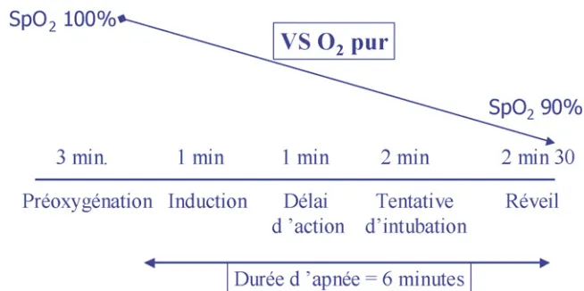
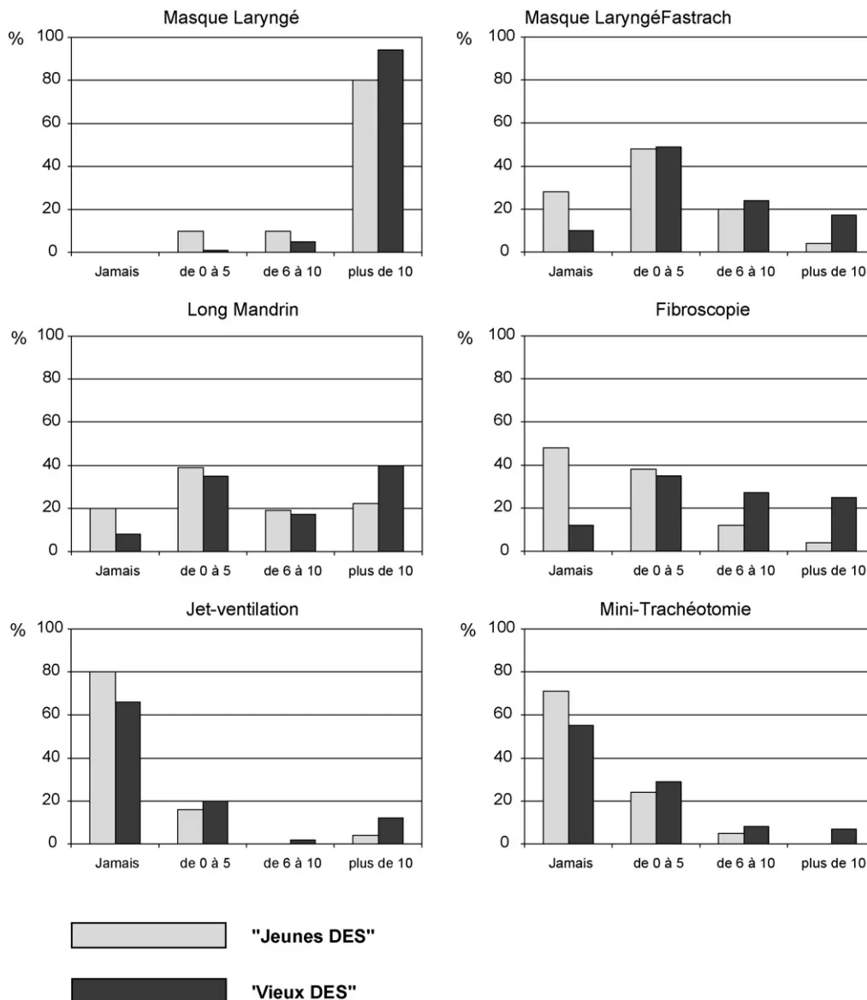

Éditorial
La conférence d'experts publiée en 1996 [1] vient d'être réactualisée. Les recommandations des experts sont publiées dans ce numéro des Annales françaises d'anesthésie et de réanimation. Le rôle des experts s'arrête-t-il là ? Quel est l'impact d'une conférence d'experts ? La publication et la large diffusion des recommandations sont-elles une réponse suffisante aux problèmes posés pour la prise en charge d'une intubation difficile (ID) ? Il était estimé, dans les années 1990, que l'ID était responsable de 1000 morts par an dans les pays industrialisés [1]. Il semble que ce chiffre ait considérablement diminué ces dernières années [2–4]. En France, l'enquête réalisée sur les causes des décès survenus en 1999 pouvant être rapportés à l'anesthésie, a mis en cause l'impossibilité d'intuber dans 14 cas, ce qui représente un quart des décès par causes respiratoires imputables totalement à l'anesthésie. Au Danemark, parmi les 24 décès de cause anesthésique ayant fait l'objet d'un procès, quatre sont liés à une ID [3]. Aux États-Unis, les morts dues à une difficulté de contrôle des voies aériennes ont diminué ces dernières années [4]. Il semble que la diminution soit liée à la publication par l'American Society of Anesthesiologists (ASA) des recommandations et des algorithmes de prise en charge de l'ID [4]. Aux vues de ces résultats, l'élaboration par les sociétés savantes de recommandations de bonnes pratiques est une étape indispensable à l'amélioration de la prise en charge de l'ID et à la diminution, voire à la prévention, des accidents graves liés à cette cause. Pourtant, les différentes enquêtes réalisées montrent que le niveau de connaissance des techniques recommandées pour la prise en charge d'une ID est insuffisant [5–8]. Une enquête récente réalisée au Danemark montre que le LMA-FastrachTM n'est présent sur le chariot d'intubation difficile que dans 72 % des hôpitaux et le fibroscopie dans 70 % des hôpitaux. Le long mandrin n'est utilisé que dans 28 % des hôpitaux [5]. Une autre étude a montré, après analyse de 24 cas d'ID non prévue, que la
prise en charge des patients n'était conforme aux recommandations que dans trois cas [6].
Une étude canadienne sur la prise en charge d'une intubation impossible et d'une ventilation impossible montre que 26 % des anesthésistes utilisent un fibroscopie et seulement 20 % un LMA-FastrachTM [7]. La situation n'est pas meilleure en Allemagne puisque, 35 % des anesthésistes enquêtés n'ont jamais utilisé un LMA-FastrachTM, 24 % utilisent souvent l'intubation nasale à l'aveugle et 20 % n'ont pas d'algorithmes de prise en charge [8]. En France, les premiers résultats d'une enquête en cours montrent que 80 % des anesthésistes utilisent le LMA-FastrachTM, 64 % le fibroscopie, 68 % le long mandrin et 16 % la ventilation transtrachéale, techniques recommandées dans les algorithmes de prise en charge de l'intubation difficile. La comparaison avec la même enquête réalisée dix ans auparavant montre une nette amélioration de la connaissance de ces techniques à l'exception de la ventilation transtrachéale [9]. Cette étude avait montré que la simple diffusion de la conférence d'experts sur l'ID ne suffisait pas et n'avait que peu d'impact sur le niveau de connaissance des anesthésistes. La faiblesse des algorithmes recommandés par le groupe d'experts est que la majorité des anesthésistes ne pratiquent pas toutes les techniques recommandées, particulièrement la ventilation transtrachéale et l'intubation avec fibroscopie. Leur force est de recommander un nombre limité de techniques. Plusieurs études ont montré qu'il est préférable d'avoir la maîtrise d'un petit nombre de techniques plutôt qu'une petite expérience d'un grand nombre de techniques [10–12]. Des formations à l'utilisation de ces techniques doivent être organisées. La motivation des anesthésistes pour la diminution du risque et l'amélioration de la qualité de prise en charge du contrôle des voies aériennes est le facteur déterminant du succès et de l'impact de cette conférence d'experts. La mise en œuvre par le Collège français des anesthésistes-réanimateurs d'une évaluation des pratiques cliniques (EPP) portant sur la prise en charge de l'ID sera certainement un élément déterminant de l'impact de la conférence.
☆ Conférence d'experts « Intubation difficile », Sfar 2006.
A.-M. Cros
Service d'anesthésie-réanimation IV,
hôpital Pellegrin-Enfants, 33076 Bordeaux cedex,
France
Adresse e-mail : anne-marie.cros@chu-bordeaux.fr
Disponible sur Internet le 21 décembre 2007
Conférence d'experts
P. Diemunscha,*, O. Langeronb, M. Richardc, F. Lenfantd
a Département d'anesthésiologie, hôpital Civil de Strasbourg, 1, place de l'Hôpital, 67091 Strasbourg, France
b Département d'anesthésie-réanimation, groupe hospitalier Pitié-Salpêtrière, 47–83, boulevard de l'Hôpital, 75651 Paris cedex 13, France
c Département d'anesthésie-réanimation, 1, hôpital-Nord, Grenoble, France
d Département d'anesthésie-réanimation, hôpital Général, 3, rue du Faubourg-Raines, B.P. 1519, 21033 Dijon cedex, France
Disponible sur Internet le 4 janvier 2008
Mots clés : Intubation difficile ; Ventilation au masque difficile ; Signes prédictifs
Keywords: Difficult intubation; Difficult mask ventilation; Predictive signs
Au cours des deux décennies passées, la sensibilisation des praticiens, la généralisation de l'emploi des masques laryngés, la diffusion de la fibroscopie et l'introduction d'algorithmes, ont contribué à la réduction des complications par impossibilité de ventiler les patients. Les problèmes ventilatoires restent la première cause de mortalité anesthésique mais la pneumopathie d'inhalation est plus souvent en cause que l'impossibilité de contrôler les voies aériennes [1]. Dépister, autant que possible, les patients qui seront difficiles à ventiler au masque et difficiles à intuber, afin de prendre en première intention des mesures adaptées, est indispensable en anesthésie comme aux soins intensifs. Cependant aucun examen clinique simple ne permet ce dépistage de manière absolue. Par ailleurs, l'identification d'un problème ne suffit pas à le résoudre et le dépistage, pour indispensable qu'il soit, n'est en rien suffisant.
La prédiction d'une ventilation au masque difficile (VMD) est d'une importance cruciale, mais n'a connu jusqu'à une période récente qu'un développement d'arrière plan par rapport à la prédiction de l'intubation difficile (ID).
La ventilation au masque est définie comme étant difficile si, chez un patient sans pathologie pulmonaire, en position optimale, avec une canule oropharyngée et avec subluxation mandibulaire, un opérateur non assisté constate au moins l'un des éléments suivants :
☆ Conférence d'experts « Intubation difficile », Sfar 2006.
* Auteur correspondant.
Adresse e-mail : pierre.diemunsch@chru-strasbourg.fr (P. Diemunsch).
Du fait de cette multiplicité de critères de définition, l'incidence de la VMD varie de 0,08 à 5 % selon les séries [3]. L'incidence est plus élevée dans certaines situations pathologiques (chirurgie ORL, antécédent de radiothérapie cervicale, traumatisme de la face et du cou).
Dans une étude prospective publiée en 1996, portant sur 10 507 patients, El-Ganzouri retrouve huit VMD, soit une incidence de 0,08 % [2]. L'appréciation préopératoire des voies aériennes était réalisée à l'aide des variables suivantes :
Ces critères permettent de calculer un index de risque simplifié de contrôle des voies aériennes (cf. plus loin). Un index supérieur ou égal à quatre est prédictif d'une VMD avec moins de faux positifs que la classe III de Mallampati. Par ailleurs, un index de risque simplifié nul ou une classe de Mallampati I permettent de prévoir une ventilation au masque facile sans aucun faux négatif. Toutefois, compte tenu de l'incidence très faible de la VMD dans la population étudiée, l'étude n'a pas la puissance nécessaire pour établir par analyse multivariée un score de prédiction dédié spécifiquement à la VMD.
En 1997, Roch et al. [5] ont eu l'idée de définir des critères de VMD sur une série prospective de 1428 patients, en utilisant les critères conventionnels d'intubation difficile. L'incidence de la VMD dans cette série était de 5,9 %. En analyse multivariée, les facteurs prédictifs de VMD étaient une ouverture de bouche inférieure à 35 mm, un index de masse corporelle (IMC) supérieure à 30 kg/m2 et un antécédent de radiothérapie cervicale.
La première étude prospective en analyse multivariée, spécifiquement dédiée à la recherche des critères de VMD, a été publié par Langeron et al. [3] à propos de 1502 patients. La VMD était définie comme l'impossibilité pour un anesthésiste non assisté par un aide de maintenir une supérieure à 92 % () ou de prévenir ou de corriger des signes de ventilation au masque inadéquate en pression positive, sous anesthésie générale.
L'évaluation préanesthésique recherchait des facteurs :
L'anesthésiste demandait au patient s'il était ronfleur et donnait une appréciation subjective sur la possibilité d'une VMD.
Les raisons pour lesquelles la ventilation a été qualifiée de difficile après induction de l'anesthésie sont détaillées :
Sur les 1502 patients inclus, 75 ont eu une VMD (5 % ; intervalle de confiance 3,9–6,1 %) et la ventilation a été impossible (VMI) une fois. La prédiction subjective par l'anesthésiste est peu performante (sensibilité 17 %, spécificité 96 % ; valeur prédictive positive (VPP) 19 % et négative (VPN) 96 %).
L'analyse univariée retient huit facteurs de risque de VMD : IMC, âge, classe de Mallampati, distance thyromentale, macroglossie, édentation, présence d'une barbe et sujet ronfleur. Les seuils établis par construction de courbes ROC étaient l'âge supérieur à 55 ans et IMC supérieur à 26 kg/m2. L'ouverture de bouche, la rétrognathie et l'usage de curares n'étaient pas discriminants.
L'analyse multivariée révèle que les cinq facteurs associés à une VMD sont l'âge supérieur à 55 ans, l'IMC supérieur à 26 kg/m2, une édentation, un sujet ronfleur et la présence d'une barbe. La courbe ROC montre que la présence de deux de ces cinq facteurs prédit une VMD avec le meilleur compromis entre sensibilité (72 %) et spécificité (73 %). La faible VPP (12 %) est en rapport avec l'incidence faible de la VMD. En revanche, la VPN reste élevée (98 %) signifiant que l'absence de ces facteurs rend une VM facile hautement probable (NP III).
Dans cette série, chez les sujets à risque de VMD, le risque d'ID est multiplié par quatre et celui d'intubation impossible par 12. Les incidences des associations VMD-intubation difficile et VMD-intubation impossible étaient respectivement de 1,5 et de 0,3 %.
Un IMC élevé expose à une réduction de l'espace pharyngé postérieur, en arrière de la base de la langue, au ronflement et au syndrome de l'apnée obstructive du sommeil (SAOS). Cette obstruction des voies aériennes supérieures peut survenir après l'induction d'une anesthésie générale.
Le risque supérieur de VMD après 55 ans pourrait être en rapport avec une augmentation des résistances des voies
aériennes avec l'âge chez l'homme (non chez la femme) [6], expliquant en partie la prédominance masculine du SAOS.
La présence d'une barbe ou de moustaches comme facteurs de risque de VMD est corroborée par plusieurs cas cliniques [7,8].
Les limites des critères prédictifs de la VMD tiennent à la population sur laquelle ils ont été établis, à savoir des sujets adultes en chirurgie générale réglée. Les sujets pour lesquels une intubation vigile était nécessaire, de même que ceux anesthésiés en urgence étaient exclus. D'autres sujets potentiellement à risque n'ont pas été inclus, comme les patients d'ORL, d'obstétrique ou ceux nécessitant une intubation en contexte préhospitalier (Samu). Ni la cachexie, ni une conformation creuse du visage n'ont été prises en considération. Or ces particularités morphologiques faciales ont été rapportées de façon anecdotique comme des facteurs de VMD. L'énucléation orbitaire est une cause exceptionnelle de VMD lorsqu'elle s'accompagne d'une communication entre l'orbite et le rhinopharynx. L'examen clinique et la réalisation d'une radiographie des orbites peuvent mettre cette communication en évidence [9]. Un pharyngostome représente une autre cause possible de VMD par défaut d'étanchéité des voies aériennes supérieures.
Sur la base des anomalies anatomiques communes entre VMD, ID et SAOS, Chou et al. [10] ont proposé que la distance entre le plan mandibulaire et l'os hyoïde (DMH) soit recherchée comme facteur de risque de VMD. Des études céphalométriques et radiographiques ont montré que la DMH, corrélée à l'âge, est plus importante à la fois chez les patients atteints de SAOS et chez les patients difficiles à intuber. La base de langue tend à s'insérer de plus en plus bas vers l'hypopharynx avec l'âge et chez les patients à risque d'ID ou atteints d'un SAOS, provoquant une obstruction de l'espace aérien postérieur par les tissus mous au cours du sommeil et de l'anesthésie générale. Ces particularités anatomiques rendraient compte d'une certaine continuité entre ronflement nocturne, SAOS, VMD et ID. Toutefois, l'augmentation de la DMH n'est pas détectable par l'examen clinique habituel et son évaluation radiographique en routine est illusoire. Dans un autre travail, cette distance, très variable d'un individu à l'autre, ne différait pas statistiquement entre les patients témoins, ceux atteints de SAOS ni ceux ayant eu une ID [11]. L'intérêt de la DMH pour prédire une VMD reste, dans l'état actuel de la médecine factuelle, insuffisamment documenté.
Considérant le rôle majeur de l'obstruction pharyngée par la base de la langue et celui de la subluxation mandibulaire pour la prévenir, Takenaka et al. [12] ont proposé d'utiliser pour prédire la VMD un test décrit par Calder dans la prédiction de l'ID. Ce test (qui fait partie du score de Wilson, cf. plus loin) évalue la possibilité maximale de protrusion mandibulaire active (NP IV). Les résultats sont cotés de la façon suivante :
Calder et al. [13] ont montré que l'appartenance à la classe A est prédictive d'une laryngoscopie facile dans une population de patients atteints de pathologie cervicale. Cependant, la relation entre VMD et protraction réduite du maxillaire inférieur reste à démontrer [14].
Les incidences de la VMD rapportées dans les études consacrées au dépistage de l'ID, sont faibles, allant de 0,07 % [1] à 0,9 % [15] ou à 1,4 % [16]. En revanche, une analyse rétrospective de 2000 incidents d'anesthésie révèle une incidence de VMD beaucoup plus élevée, de 15 % [17]. Le problème est aggravé par son caractère inopiné : Asai et al. [2] rapportent qu'aucune difficulté n'avait été anticipée dans 57 % des cas de VMD [16].
L'absence de définition consensuelle de la VMD reste un problème non résolu. Les définitions utilisent, notamment dans les études de Langeron et de El-Ganzouri, certains critères subjectifs. Des travaux futurs devraient établir en premier lieu une définition claire, consensuelle et quantifiable de la VMD, en adossant par exemple une échelle numérique aux critères décrits précédemment [18].
En 2006, Kheterpal et al. [19] publient les résultats d'une étude destinée à contrôler l'incidence, les signes prédictifs et l'évolution de la VMD et de la VMI sur une population de 22 660 sujets observés en 24 mois. Ces auteurs proposent une définition quantifiée en quatre grades de la VMD et rapportent :
Un seul des 37 patients ayant une VMI a nécessité un abord chirurgical des voies aériennes.
Les facteurs prédictifs de VM grade 3 sont une IMC supérieur à 30 kg/m2, l'âge supérieur à 57 ans, la présence d'une barbe, un ronflement, une protraction mandibulaire limitée, une classe de Mallampati supérieure à III.
Les facteurs prédictifs de VM grade 4 ou VMI sont un ronflement et une distance thyromentale inférieurs à 6 cm.
Les facteurs prédictifs de VM de grade 3 ou 4 associée à une ID sont une IMC supérieur à 30, un ronflement, une protraction mandibulaire limitée, la présence d'anomalies anatomiques cervicales et un SAOS.
L'incidence de la VMD est de l'ordre du quart de celle rapportée par Langeron mais cela est vraisemblablement en rapport avec une définition différente. Les auteurs insistent sur le fait que le seul critère modifiable est le port de la barbe et sur l'importance de rechercher une protraction mandibulaire limitée.
Nous ne disposons à ce jour d'aucune donnée concernant spécifiquement les critères de prédiction de la VMD en pédiatrie.
Une intubation est difficile lorsqu'elle nécessite plus de deux laryngoscopies et/ou la mise en œuvre d'une technique alternative, après optimisation de la position de la tête, avec ou sans manipulation laryngée externe. Cette définition ne concerne pas les opérateurs en phase d'apprentissage. La difficulté de l'intubation peut être quantifiée par le score d'Adnet.
On a souvent assimilé difficulté d'intubation et difficulté de laryngoscopie et dans les études cliniques les grades de Cormack et Lehane (cf. Annexes) servent généralement de critère de substitution pour évaluer la validité des signes prédictifs d'ID [20]. Il est ainsi admis que l'intubation est facile pour le grade I et un peu plus difficile pour le grade II. Le grade III correspond à des difficultés sévères et le grade IV à une intubation impossible. Cette relation n'est pas absolue et assimiler complètement les notions de laryngoscopie difficile et d'ID est abusif, notamment en raison de la possibilité de la présence d'obstacles sous-glottiques.
Le diagnostic d'ID, comme celui de VMD, doit tenir compte des circonstances du geste qui ne peut être qualifié de difficile que s'il est tenté dans des conditions optimales (cf. Question 5).
Afin de clarifier les évaluations et de permettre des comparaisons entre les différents tests prédictifs et les différentes techniques de prise en charge des ID, Adnet et al. [21] proposent un score quantitatif de la difficulté d'intubation et met en évidence l'importance du contexte – hospitalier ou préhospitalier – dans l'incidence et la sévérité de l'ID (cf. Annexes).
Le dépistage de l'ID doit être systématique et documenté, chaque fois qu'une intubation est prévue ou probable, notamment lors de l'examen préanesthésique et lors de l'admission en unité de soins intensifs.
Indépendamment des antécédents d'ID, les trois éléments permettant d'envisager une ID chez l'adulte sont ceux préconisés par la conférence de consensus de 2002 [22] : classe de Mallampati supérieure à II, distance thyromentale inférieure à 65 mm, ouverture de bouche inférieure à 35 mm. Ces trois éléments sont utilement complétés par l'appréciation de la proéminence des incisives supérieures, de la mobilité mandibulaire et de la mobilité cervicale. La mobilité mandibulaire peut être évaluée par le test de morsure de la lèvre supérieure. Il convient également de tenir compte d'autres éléments en particulier de l'IMC, du SAOS, du diabète et autres pathologies limitant la mobilité articulaire, des antécédents ORL et du contexte de toxémie gravidique. Ces éléments sont intégrés dans le cadre du score quantitatif d'Arné [64] plus adapté au contexte de la recherche clinique.
Les examens complémentaires n'ont pas démontré leur intérêt dans le dépistage d'une ID.
Les facteurs prédictifs de l'intubation impossible par voie orotrachéale sont ceux retenus par la conférence d'experts de 1996 : ouverture de bouche inférieure à 20 mm ; rachis bloqué en flexion ; dysmorphie faciale sévère de l'enfant et antécédent d'échec d'intubation par voie orotrachéale.
Les tests prédictifs de l'ID ne possèdent pas tous les mêmes performances ni les mêmes indications. Il faut distinguer ceux qui sont nécessaires en clinique de ceux qui sont utiles en recherche.
La recherche d'éléments susceptibles d'annoncer une intubation difficile est une étape incontournable de la consultation d'anesthésie et de la prise en charge des patients susceptibles d'être ventilés, notamment en unité de soins intensifs. En urgence, cette évaluation est limitée par exemple à la recherche de prothèses, à l'évaluation de la classe de Mallampati, de la distance thyromentale, du test de morsure de la lèvre supérieure. La plupart des évaluations proposées dans la littérature comportent des points communs ou l'appréciation des mêmes critères selon différentes modalités (extension du cou et distance sternomentale par exemple). Il apparaît que l'élément anatomique le plus important est l'espace mandibulaire, dont on évalue la taille, la taille relative par rapport au massif lingual et la souplesse.
3.2.1.1. Classification de Mallampati [23]. Elle est établie sur un sujet éveillé, assis ou debout, qui ouvre la bouche aussi grand que possible et tire la langue aussi loin que possible, sans phonation. Initialement limitée à trois classes, elle fut complétée par l'ajout de la classe IV représentée par une vue limitée au palais dur. Ezri et al. [24] ont proposé de rajouter la classe zéro définie par la possibilité d'apercevoir l'épiglotte, constamment associée à une laryngoscopie de grade I selon Cormack et Lehane. Il existe une bonne corrélation entre l'observation d'une classe I et une laryngoscopie de grade I, tandis qu'une classe IV est généralement associée à un grade III ou IV. En revanche, la corrélation avec les grades de Cormack et Lehane est peu fiable pour les classes II et III dans lesquelles les quatre grades sont représentés de manière assez homogène [25].
La classification de Mallampati a été identifiée comme le seul facteur prédictif d'ID sur une population obstétricale, mais ce test n'est en fait ni spécifique ni sensible [26] (Tableau 1).
Les performances prédictives médiocres de la classification de Mallampati ont été imputées à des erreurs de méthodologie, comme celle demandant au patient de « dire A » (optimise le résultat) ou lorsque le patient arque la langue ce qui obère le résultat. L'insuffisance de la classification de Mallampati a été spécifiquement montrée chez l'obèse [27,28] ; elle ne peut être considérée comme un prédicteur isolément suffisant de la difficulté de la laryngoscopie ou, a fortiori, de l'ID [29]. C'est pourquoi plusieurs combinaisons de critères ont été proposées dans le but d'améliorer le dépistage : l'association à une classe III ou IV, d'une ouverture de bouche réduite [30], d'une distance sternomentale (DSM) inférieure à 12,5 cm et/ou
Tableau 1Classification de Mallampati modifiée par Samsoon et Young (ajout de la classe IV et performance du test)
| Classe | Structures visibles (sujet assis, ouverture de bouche et protrusion linguale maximales) |
|---|---|
| I | Luette, piliers du voile du palais, palais mou, palais dur |
| II | Piliers du voile du palais, palais mou, palais dur |
| III | Palais mou, palais dur |
| IV | Palais dur seul |
| Classe de Mallampati prédictive d'une ID | Vrais positifs (%) | Faux positifs (%) |
|---|---|---|
| > II | 55 | 5 |
thyromentale (DTM) inférieure à 6,5 cm est ainsi fortement prédictive d'une ID [31].
Après une première évaluation de la classe de Mallampati, la situation réévaluée par le même anesthésiste peut changer en quelques heures, par exemple chez une jeune femme prééclamptique [32] ou en moins de deux semaines, sans aucune autre modification associée [33].
L'épaisseur de la langue détermine l'occupation de l'espace mandibulaire et influe sur la classification de Mallampati. Une macroglossie entrave la possibilité de déplacer la base de langue et gêne la laryngoscopie. L'hypertrophie de l'amygdale linguale serait une des principales causes d'intubation difficile non prévue [34,35]. La VMD est possible dans ce contexte, d'autant plus que les tentatives de laryngoscopie auront été nombreuses [36].
L'évaluation de la classe de Mallampati permet de dépister la présence d'un éventuel piercing de la langue qu'il est impératif de retirer en raison des risques d'œdème et de blessure de la langue, d'hémorragie et de difficulté de la laryngoscopie [37].
3.2.1.2. Test de la morsure de la lèvre supérieure. Khan et al. [38] ont comparé en 2003 la classification de Mallampati à un autre test simple consistant à tenter de masquer la lèvre supérieure par les incisives inférieures. Trois classes sont possibles :
Ce test qui évalue la protrusion mandibulaire volontaire possède pour ses auteurs une meilleure spécificité (88,7 %) que la classification de Mallampati pour une sensibilité et des valeurs prédictives positive et négative équivalentes. En fait, un travail récent ne retrouve pas cette supériorité sur une série de 1107 patients et attribue au test de morsure de la lèvre supérieure le même manque de fiabilité et de pertinence clinique qu'à la classification de Mallampati [39].
3.2.1.3. Distance thyromentale et distance sternomentale. Sur une série de 160 patients, Ayoub et al. [40] observent une meilleure corrélation entre la DTM et les grades de Cormack et
Tableau 2Comparaison de quatre critères prédictifs sur une même population
| Test () | Sensibilité (%) | Spécificité (%) | VPP (%) |
|---|---|---|---|
| Mallampati > II | 64,7 | 66,1 | 8,9 |
| Distance thyromentale cm | 64,7 | 81,4 | 15,1 |
| Distance sternomentale cm | 82,4 | 88,6 | 26,9 |
| Subluxation 0 ou < 0 | 29,4 | 85,0 | 9,1 |
VPP : valeur prédictive positive.
Lehane qu'entre les classes de Mallampati et les grades de Cormack et Lehane. Une DTM supérieure à 4 cm est prédictive d'une laryngoscopie facile. Lorsque la DTM est inférieure à 4 cm, la laryngoscopie est difficile (grade de Cormack et Lehane supérieure à deux) dans 48 % des cas si la classe de Mallampati est I ou II et dans 79 % des cas si la classe de Mallampati est III ou IV.
La comparaison de quatre critères prédictifs sur une même population () confirme que la classe de Mallampati supérieure à II n'est pas fiable [41] (Tableau 2). En revanche, la mesure de la DSM est à la fois sensible et spécifique lorsqu'on admet comme valeur seuil 12,5 cm (tête en extension maximale et bouche close). La DSM semble également plus performante que la DTM (valeur seuil : 6,5 cm) et que l'impossibilité de réaliser une subluxation de la mandibule.
La DSM est influencée par l'âge et le sexe du patient [42]. Il existe une bonne reproductibilité entre observateurs pour la classification de Mallampati, l'ouverture de bouche et la subluxation tandis que la DTM et la mobilité de la tête et du cou sont évalués très variablement selon les médecins [43]. Naguib et al. [44] évaluent la distance thyrosterne, la DTM, la circonférence du cou et la classification de Mallampati. La combinaison de ces quatre facteurs prédictifs selon une formule issue des analyses de régression, possède une sensibilité de 95,4 %, une spécificité de 91,2 % et une valeur prédictive positive de 87,5 %.
3.2.1.4. Autres évaluations anatomiques. Les scores de Wilson et de El-Ganzouri figurent en Annexe.
Pour Karkouti et al. [45], la combinaison prédictive idéale regroupe trois critères : l'ouverture de bouche, la protrusion de la mandibule et l'extension de l'articulation atlanto-occipitale. Cette conclusion est fondée sur une analyse multivariée de critères prédictifs portant sur un collectif de 461 patients parmi lesquels 38 ont eu une ID. Dans cette étude c'est l'ID qui est prise en compte comme critère de jugement (et non le critère de substitution laryngoscopique). Lorsque les valeurs seuils pour l'ouverture de bouche, l'extension atlanto-occipitale et la protrusion mandibulaire sont, respectivement, de 5,5 cm, 35° et 1,2 cm, la combinaison des trois critères permet la prédiction de l'ID avec une sensibilité de 86,8 % et une spécificité de 96,0 %.
Les problèmes liés aux pathologies congénitales, aux affections rhumatologiques, les pathologies locales, les antécédents traumatologiques de brûlures, d'irradiation sont le plus souvent évidents ou facilement dépistés, sans test spécifique, dès l'examen et l'interrogatoire.
Il est généralement considéré que l'intubation est plus souvent difficile chez la femme enceinte, en ORL et en traumatologie mais des données contradictoires ont été publiées [46–48]. Dans une série comprenant 411 femmes dont 151 étaient enceintes, la grossesse n'augmente pas le risques d'ID [49]. Cependant, l'hypertrophie mammaire peut empêcher l'introduction du laryngoscope et l'anatomie du pharynx peut être modifiée par le travail obstétrical en particulier au cours de la prééclampsie [30].
L'ID définie par une valeur supérieure à cinq du score d'Adnet semble plus fréquente chez les patients obèses ( ; ) que chez les patients non ou modérément obèses ( ; ) [50], tandis que la qualité de la laryngoscopie n'est pas différente dans les deux groupes. En revanche, la laryngoscopie est plus difficile chez le sujet à la fois obèse et édenté [51]. Chez les sujets obèses, il n'y a pas de proportionnalité entre l'IMC et l'incidence ou la gravité des difficultés de laryngoscopie ou d'intubation [52].
Le SAOS est abordé avec le problème de la VMD. Sa prévalence est estimée entre 2 et 4 % de la population générale. Chez les sujets atteints, l'incidence de l'ID n'est pas corrélée avec la gravité du syndrome [53], mais est plus importante lorsque le sujet est obèse [54–57]. Quoi qu'il en soit, le SAOS doit être considéré comme un facteur de risque d'ID.
Le diabète est associé à des incidences d'ID de 16 à 32 % et impose la recherche du classique signe du prieur. Le signe du prieur est positif lorsque les faces palmaires des cinquièmes doigts ne se touchent pas alors que le sujet joint les mains dans une attitude qui évoque la prière. La description de l'empreinte palmaire de la main dominante en quatre grades a été proposée en alternative [58,59] (cf. Annexes). Un grade non nul serait un prédicteur plus sensible de la laryngoscopie difficile que la classe de Mallampati, la DTM et le degré d'extension de la tête. L'acromégalie est également reconnue comme terrain à risque et l'intubation difficile y est rencontrée à une fréquence de l'ordre de 10 % [60].
Les antécédents d'intervention neurochirurgicale avec ou sans section du muscle temporal peuvent créer de véritables pseudo-ankyloses de la mandibule et peuvent de ce fait prédisposer aux ID [61]. La papillomatose linguale, l'angiodème, l'hypertrophie de l'amygdale linguale, représentent des pièges redoutables difficiles à dépister à l'interrogatoire et à l'examen préanesthésique. De même, les limitations des mouvements de la langue peuvent induire une ID et doivent être recherchées lors de la classification selon Mallampati [62].
Dans le cadre du sida, un sarcome de Kaposi sus-glottique, comme toute tumeur des voies aériennes, peut être responsable d'une ID [63].
La combinaison d'éléments relatifs au terrain et de critères anatomiques permet à Arné [64] d'obtenir pour la détection de l'ID :
Le score a été validé sur le mode prospectif () après avoir été établi dans une première étude (). L'incidence globale de l'intubation difficile pour l'ensemble des patients, est de 4,2 % tandis qu'aucune intubation ne demeure impossible.
Les facteurs pris en compte dans le score d'Arné sont les suivants :
Chaque facteur est pondéré pour bâtir un score validé qui représente un excellent outil de recherche clinique (cf. Annexes). Une variante dédiée aux patients en ORL a été proposée par Ayuso (cf. supra [46]).
Dans une comparaison avec les scores de Wilson et de Naguib, le score d'Arné, quoique moins sensible que le score de Naguib, est le plus spécifique et possède la meilleure aire sous la courbe ROC. L'ensemble des données de cette comparaison permet de proposer le nouveau score de Naguib [65] calculé selon la formule :
DTM, ouverture buccale et taille en centimètres.
Une valeur inférieure à zéro prédit une intubation facile tandis qu'une valeur supérieure à zéro prédit une ID avec une sensibilité de 82,5 %, une spécificité de 85,6 % et une aire sous la courbe ROC de 0,90.
Une méta-analyse comparant la classification de Mallampati, la distance sternomentale, la DTM, l'ouverture de bouche et le score de Wilson confirme sur un collectif total de 50 760 patients une incidence de l'ID de 5,8 % globalement, de 6,2 % chez les sujets sans particularité, de 3,1 % en obstétrique, de 15,8 % chez les sujets obèses. Tous les tests évalués sont peu sensibles et moyennement spécifiques. La meilleure combinaison de cette comparaison est celle de la classification de Mallampati et de la DTM avec une aire sous la courbe ROC de 0,84 [66].
Parmi les évaluations paracliniques, la laryngoscopie indirecte semble la moins complexe et la plus facile à interpréter. Une vue équivalente aux grades III et IV de Cormack et Lehane est prédictive d'une laryngoscopie directe identique et d'une intubation difficile. La valeur prédictive positive, la sensibilité et la spécificité de ce test sont meilleures que celles de la classification de Mallampati et du score de Wilson (cf. Annexe) [67]. Cet examen n'est pas possible chez tous les patients : 15 % des sujets ont un réflexe nauséeux rédhibitoire.
La combinaison de critères cliniques radiographiques et tomodensitométriques proposée par Naguib est intéressante d'un point de vue rétrospectif mais ne peut être appliquée en tant qu'outil de dépistage systématique [42]. Il en va de même pour l'analyse de la radiographie cervicale de profil [68]. Dans une étude prospective portant sur 1748 patients, la mesure du volume supraglottique par réflectométrie acoustique ne permet pas de dépister l'ID [69].
En pratique clinique, les examens complémentaires n'ont pas de place pour le dépistage systématique de l'ID.
Dans les situations d'urgence plusieurs éléments convergents permettent d'étayer la probabilité d'une ID. La fiabilité de l'appréciation croît avec le nombre de critères évalués. Pour le patient en unité de soins intensifs, l'évaluation doit inclure l'impression générale du clinicien, l'état général et l'impossibilité de s'alimenter [70].
Le dépistage systématique de l'ID par la classification de Mallampati, la distance thyromentale et la mobilité cervicale sont apparus peu rentables dans un service d'urgences traumatologiques puisque applicable à moins du tiers des patients : seuls 32 % des patients nécessitant une intubation à séquence rapide étaient à la fois capables d'obéir à un ordre simple et non porteurs d'une immobilisation cervicale. Les trois échecs de cette série de 850 intubations concernaient des patients impossibles à évaluer [71].
Dans le contexte préhospitalier, un certain nombre de situations peuvent être retenues comme étant à risque : outre les difficultés d'accès au patient et de bon positionnement en vue de l'intubation de la trachée, le traumatisme du rachis cervical suspecté ou avéré, le traumatisme maxillofacial, les pathologies intéressant la sphère ORL incluant les œdèmes, les brûlures et les antécédents ou une anatomie évocateurs d'ID doivent mettre en garde le praticien. La difficulté de l'intubation est plus grande et plus fréquente dans ce contexte préhospitalier [21].
En réanimation, les antécédents d'intubation difficile ou pouvant être à l'origine d'une intubation difficile doivent être renseignés à l'admission du patient.
L'ID imprévue est exceptionnelle chez l'enfant, l'ID est très rare en dehors des dysmorphies faciales, il existe une longue
liste de syndromes malformatifs qui peuvent s'accompagner d'ID (cf. Annexes). La méconnaissance des particularités anatomiques de l'enfant peut rendre le geste d'intubation trachéale difficile et il convient de rechercher systématiquement les signes cliniques qui peuvent faire suspecter une ID et, particulièrement, l'existence d'un rétrognathisme, de malformation de l'oreille externe (uni- ou bilatérale) et de troubles de la succion-déglutition [72]. Les enquêtes de morbidité et de mortalité en anesthésie pédiatrique ont montré un risque augmenté de trois à quatre fois chez le petit enfant de moins d'un an, les complications respiratoires étant au premier plan [73].
Les critères de définition de l'ID reconnus pour l'adulte, ne peuvent être transposés à l'enfant.
Certaines particularités anatomiques de l'enfant peuvent rendre l'intubation difficile pour les anesthésistes non spécialisés en pédiatrie : réduction de taille de la filière aérienne en rapport avec l'âge, tête proportionnellement plus grosse avec occiput proéminent, larynx du nourrisson en position céphalique donc plus antérieur en laryngoscopie, épiglotte large, en forme d'oméga (nécessité éventuelle de la charger avec la lame du laryngoscope), distance proportionnellement plus courte entre le voile du palais et la base de la langue, plan des cordes vocales oblique en bas et en avant, rétrécissement de la filière laryngée au niveau sous-glottique, le cartilage cricoïde étant inextensible.
L'interrogatoire recherche, outre les antécédents de traumatisme potentiel du larynx ou de la trachée, la présence d'un ronflement nocturne avec ou non SAOS. L'évaluation tient compte des éléments suivants :
L'examen clinique est difficile chez le petit enfant souvent par manque de coopération ; il faut rechercher une asymétrie faciale ou mandibulaire, des cicatrices faciales ou cervicales. De profil, l'examen note la position du menton, l'existence d'une micrognathie ou d'une rétrognathie mesurée par rapport à une ligne tangente à la lèvre supérieure. La DTM avec la tête en hyperextension semble être la mesure la plus pertinente chez l'enfant pour la plupart des équipes. Elle permet l'estimation de l'espace mandibulaire et doit être supérieure à 15 mm chez le nouveau-né, 25 mm chez le nourrisson et 35 mm chez l'enfant de dix ans. L'ouverture de bouche, lorsqu'elle est possible est
mesurée en ouverture maximale à la recherche d'une diminution de la mobilité de l'articulation temporomandibulaire. Elle permet d'évaluer la classe de Mallampati [75], chez le grand enfant, l'existence d'une macroglossie, l'intégrité de la voûte palatine, l'espace existant entre la langue et le palais, la taille et l'aspect des amygdales. Elle peut être évaluée par la possibilité ou non chez l'enfant d'insérer ses trois doigts en travers dans la bouche.
La valeur prédictive positive de l'ID reste faible (inférieure à 40 %) et aucun test n'est validé chez l'enfant.
De valeur prédictive médiocre, ils sont inutiles, sauf en cas de traumatisme rachidien récent ou de pathologie ostéoarticulaire.
Ces grades, définis dans une population obstétricale, sont en général associés à des difficultés croissantes d'intubation orotrachéale. Ils dépendent du laryngoscopiste et peuvent être modifiés par manipulation laryngée externe. Leur corrélation avec les quatre classes de Mallampati modifiées selon Samsoon et Young n'est ni très sensible, ni très spécifique.
| Grade de Cormack et Lehane | Structures identifiées à la laryngoscopie directe |
|---|---|
| I | Vue complète de la glotte |
| II | Vue limitée à l'extrémité postérieure de la glotte; exposition incomplète des cordes |
| III | Vue limitée à l'épiglotte; pas d'exposition de la glotte |
| IV | Vue limitée au palais mou; pas d'exposition de l'épiglotte |
Le score d'Adnet permet une quantification de la difficulté de l'intubation orotrachéale. Cette difficulté est plus fréquente et plus grande en contexte préhospitalier.
| Paramètres pris en compte | Degré de difficulté en fonction du score |
|---|---|
| Nombre de tentatives au delà de 1 | |
| Nombre d'opérateurs au delà de 1 | |
| Nombre de techniques alternatives | Total = 0 ↔ facile, situation idéale |
| Grade de Cormack et Lehane –1 (grade 1 = 0) | 0 < total ≤ 5 ↔ difficulté légère |
| Force de traction normale (0) ou anormale (1) | Total > 5 ↔ difficulté modérée à majeure |
| Pression laryngée: non (0) ou oui (1) sauf Sellick | ∞ correspond à une intubation impossible |
| Cordes vocales en abduction (0) ou adduction (1) |
Distribution des scores de difficulté selon la circonstance de prise en charge
| Population hospitalière (n = 289) (%) | Population préhospitalière (n = 311) (%) | |
|---|---|---|
| Score = 0 | 53 ; (durée : six à 50 secondes; médiane: 18 secondes) | 28,2 |
| Score > 5 | 6,3 | 16,1 dont un impossible (>17) |
L'étude de Wilson a marqué une avancée importante dans la tentative de dépistage de l'ID. (Le critère évalué est la laryngoscopie difficile et non de l'ID).
| Critère | Points | ||
|---|---|---|---|
| 0 | 1 | 2 | |
| Poids (kg) | < 90 | 90–110 | > 110 |
| Mobilité de la tête et du cou (degrés) | > 90 | 90 | < 90 |
| Mobilité mandibulaire | OB* > 5 cm ou subluxation† > 0 | OB* < 5 cm et subluxation† = 0 | OB* < 5 cm et subluxation† < 0 |
| Rétrognathie | Non | Modérée | Sévère |
| Proéminence des incisives supérieures | Non | Modérée | Sévère |
*OB : ouverture de bouche ; †subluxation : possibilité d'amener les incisives mandibulaires en avant des incisives maxillaires (> 0) ; ou juste à leur niveau (= 0) ; ou impossibilité d'avancer la mandibule en regard du maxillaire (< 0). Un score supérieur ou égal à deux est prédictif d'une laryngoscopie difficile. Performances du score en fonction de la valeur seuil choisie (série prospective).
| Choix de la valeur seuil du score de Wilson | Vrais positifs (%) | Faux positives (%) |
|---|---|---|
| > 4 | 42 | 0,8 |
| > 3 | 50 | 4,6 |
| > 2 | 75 | 12,1 |
| > 1 | 92 | 26,6 |
Lorsque l'on admet une valeur seuil de 2 pour prédire une laryngoscopie difficile avec le score de Wilson, on dépiste justement 75 % des cas réellement difficiles (vrais positifs) et on considère à tort 12,1 % des patients faciles, comme difficiles (faux positifs). L'auteur calcule que pour une activité annuelle de 10 000 patients dont 1,5 % ont une laryngoscopie difficile (150), cela représente neuf vrais positifs dépistés par mois pour trois échappant au dépistage (total = 12). Sur les 9850 sujets faciles, 12 % provoquent la mise en œuvre inutile de mesures spécifiques.
Établi selon le même principe que le score de Wilson, il comporte des critères similaires plus la distance thyromentale, la classe de Mallampati et les antécédents d'ID. Une valeur de quatre ou plus possède des performances prédictives plus intéressantes que la classification de Mallampati. C'est également un score de prédiction de la laryngoscopie difficile
qui fut établi à partir d'une série de 10 507 patients parmi lesquels 5,1 % sont de grade III et 1 % de grade IV de Cormack et Lehane. Son intérêt dans la prédiction de la VMD a été évoqué plus haut.
| Critères | Points | ||
|---|---|---|---|
| 0 | 1 | 2 | |
| Poids (kg) | < 90 | 90–110 | > 110 |
| Mobilité de la tête et du cou (degrés) | > 90 | 90 ± 10 | < 80 |
| Ouverture de bouche | ≥ 4 cm | < 4 cm | |
| Subluxation > 0 | Possible | Pas possible | |
| Distance thyromentale | > 6,5 cm | 6–6,5 cm | < 6 cm |
| Classe de Mallampati | I | II | III |
| Antécédent d'ID | Non | Possible | Établi |
L'impression de l'empreinte palmaire est une alternative validée du signe de la prière et laisse une trace matérielle.
| Grade 0 | Impression de toutes les surfaces phalangaires | Pas d'ID |
| Grade 1 | Défaut d'impression de surfaces phalangaires des quatrième et/ou cinquième doigts | Prédictifs d'une ID |
| Grade 2 | Défaut d'impression de surfaces phalangaires du deuxième au cinquième doigt | |
| Grade 3 | Impression des extrémités des doigts seulement |
| Critère | Valeur simplifiée | (%) |
|---|---|---|
| Antécédents d'ID | 10 | En prenant 11 comme valeur seuil, le test a les performances suivantes: sensibilité: 93 ; spécificité: 93 ; VPP: 34 ; VVN: 99 ; (population générale étude de validation; n = 1090) |
| Pathologies favorisantes | 5 | |
| Symptômes respiratoires | 3 | |
| OB > 5 cm ou subluxation > 0 | 0 | |
| 3,5 cm < OB < 5 cm et subluxation = 0 | 3 | |
| OB < 3,5 cm et subluxation < 0 | 13 | ID: 3,8) |
| Distance thyromentale < à 6,5 cm | 4 | |
| Mobilité de la tête et du cou > 100° | 0 | |
| Mobilité de la tête et du cou 80–100° | 2 | |
| Mobilité de la tête et du cou < 80° | 5 | |
| Classe de Mallampati 1 | 0 | |
| Classe de Mallampati 2 | 2 | |
| Classe de Mallampati 3 | 6 | |
| Classe de Mallampati 4 | 8 | |
| Total maximum | 48 |
La laryngoscopie indirecte est plus performante que d'autres tests prédictifs de l'ID mais inenvisageable systématiquement.
| Test (n = 6 148 - ID: 1,3 %) | Sensibilité (%) | Spécificité (%) | VPP (%) |
|---|---|---|---|
| Score de Wilson > 2 | 55,4 | 86,1 | 5,9 |
| Classe de Mallampati > 2 | 67,9 | 52,5 | 2,2 |
| Laryngoscopie indirecte; Grade > II | 69,2 | 98,4 | 31,0 |
VPP : valeur prédictive positive.
Ce sont les « petits mentons » avec distance thyromentonnière diminuée et rétrognathisme.
Microréognathie, glossoptose et division palatine dans 80 % des cas. Il représente la cause la plus fréquente d'intubation difficile ou impossible du nouveau-né. Une détresse respiratoire néonatale peut être présente. Les conditions d'intubation s'améliorent à mesure que la mandibule grandit avec l'âge, du fait de la praxie orale à la cuillère puis de la mastication. [77,78]
Ce syndrome (ou syndrome de Franceschetti-Zwahlen-Klein ou dysostose mandibulo-faciale) : micrognathie avec hypoplasie des condyles mandibulaires, des arcades zygomatiques et des maxillaires, microstomie et atrésie des choanes fréquentes.
Le faciès est typique associant microphthalmie, obliquité antimongoloïde des fentes palpebrales et colobomes. Association parfois à des cardiopathies, malformation de vertèbres cervicales et nanisme.
Ou dysplasie oculo-auriculovertébrale ou syndrome facio-auriculovertébral ou microsomie hémifaciale appartient aux syndromes otomandibulaires ou du premier arc branchial : prévalence entre 1/5600 et 1/20 000, associe anomalies oculaires et auriculaires (microtie), hypoplasie faciale asymétrique, micrognathie et parfois une fente palatine. Les difficultés d'intubation augmentent avec l'âge.
L'oreille externe et la mandibule dépendent embryologiquement du premier ou du second arc branchial : les malformations de l'oreille externe peuvent donc être signe d'ID [79,80].
Caractérisés par une hypoplasie du maxillaire inférieur avec micro ou rétrognathisme pouvant rendre l'intubation difficile : syndrome de Cornelia de Lange, de Seckel ainsi que diverses craniosténoses (syndrome d'Apert, de Pfeiffer, de Crouzon).
2.1. Syndrome de Freeman-Sheldon ou du bébé siffleur ou maladie craniocarpotarsale : microstomie par fibrose des lèvres pouvant empêcher le passage de la lame de laryngoscope.
2.2. Syndrome de Dutch-Kentucky : trismus et anomalies des extrémités.
2.3. Ankyloses temporomandibulaires [81] : origine post-traumatique (forceps) ou post-infectieuse.
2.4. Épidermolyse bulleuse [82] : clivage de la jonction dermoépidermique provoquant érosions et bulles de la peau et des muqueuses (40 % d'ID et 60 % de saignements cutanéomuqueux).
Ossification des tendons, fascia, aponévroses et muscles responsable de la rigidité de la nuque et des articulations temporomandibulaires. On retrouve également les trismus (trismus, cellulite dentaire, tétanos), les séqueilles de plaies ou de brûlures avec des cicatrices rétractiles et certaines asymétries faciales majeures par lésions externes : naevus sébacé linéaire de Jadassohn, lymphangiomes...
3.1. Raideur cervicale réelle avec diminution de l'angle de Belhouse
Syndrome de Klippel-Feil, arthrogrypose multiple congénitale, syndrome du premier ou second arc branchial (ID en raison de la raideur cervicale par fusion des vertèbres cervicales) [83]. Une fusion des vertèbres cervicales sur les radiographies est hautement suspecte d'intubation difficile.
3.2. Risque de compression médullaire avec obligation de conserver une rectitude rachidienne
Maladie de Morquio ou mucopolysaccharidose type IV, atteinte des tissus cartilagineux, osseux et de la cornée, avec hypoplasie de l'ondotoïde qui entraîne un risque de luxation C1–C2 [84], syndrome de Down ou trisomie 21, myosite ossifiante, traumatisme rachidien interdisant la mobilisation cervicale, achondroplasie [85], syndrome de Larsen (radiographies cervicales indispensables).
Syndrome d'ostéogénèse imparfaite (maladie des os de verre), maladie d'Albers Schönberg (maladie des os de marbre).
Malformation craniofaciale la plus fréquente (1/800 naissances vivantes) avec 25 % de formes bilatérales [86]. Les fentes peuvent être isolées ou intégrées dans un syndrome connu (10 à 15 % des cas) : trisomie 13, syndrome orofaciodigital, syndrome de Pierre-Robin. Les fentes peuvent concerner le palais primaire (fente labiale, labio-alvéolaire) ou le palais secondaire (fente vélaire, vélopalatine) ou elles peuvent être associées (fente labiomaxillopalatine).
L'intubation est plus difficile dans les formes bilatérales lorsque le bourgeon prémaxillaire est proéminent, lorsqu'il existe un microrétrognathisme ou une macroglossie associée.
L'orthèse palatine peut être laissée en place [87] et facilite ainsi l'exposition en vue d'une intubation.
Macroglossie par hypertrophie musculaire (syndrome de Wiedeman-Beckwith avec hyperinsulinisme et viscéromégalie); infiltrats diffusés mucopolysaccharidiques (maladie de Hurler, syndrome de Hunter, maladie de Morquio [88]); hypothyroïdie congénitale; tumeurs; anomalies chromosomiques (chromosome 13).
Toutes les obstructions des voies aériennes supérieures congénitales ou acquises : lymphangiomes et hémolymphangiomes cervicofaciaux, laryngomalacie, corps étranger, papillomatose, épiglottite, abcès du plancher buccal, phlegmon amygdalien [89,90].
Les cyphoscolioses sévères avec menton bloqué sur le sternum, les positions difficiles de la tête, le matériel chirurgical en place sont des causes classiques d'ID [91,92].
[12] Takenaka I, Aoyama K, Kadoya T. Is difficult mask ventilation only correlated to the physical status of the patient? [letter] Anesthesiology 2001;94:935 [NP V].
[13] Calder I, Calder J, Crockard HA. Difficult direct laryngoscopy in patients with cervical spine disease. Anaesthesia 1995;50:756–63. [NP III].
[14] Langeron O. Is difficult mask ventilation only correlated to the physical status of the patient? [letter] Anesthesiology 2000;94:936.
[15] Rose DK, Cohen MM. The airway: problems and prediction in 18500 patients. Can J Anaesth 1994;41:372–83 [NP III].
[16] Asai T, Koga K, Vaughan RS. Respiratory complications associated with tracheal intubation and Extubation. Br J Anaesth 1998;80:767–75 [NP III].
[17] Williamson JA, Webb RK, Szekely S, Gillies ERN, Dreost AV. Difficult intubation: an analysis of 2000 incident reports. Anesth Intensive Care 1993;21:602–7 [NP IV].
[18] Adnet F. Difficult mask ventilation. An underestimated aspect of the problem of the difficult airway? [editorial] Anesthesiology 2000;92:1217–8.
[19] Kheterpal S, Han R, Tremper KK, Shanks A, Tait AR, O'Reilly M, et al. Incidence and predictors of difficult and impossible mask ventilation. Anesthesiology 2006;105:885–91 [NP III].
[20] Cormack RS, Lehane J. Difficult tracheal intubation in obstetrics. Anaesthesia 1984;39:1105–11 [NP IV].
[21] Adnet F, Borron SW, Racine SX, Clemessy JL, Fournier JL, Plaisance P, et al. The intubation difficulty scale (IDS): proposal and evaluation of new score characterizing the difficulty of endotracheal intubation. Anesthesiology 1997;87:1290–7 [NP III].
[22] Société française d'anesthésie et de réanimation. Conférence d'experts. Prise en charge des voies aériennes en anesthésie adulte à l'exception de l'intubation difficile. Ann Fr Anesth Reanim 2003;22:3s–17s.
[23] Mallampati SR, Gatt SP, Gugino LD. A clinical sign to predict difficult tracheal intubation. A prospective study. Can J Anaesth 1985;32:429–34 [NP III].
[24] Ezri T, Warters RD, Szmuk P, Saad-Eddin H, Geva D, Katz J, et al. The incidence of class "zero" airway and the impact of Mallampati score, age, sex, and body mass index on prediction of laryngoscopy grade. Anesth Analg 2001;93:1073–5 [NP III].
[25] Cattano D, Panicucci E, Paolicchi A, Forfori F, Giunta F, Hagberg C. Risk factors assessment of the difficult airway: an Italian survey of 1956 patients. Anesth Analg 2004;99:1774–9 [NP IV].
[26] Merah NA, Foulkes-Crabbe DJ, Kushimo OT, Ajayi PA. Prediction of difficult laryngoscopy in a population of Nigerian obstetric patients. West Afr J Med 2004;23:38–41 [NP III].
[27] Calder I. Acromegaly, the Mallampati, and difficult intubation. Anesthesiology 2001;94:1149–50 [NP V].
[28] Lavaut E, Juvin P, Dupont H, et al. Difficult intubation is not predicted by Mallampati's criteria in morbidity obese patients. Anesthesiology 2001;94:1149–50 [NP V].
[29] Karkouti K, Rose DK, Ferris LE, Wigglesworth DF, Meisami-Fard T, Lee H. Interobserver reliability of 10 tests used for predicting difficult tracheal intubation. Can J Anaesth 1996;43:541–3 [NP II].
[30] Pottecher T, Velten M, Galani M, Forrler M. Valeur comparée des signes cliniques d'intubation difficile chez la femme. Ann Fr Anesth Reanim 1991;10:430–5 [NP III].
[31] Iohom G, Ronayne M, Cunningham AJ. Prediction of difficult tracheal intubation. Eur J Anaesthesiol 2003;20:31–6 [NP III].
[32] Farcon E, Kim M, Marx G. Changing Mallampati score during labour. Can J Anaesth 1994;41:50–1 [NP V].
[33] Ramachandran R, Bhishma R. Unexpected difficult airway. Anaesthesia 2003;58:392–3 [NP V].
[34] Ovassapian A, Glassenberg R, Randel GI, Klock A, Mesnick PS, Klafta JM. The unexpected difficult airway and lingual tonsil hyperplasia – a case series and review of literature. Anesthesiology 2000;97:124–32 [NP III].
[35] Matioc AA, Olson J. Use of the Laryngeal Tube in two unexpected difficult airway situations: lingual tonsillar hyperplasia and morbid obesity. Can J Anaesth 2004;51:1018–21.
[36] Tokumine J, Sughara K, Ura M, Takara I, Oshiro M, Owa T. Lingual tonsil hypertrophy with difficult airway and uncontrollable bleeding. Anaesthesia 2003;58:390–1 [NP V].
[37] Kuczkowski KM, Benumof JL. Tongue piercing and obstetric anesthesia: is there cause for concern? J Clin Anesth 2002;14:447–8 [NP V].
[38] Khan Z, Kashfi A, Ebrahimkhani E. A comparison of the upper lip bite test (a simple new technique) with modified Mallampati classification in predicting difficulty in endotracheal intubation: a prospective blinded study. Anesth Analg 2003;96:595–9 [NP II].
[39] Eberhart LH, Arndt C, Cierpka T, Schwanekamp J, Wulf H, Putzke C. The reliability and validity of the upper lip bite test compared with the Mallampati classification to predict difficult laryngoscopy: an external prospective evaluation. Anesth Analg 2005;101:284–9.
[40] Ayoub C, Baraka A, El-Khatib M. A new cut off point of thyromental distance for prediction of difficult airway. Middle East J Anesthesiol 2000;15:619–33 [NP III].
[41] Savva D. Prediction of difficult tracheal intubation. Br J Anaesth 1994;73:149–53 [NP III].
[42] Turkan S, Ates Y, Cuhruk H, Tekdemir I. Should we reevaluate the variables for predicting the difficult airway in anesthesiology? Anesth Analg 2002;94:1340–4 [NP III].
[43] Rosenstock C, Gillesberg I, Gätke MR, Levin D, Kristensen MS, Rasmussen LS. Interobserver agreement of tests used for prediction of difficult laryngoscopy/tracheal intubation. Acta Anaesthesiol Scand 2005;49:1057–62 [NP IV].
[44] Naguib M, Malabarey T, AlSatli RA. Predictive models for difficult laryngoscopy: a clinical, radiologic and three-dimensional computer imaging study. Can J Anesth 1999;46:748–59 [NP III].
[45] Karkouti K, Rose DK, Wigglesworth D, Cohen MM. Predicting difficult intubation: a multivariate analysis. Can J Anaesth 2000;47:730–9. [NP II].
[46] Ayuso MA, Sala X, Luis M, Carbo JM. Predicting difficult orotracheal intubation in pharyngolaryngeal disease: preliminary results of a composite index. Can J Anaesth 2003;50:81–5 [NP IV].
[47] Angelard B, Debry C, Planquart X, Dubos S, Dominici L, Gondret R, et al. Difficult intubations. A prospective study. Ann Otolaryngol Chir Cervicofac 1991;108:241–3 [NP V].
[48] Arné T. Criteria predictive of difficult intubation in ORL surgery. Rev Med Suisse Romande 1999;119:861–3.
[49] Wong SH, Hung CT. Prevalence and prediction of difficult intubation in Chinese woman. Anaesth Intensive Care 1999;27:49–52 [NP III].
[50] Juvin P, Lavaut E, Dupont H, Lefevre P, Demetriou M, Dumoulin JL, et al. Difficult tracheal intubation is more common in obese than in lean patients. Anesth Analg 2003;97:595–600 [NP III].
[51] Szmuk P, Ezri T, Weisenberg M, Medalion B, Warters RD. Increased body mass index is not a predictor of difficult laryngoscopy. Anesthesiology 1995;A1137 [NP III].
[52] Brodsky JB, Lemmens HJ, Brock-Utne JG, Vierra M, Saidman LJ. Morbid obesity and tracheal intubation. Anesth Analg 2002;94:732–6 [NP III].
[53] Siyam MA, Benhamou D. Difficult endotracheal intubation in patients with sleep apnea syndrome. Anesth Analg 2002;95:1098–102 [NP IV].
[54] Hillman DR, Loadsman JA, Platt PR, Eastwood PR. Obstructive sleep apnoea and anaesthesia. Sleep Med Rev 2004;8:459–71 [NP V].
[55] Hillman DR, Platt PR, Eastwood PR. The upper airway during anaesthesia. Br J Anaesth 2003;91:31–9 [NP V].
[56] Benumof JL. Obstructive sleep apnea in the adult obese patient: implications for airway management. Anesthesiol Clin North Am 2002;20:789–811 [NP V].
[57] Benumof JL. Obstructive sleep apnea in the adult obese patient: implications for airway management. J Clin Anesth 2001;13:144–56 [NP V].
[58] Nadal JL, Fernandez BG, Escobar IC, Black M, Rosenblatt WH. The palm print as a sensitive predictor of difficult laryngoscopy in diabetics. Acta Anaesthesiol Scand 1998;42:199–203 [NP III].
[59] Vani V, Kamath SK, Naik LD. The palm print as a sensitive predictor of difficult laryngoscopy in diabetics: a comparison with other airway evaluation indices. J Postgrad Med 2000;46:75–9 [NP III].
Conférence d'experts
J.-L. Bourgaina,*, J. Chastreb, X. Combesc, G. Oriaguetd
aService d'anesthésie, institut Gustave-Roussy, 39, rue Camille-Desmoulins, 94805 Villejuif, France
bRéanimation médicale, groupe hospitalier la Pitié-Salpêtrière, 75651 Paris cedex 13, France
cSamu, hôpital Henri-Mondor, 94010 Créteil, France
dDépartement d'anesthésie-réanimation, clinique chirurgicale infantile, hôpital Necker-Enfants-Malades, 75743 Paris cedex 15, France
Mots clés : Intubation ; Oxygénation ; Ventilation au masque
Keywords: Tracheal intubation; Oxygenation; Mask ventilation
Le maintien de l'oxygénation est une préoccupation majeure de l'anesthésiste tout au long du processus anesthésique. Le plus souvent, l'induction anesthésique aboutit à une apnée et il est indispensable de maintenir l'oxygénation jusqu'à l'obtention d'un libre accès trachéal. Le maintien de l'oxygénation se fait aux dépens des réserves en oxygène () du patient ou grâce à l'administration d'. Ailleurs (particulièrement en pédiatrie), le patient est en ventilation spontanée et la perméabilité des voies aériennes supérieures doit être maintenue. Dans la majorité des cas, une préoxygenation rigoureuse et une ventilation au ballon par un masque facial suffisent en attendant que la profondeur de l'anesthésie ou que la curarisation soient suffisantes pour réaliser une intubation trachéale dans de bonnes conditions. Il est des cas (souvent prévisibles) où l'oxygénation ne peut être maintenue, soit du fait d'une pathologie de l'échangeur pulmonaire, soit
du fait de l'impossibilité de ventilation au masque et d'intubation.
Nous aborderons successivement les mécanismes physiopathologiques assurant l'oxygénation tissulaire, les méthodes de préoxygenation, les techniques permettant le maintien de la perméabilité des voies aériennes supérieures et celles qui sont mises en œuvre en cas de difficultés d'oxygénation après l'induction.
En anesthésie, l'oxygénation dépend principalement de trois paramètres : la ventilation alvéolaire, la distribution des rapports ventilation-perfusion et la consommation d' de l'organisme appelée .
Les situations d'apnées sont souvent rencontrées : après l'induction et avant que la ventilation (qu'elle soit spontanée ou contrôlée) ne soit efficace et lors d'incidents ou d'accidents peropératoires (intubation œsophagienne, extubation accidentelle...).
☆ Conférence d'experts « Intubation difficile », Sfar 2006.
* Auteur correspondant.
Adresse e-mail : bourgain@igr.fr (J.L. Bourgain).
Pendant les situations d'apnées, l'oxygénation tissulaire s'effectue aux dépens des réserves de l'organisme en [1]. Les réserves sont quantitativement très faibles et se situent principalement à trois niveaux : pulmonaire, plasmatique et globulaire.
Au début d'une période d'apnée succédant à une respiration en air ambiant (), pour une CRF égale à 3000 ml, la réserve pulmonaire en est de ml. Si le patient a été préoxygené avant l'apnée, la fraction alvéolaire d' s'élève à 0,95 et la réserve s'accroît : ml. Ces chiffres théoriques sont des valeurs maximales ; en pratique, la concentration alvéolaire en a une distribution hétérogène, en raison d'inégalités des rapports ventilation–perfusion et la ne peut descendre en dessous de 30 mm Hg.
Pour un volume plasmatique de 3 l, la réserve d' plasmatique chez un sujet respirant en air ambiant ( mm Hg) est de ml ; si la est égale à 500 mm Hg, cette réserve plasmatique s'élève à ml.
Pour une concentration d'hémoglobine de 12 g/100 ml et un volume sanguin total de 5 l, la réserve d' globulaire est de ml en air ambiant (saturation = 98 %) et de 804 ml en pur (saturation = 100 %). Les cellules stockent également de l' ; ce processus est lent et dépend du débit sanguin régional.
En théorie, la réserve d' d'un adulte de corpulence moyenne est d'environ 1450 ml lorsqu'il respire en air ambiant et s'élève à près de 3700 ml lorsque ce même sujet respire en pur. Cet accroissement des réserves (environ 2250 ml) est lié pour moitié à l'élévation de la concentration d' dans la CRF. Ces chiffres théoriques ont été confirmés par une étude physiologique chez le volontaire sain qui a mesuré, cycle par cycle, la quantité d' captée par l'organisme au cours des manœuvres de préoxygenation [2] : le gain est de ml, par la méthode classique de la ventilation en pur pendant trois minutes.
Les facteurs qui font varier les stocks d'oxygène sont nombreux : élévation de la , CRF, initiale, fraction de shunt, , taux d'hémoglobine et débit cardiaque. Le remplacement de l'azote par l' dans le réservoir pulmonaire lors de la préoxygenation obéit à une loi exponentielle [1]. Au niveau des compartiments sanguin et tissulaire, la relation temps–réserve est linéaire.
La consommation d' d'un sujet jeune éveillé au repos est d'environ 300 ml/min et elle s'abaisse d'environ 15 % chez le sujet âgé. Après ventilation en air ambiant, ses réserves autorisent au mieux une apnée de trois minutes sans diminution importante du transport d'. Ce temps peut doubler lorsque le sujet a été préoxygené correctement. Le temps d'apnée est d'autant plus court que les réserves en sont faibles (diminution de la CRF), que la moyenne est basse et la élevée. Si l'on considère une durée d'intubation sous fibroscope ou sous FastrachTM d'environ 100 à 120 secondes

| 3 min. | 1 min | 1 min | 2 min | 2 min 30 |
| Préoxygenation | Induction | Délai d'action | Tentative d'intubation | Réveil |
| Durée d'apnée = 6 minutes | ||||
Fig. 1. Durée d'apnée après une préoxygenation et séquence d'induction rapide. Les durées en minutes ont été estimées à partir des données classiques de la littérature pour une induction à séquence rapide et ont été figurées en chronologie avec les conditions de préoxygenation et la durée d'apnée pour obtenir une inférieure 90 %. Il est évident que dans certains cas la durée d'apnée sera inférieure à la durée d'action des agents anesthésiques et qu'une méthode d'oxygénation deviendra nécessaire (ventilation au masque facial ou méthodes alternatives).
[3], l'autonomie en apportée par la préoxygenation semble suffisante (Fig. 1). Ce n'est pas sans compter les cas difficiles où cette durée dépasse largement dix minutes [4].
L'hypoventilation peut être source d'hypoxémie. Il existe une relation étroite reliant et : , avec pression alvéolaire en , pression inspirée en , pression artérielle en et quotient respiratoire proche de 0,8. Une hypoventilation alvéolaire engendrant une hypercapnie de l'ordre de 80 mm Hg abaisse la vers 60 mm Hg. Un enrichissement de l'air inspiré en permet la correction facile de cette hypoxémie. À l'inverse, une normale n'implique pas forcément un niveau normal de ventilation.
Les manœuvres de préoxygenation augmentent le shunt et les micro-atélectasies après l'induction [5]. L'utilisation d'une égale à un n'est pas le seul mécanisme puisque des atélectasies sont identifiées au scanner quand une égale à 0,4 est utilisée [6]. Ces atélectasies sont réversibles après manœuvres de recrutement alvéolaire (pression trachéale >30 cm pendant 15 secondes) [7] et prévenues par l'adjonction d'une PEP à 10 cm au cours de la ventilation en élevée [8].
Chez l'obèse et la parturiente ou dans certaines positions (dé cubitus ventral ou latéral), ce shunt vrai peut dépasser 20 % et l'augmentation de à 1 ne permet pas toujours de corriger l'hypoxémie. Une politique de prévention des atélectasies par les manœuvres de recrutement alvéolaire ou par la PEP permet d'en limiter l'étendue chez le sujet âgé [9] et chez l'obèse [10].
Les inégalités du rapport ventilation alvéolaire (VA)–Q sont la cause principale d'hypoxémie pendant la période péri-opératoire. L'augmentation de la permet la correction de l'hypoxémie bien que, pour les cas les plus sévères, une élévation de la au-delà de 0,8 soit parfois nécessaire.
Chez l'enfant, les spécificités physiologiques respiratoires sont d'autant plus marquées que l'enfant est jeune et sont telles que les échanges gazeux et le travail respiratoire peuvent être rapidement altérés. La stabilité de la cage thoracique est liée au tonus des muscles intercostaux. L'anesthésie générale inhibant le tonus intercostal est responsable d'une réduction de la CRF et d'une augmentation du shunt par altération des rapports VA–Q.
La ventilation alvéolaire du petit enfant est élevée (environ 100 ml/kg par minute) du fait de la et diminue progressivement avec l'âge. Du fait d'un rapport VA–CRF plus élevé et d'une réserve en plus faible, la survenue des hypoxémies est plus rapide chez l'enfant.
Avant le contrôle des voies aériennes supérieures, une désaturation artérielle en survient quand les réserves en ne sont pas suffisantes pour couvrir la période d'apnée. Il existe trois mécanismes (Fig. 2) :
Ce risque de désaturation à l'induction a été évalué. Après induction à séquence rapide (thiopental, succinylcholine), la reprise de la ventilation spontanée n'est pas suffisamment rapide pour permettre un réveil après échec d'intubation : 11 % des patients voient leur saturation chuter en dessous de 90 % avant que leur ventilation spontanée n'ait commencé à reprendre [12].
Après induction par propofol (2 mg/kg) et fentanyl (2 µg/kg), l'administration de succinylcholine (0,56 mg/kg et 1 mg/kg) augmente le risque de désaturation et prolonge la durée d'apnée par rapport au placebo [13]. L'augmentation des doses de succinylcholine majore les désaturations sans modifier la durée d'apnée. Dans un travail étudiant la pharmacodynamie de la succinylcholine (de 0,3 à 1 mg/kg), les conditions d'intubation étaient excellentes au-dessus de 0,5 mg/kg, mais le délai de retour à une ventilation spontanée régulière passait de 4,0 à 6,16 minutes après 0,6 et 1 mg/kg [14] (Tableau 1).
En dehors de la pédiatrie, il n'existe pas d'étude épidémiologique ayant évalué les facteurs de risque de désaturation pendant une induction en ventilation spontanée. Les hypnotiques dépriment la ventilation pour de faibles doses, avant que les effets sur la conscience n'apparaissent [15]. Cet effet dose dépendant est à l'origine d'une hypoventilation alvéolaire [16] pour la plupart des hypnotiques. Pour le propofol, il s'agit d'une diminution de la ventilation minute et pour les halogénés d'une tachypnée avec majoration de l'effet
graph TD
A[Désaturation artérielle en oxygène] --> B[Stock en O2 insuffisant]
A --> C[Allongement du temps d'apnée]
B --> D[Limitation des réserves]
B --> E[Augmentation de la VO2]
D --> F[BPCO]
D --> G[Baisse CRF]
E --> H[Parturiente]
E --> I[Fièvre]
E --> J[Pédiatrie]
G --> K[Pédiatrie]
G --> L[Ins. resp. aiguë]
G --> M[Obésité]
C --> N[Difficultés ventilation au masque]
C --> O[Contre-indication ventilation au masque]
N --> P[Obésité]
N --> Q[Fuites masque]
O --> R[Estomac plein]
Fig. 2. Mécanisme d'apparition d'une désaturation artérielle en oxygène pendant l'induction anesthésique.
Tableau 1Durée d'apnée et apparition d'une désaturation après induction à séquence rapide
| Placebo | Succinylcholine 0,65 mg/kg |
Succinylcholine 1 mg/kg |
||
|---|---|---|---|---|
| Patients ayant désaturé (%) | Naguib et al. [13] Heier et al. [90] |
45 | 65 | 85 42 |
| Délai apparition mouvement diaphragmatique (minute) | Naguib et al. [13] | 2,7 ± 1,2 | 4,8 ± 2,5 | 4,7 ± 1,3 |
Propofol et fentanyl [13] ; 5 mg/kg de thiopental [90].
espace mort [17]. En l'absence de toute sédation, l'anesthésie locale des voies aériennes diminue les débits inspiratoires pendant environ 45 minutes [18].
La survenue d'épisodes de désaturation est fréquente chez l'enfant, de l'ordre de 4 à 10 % lors de l'induction et de 20 % lors de l'intubation trachéale [19]. Le registre des arrêts cardiaques pédiatriques périopératoires américains a mis en évidence que 46 % des arrêts cardiaques étaient précédés d'une chute de [20]. Un problème de prise en charge des voies aériennes est au premier plan dans 30 % des cas et un défaut de monitoring dans plus de 50 % des cas, notamment un défaut d'utilisation de l'oxymétrie pulsée [21].
Plusieurs travaux ont montré que la désaturation apparaît d'autant plus vite que l'enfant est jeune [22,23] et que la durée d'apnée avant désaturation est corrélée de façon linéaire à l'âge. Chez un enfant apnéique dont la est de 90 %, la reprise d'une ventilation manuelle en 1 n'empêche pas la de baisser pendant encore 12 à 25 secondes pour atteindre 74–85 %, avant de remonter à la valeur contrôlée après encore dix à 25 secondes [24]. Certains suggèrent de ventiler en pur un enfant apnéique dès que la chute en dessous de 95 %, niveau pour lequel aucune désaturation inférieure à 80 % n'est observée, contrairement aux enfants reventilés en pur à partir d'une de 90 % [23]. Chez des enfants de moins de trois mois reventilés en 1 à une de 90 %, la chute en dessous de 80 % dans 50 % des cas et en dessous de 70 % dans 30 % des cas [23]. Les enfants de classe ASA 3 et 4, sont plus susceptibles de développer une désaturation sévère que les enfants sains [25]. La présence d'une infection des voies aériennes supérieures augmente le risque de désaturations mineures ( % pendant secondes) à l'induction chez l'enfant [19].
Que ce soit en intra- ou préhospitalier, l'incidence des désaturations au cours de l'intubation en urgence varie [26,27], pouvant atteindre 60 % des patients intubés en préhospitalier [26]. Dans plusieurs de ces études, les épisodes de désaturation sont prolongés et associés à des manifestations hémodynamiques marquées : bradycardie, hypotension, voire arrêt cardiocirculatoire. En médecine d'urgence, la désaturation survient fréquemment chez des patients qui ne sont pas difficiles à intuber et pour lesquels le processus d'intubation est relativement court.
Le déterminant principal de la désaturation est le manque de réserve en . La diminution de CRF liée à une pathologie pulmonaire (OAP, pneumopathie, contusion pulmonaire) est un facteur déterminant. Ainsi, dans une étude prospective (50 patients justifiant une intubation en urgence en situation critique), la préoxygenation était efficace (augmentation de ) dans 14/34 cas lorsque l'indication était la protection des voies aériennes (coma) et dans 2/34 cas quand l'intubation était indiquée du fait d'une défaillance respiratoire ou circulatoire [27]. Le contexte clinique (urgence) empêche parfois la prolongation de la préoxygenation. L'inhalation et l'intubation œsophagienne [28] sont également à l'origine d'épisodes de désaturation souvent sévères en cours d'intubation.
Dans un contexte d'intubation en urgence, six questions doivent être posées [29] :
Le principe de la préoxygenation est de réduire les risques d'hypoxémie pendant l'induction et l'intubation en augmentant les réserves de l'organisme en . La préoxygenation est un impératif technique lors de l'induction d'une anesthésie pour laquelle il existe un risque potentiel de désaturation avant la sécurisation des voies aériennes par l'intubation trachéale. La préoxygenation est une pratique qui devrait être systématique, puisqu'en son absence, l'induction anesthésique peut s'accompagner d'épisodes de désaturation.
Le matériel doit être adapté et étanche, particulièrement au niveau du masque facial. L'inadéquation morphologique entre le masque et le visage du patient (taille du masque, présence de
barbe et/ou de moustaches...) ne permet pas d'assurer une étanchéité parfaite et représente une cause d'échec de la préoxygenation [30]. Celui-ci doit être appliqué sur la face du patient ; la dilution de l'O2 par l'air ambiant est de 20 % lorsque le masque est juste posé et de 40 % lorsqu'il est tenu proche de la face [31].
En anesthésie, le circuit filtre avec un débit de gaz frais est d'environ 5 l/min est le standard dans les études comparant l'efficacité des différents circuits parce qu'il délivre des débits inspiratoires plus élevés [32]. Certains circuits ouverts (Bain ou Magill) se montrent nettement moins efficaces au cours de la préoxygenation [32]. Le remplissage préalable du ballon réservoir en O2 est conseillé.
Les techniques de préoxygenation sont de trois types : respiration spontanée en FiO2 à 1 pendant deux à cinq minutes, quatre capacités vitales et respirations profondes pendant un temps inférieur à deux minutes.
La technique de préoxygenation proposée par Hamilton en 1955 est encore actuellement la méthode de référence : trois minutes de respiration spontanée en FiO2 à 1 permettent d'obtenir, chez des sujets indemnes de toute pathologie pulmonaire, une dénitrogénéation complète à 95 %. La méthode de Hamilton est mise en défaut chez près de un quart des sujets sains. Autant la dénitrogénéation est efficace dès la première minute de la préoxygenation, autant une fuite sur le circuit annule immédiatement ces effets par une rapide diminution de la FiO2 [33]. Le bénéfice de la ventilation en O2 pur au-delà d'une minute apparaît peu en termes de SpO2 ou de dénitrogénéation alvéolaire, mais est réel sur la durée d'apnée possible sans désaturation artérielle [34]. Chez le sujet sain, la durée « d'apnée » (exception faite d'une insufflation afin de vérifier l'intubation trachéale) maintenue tant que la SpO2 est supérieure à 90 %, peut être prolongée jusqu'à près de dix minutes après trois minutes de préoxygenation classique. L'application d'une pression positive téléexpiratoire pendant la préoxygenation et la ventilation au masque après l'induction, augmente le temps d'apnée de deux minutes [35].
L'écueil principal de la ventilation spontanée en O2 pur est la coopération du patient, c'est la raison pour laquelle la méthode des quatre capacités vitales a été proposée. Néanmoins, les sujets préoxygenés selon cette technique désaturent plus rapidement que ceux préoxygenés de manière classique. Cela est en partie attribuable à des problèmes techniques partiellement résolus par l'adjonction d'un ballon réservoir supplémentaire de 2 l et d'une valve antiretour type « Ambu ». Il est préférable de débuter la manœuvre de capacité vitale par une expiration forcée [36]. Pour être pleinement efficace, le débit d'O2 délivré doit être supérieur au débit inspiratoire de pointe des patients. De tels débits d'O2 sont obtenus en activant le système d'O2 rapide « by-pass » pendant l'inspiration ; quatre ou cinq cycles respiratoires forcés en O2 pur sont alors aussi efficaces qu'une préoxygenation classique [37]. Ces résultats n'ont pas été confirmés lorsque le critère de comparaison a été
la PaO2 : la PaO2 était significativement plus basse après quatre capacités vitales ( mm Hg) qu'après ventilation spontanée en O2 pur ( mm Hg) [38].
Le malade effectue huit respirations profondes pendant une minute à un débit d'O2 de 10 l/min dans un circuit de Mapleson ou un circuit filtre. Cette méthode induit une élévation de la PaO2 comparable à celle obtenue avec la ventilation spontanée en O2 pur et meilleure qu'après quatre capacités vitales [39]. Cette méthode induit une hypocapnie proche de 32 à 34 mm Hg qui disparaît après intubation [40].
La diminution de la CRF, principale réserve d'O2 de l'organisme, explique chez l'obèse la diminution du temps nécessaire à la dénitrogénéation alvéolaire [41,42]. L'augmentation de la consommation d'O2, la diminution de la CRF et l'hétérogénéité des rapports V–Q expliquent la diminution des réserves en O2 chez l'obèse, avec pour corollaire un raccourcissement de la durée de tolérance de l'apnée.
Après trois minutes de préoxygenation classique, le temps d'apnée permettant le maintien d'une SpO2 supérieure à 90 % est de trois minutes chez l'obèse, contre près de dix minutes chez le sujet sain ; le temps nécessaire pour que la saturation remonte jusqu'à 96 % est prolongé : 37 secondes chez l'obèse contre 22 secondes seulement chez le sujet sain [42]. Ces altérations proportionnelles à l'index de poids corporel [41] sont à l'origine de désaturations en O2 précoces, avant l'installation de la curarisation et l'intubation. L'efficacité des deux techniques (ventilation spontanée et huit respirations profondes) est comparable chez l'obèse [43]. L'application d'une CPAP (7,5 cm H2O versus circuit de Mapleson) pendant la ventilation spontanée en O2 pur n'améliore pas cette durée d'apnée (240 secondes et 203 secondes respectivement) [44]. Lorsque la CPAP (10 cm H2O) est suivie d'une ventilation en pression positive avec PEP, la PaO2 postintubation est significativement améliorée [45].
La PaO2 est plus élevée et le temps d'apnée prolongé lorsque la préoxygenation (ventilation spontanée pendant trois minutes [46] ou huit respirations forcées en 60 secondes [47] est réalisée en position semi-assise par rapport à la position couchée.
Chez la parturiente, le temps nécessaire à une dénitrogénéation alvéolaire complète (FeN2 = 2 %) est plus court ( secondes entre 13–26 semaines et secondes entre 26–42 semaines) que chez la femme jeune ( secondes), en raison de la réduction de la CRF pendant la grossesse [48]. La ventilation spontanée en O2 pur pendant trois minutes et la manœuvre des quatre capacités vitales pendant 30 secondes donnent des résultats comparables qu'ils soient jugés sur la PaO2 [49] ou la durée d'apnée [50]. Certaines femmes ont des durées d'apnée de l'ordre de 60 secondes, délai particulièrement court, exposant à un risque évident [50]. La ventilation spontanée
pendant trois minutes et la méthode des huit respirations profondes donnent des résultats comparables en terme de ; le raccourcissement du temps pour obtenir une supérieure ou égale à 90 % (moyenne 107 secondes) est un bon argument pour privilégier la méthode des huit respirations profondes au cours des urgences obstétricales [51].
Chez les patients insuffisants respiratoires chroniques, le temps nécessaire à une dénitrogénation de 78 à 2 % peut s'élever à plus de 30 minutes et est inversement proportionnel au débit expiratoire de pointe [52]. La surveillance de la permet d'évaluer la durée nécessaire à la préoxygenation [53].
Chez l'enfant, le délai pour atteindre une à 90 % se situe autour de 80 à 90 secondes en 1 [54]. Si les enfants les plus jeunes sont ceux dont la saturation chute le plus rapidement, ils sont également ceux pour lesquels une de 0,9 est obtenue le plus vite [54]. Ainsi, le délai moyen pour parvenir à une de 0,9 est de 36, 35,5, 42,6, 50,8 et 68,4 pour des enfants âgés respectivement de moins de six mois, sept à 12 mois, 13–36 mois, 37–60 mois et plus de 60 mois ; tous les enfants ont atteint une de 0,9 en moins de 100 secondes [54]. Une préoxygenation de 60 secondes est nécessaire pour obtenir une de 0,9 avec une probabilité de 90 % chez l'enfant de 12 mois et il est nécessaire d'augmenter cette durée chez les enfants plus âgés.
Après une période d'oxygénation d'au moins deux minutes en à 1 après curarisation, la durée d'apnée pour atteindre une à 90 % est de 96,5 secondes chez les moins de six mois ; 160,4 secondes chez les deux à cinq ans ; 382,4 secondes chez les 11–18 ans [55]. Chez les moins de six mois, des délais encore plus courts, de l'ordre de 70–90 secondes ont été rapportés [22]. Le temps d'apnée, pour obtenir une de 98, 95 ou 90 %, est significativement augmenté, si la préoxygenation est allongée de une à deux minutes, mais aucun bénéfice n'est retrouvé en passant à trois minutes [24]. Lorsque le mélange gazeux utilisé pendant la préoxygenation passe d'une moyenne d'environ 93 à 39 %, le temps pour atteindre une de 95 % passe de 210 à 71 secondes [56]. Pour une d'environ 0,4, ce délai est plus long avec un mélange gazeux comparativement à un mélange -air [56].
En médecine d'urgence, on peut considérer que tous les patients sont à risque de désaturation durant la procédure de contrôle des voies aériennes. La préoxygenation devrait ainsi être recommandée systématiquement.
En préhospitalier, même si les données sont très parcellaires, la préoxygenation est difficile à réaliser. Le bénéfice de la préoxygenation est probablement supérieur chez les patients ne présentant pas de pathologie respiratoire au moment de
l'intubation [27]. Ainsi, tous les patients intubés pour une détresse neurologique (traumatique, vasculaire ou toxique) devraient bénéficier d'une préoxygenation soigneuse d'au moins trois minutes, même si l'absence de coopération est un facteur limitant son efficacité. Une étude descriptive récente réalisée en milieu hospitalier a rapporté que dans une population de patients intubés en raison d'une détresse respiratoire aiguë, la préoxygenation était très peu efficace et qu'il serait souhaitable d'explorer des solutions thérapeutiques [27].
En milieu préhospitalier, il n'y a pas de méthode spécifique pour le maintien de l'oxygénation durant les manœuvres d'intubation.
La mesure de la ne renseigne pas sur la qualité des manœuvres de préoxygenation mais est indispensable pour identifier les problèmes d'oxygénation. La mesure de la se fait par des capteurs dont le temps de réponse permet la mesure des concentrations en inspirées et expirées. La dépend du volume courant et une ventilation superficielle surestime la valeur de . La lecture du capnogramme informe sur la qualité de la ventilation et sur l'étanchéité du circuit.
Une inférieure à 90 % est le témoin d'une dénitrogénation incomplète au niveau de la CRF. Ainsi, dans un travail sur 40 volontaires [30], neuf sujets n'ont pas pu atteindre une supérieure à 90 %. Même si les mécanismes qui conduisent à une dénitrogénation incomplète ne sont pas toujours identifiés, cette méthode de surveillance doit être proposée en routine [1].
La surveillance de la qualité de la préoxygenation en milieu préhospitalier repose sur la mesure de la car la n'est pas disponible.
Pour maintenir les voies aériennes ouvertes, les muscles pharyngolaryngés ont un tonus de base et une activité rythmée par le cycle respiratoire. Cet équilibre délicat est perturbé par la plupart des hypnotiques (benzodiazépine, agents halogénés, thiopental, propofol), à l'exception de la kétamine, qui agissent sur les muscles laryngés en réduisant leur tonus et en induisant un affaissement des structures. L'obstruction peut siéger également au niveau de l'épiglotte qui s'applique contre la paroi postérieure du pharynx. Cet effet est dose-dépendant et débute pour de très faibles doses d'anesthésiques par l'apparition d'une respiration paradoxale [57]. Elle s'observe également chez l'enfant [58], avec une sensibilité accrue chez ceux souffrant d'un syndrome d'apnée du sommeil [59]. Lors de l'anesthésie, l'obstruction ou la diminution du calibre des voies aériennes survient principalement au niveau du palais mou comme pour le ronflement.
Chez l'enfant, le collapsus inspiratoire des voies aériennes apparaît notamment lorsque la tête est en position neutre [60]. Une diminution dose-dépendante de la perméabilité des voies aériennes a été rapportée avec le propofol chez l'enfant âgé de deux à six ans [61]. L'étude en vidéo endoscopie a montré une réduction de la taille des voies aériennes avec l'augmentation des posologies de propofol ; la portion la plus réduite des voies aériennes se situe au niveau du palais mou et de l'épiglotte des enfants [61].
Elles sont connues de tous les anesthésistes : extension de la tête, élévation de l'occiput, élévation du menton (chin lift) et subluxation antérieure de la mandibule (jaw thrust) [62]. Le mécanisme expliquant la levée de l'obstruction par ces manœuvres a été documenté par imagerie par résonance magnétique chez l'adulte [63] et par endoscopie chez l'enfant [60]. L'application d'une CPAP restaure la perméabilité pharyngée, à l'image de ce qui se passe chez le ronfleur [63]. Chez le patient atteint d'un syndrome d'apnée du sommeil, la sniffing position améliore la perméabilité des voies aériennes supérieures, en comparaison avec la position neutre [64].
L'efficacité de l'élévation du menton a été comparée à la luxation antérieure de la mandibule pour restaurer la perméabilité des voies aériennes d'enfants (trois à dix ans), en ventilation spontanée sous halothane, programmés pour cure chirurgicale d'une hyperplasie amygdalienne [65]. Comparés au groupe témoin, les deux manœuvres sont efficaces pour restaurer la perméabilité des voies aériennes, lorsqu'elles sont associées à une PEP de 10 cm H2O. Ces résultats vont dans le sens d'un travail comparable d'une autre équipe [62]. Certains masques (Fibrox™) permettent de réaliser l'intubation sous fibroscopie tout en laissant le patient ventiler spontanément en O2 pur ou en lui appliquant une ventilation en pression positive [66].
L'utilisation d'une canule de Guedel est habituelle et le choix du calibre est probablement important. La mise en place d'une canule de Guedel sans luxation de la mâchoire ni hyperextension de la tête s'accompagne d'une obstruction partielle ou complète des voies aériennes supérieures [67]. L'efficacité des canules oropharyngées est moins bonne chez le sujet âgé [67] et chez certains patients présentant une macroglossie. L'introduction de la canule doit se faire à un niveau de profondeur d'anesthésie suffisant pour éviter la toux ou la fermeture réflexe des cordes vocales.
L'utilisation d'une canule oropharyngée, chez un enfant en ventilation spontanée, permet de réduire la pression positive téléexpiratoire nécessaire au maintien d'une ventilation adéquate [68]. Chez l'enfant, l'utilisation d'une canule oropharyngée de taille adaptée permet de réduire le travail respiratoire en ventilation spontanée [69] et la pression d'insufflation en ventilation manuelle, minimisant les risques d'insufflation gastrique, à l'origine de régurgitations et de
perturbations de la cinétique des coupoles diaphragmatiques, surtout chez le jeune enfant. Le recours à ces canules est probablement encore plus nécessaire en cas d'hypertrophie amygdalienne. Lors de l'induction au sévoflurane d'enfants programmés pour amygdalectomie, une obstruction des voies aériennes supérieures apparaît à la disparition du réflexe ciliaire, dans 30 à 80 % des cas [70].
L'étanchéité du masque facial doit être suffisante pour maintenir une pression de 20 cm H2O avec un minimum de fuite. L'insuffisance de profondeur d'anesthésie est probablement la cause la plus fréquente d'obstruction des VAS. L'augmentation de la pression d'insufflation au-delà de 25 cm H2O majeure le risque d'insufflation œsophagienne sans améliorer la qualité de la ventilation [71]. Plus la pression d'insufflation est élevée et plus le risque d'insufflation gastrique est important. À 40 cm H2O, l'insufflation gastrique est constante. Comme il n'est pas facile d'évaluer la pression d'insufflation à partir de la sensation tactile du ballon, il est recommandé de surveiller les pressions d'insufflation pendant la ventilation au masque [72].
Schématiquement, les difficultés de ventilation au masque sont liées à une obstruction des voies aériennes ou à des fuites. Dans le premier cas, les pressions d'insufflation sont élevées ; dans le deuxième, elles sont basses. L'obstruction siège au niveau du voile du palais ou du larynx, soit pour des raisons anatomiques (obésité, radiothérapie cervicale par exemple), soit du fait d'une profondeur d'anesthésie ou de curarisation insuffisante. Les fuites s'observent le plus souvent lorsque la morphologie empêche l'étanchéité entre le masque et le visage : barbe, visage émacié, édentation totale.
Un risque de difficulté de ventilation au masque facial doit faire éviter les techniques d'induction avec apnée [11]. Tester la possibilité de ventiler au masque avant d'injecter un curare est une pratique souvent recommandée, bien que non documentée. Cette manœuvre doit être exécutée après avoir vérifié la profondeur d'anesthésie et après avoir estimé que les réserves en O2 sont suffisantes pour couvrir le temps de l'établissement de la curarisation. Le maintien de la ventilation spontanée ne garantit pas l'absence d'obstruction des voies aériennes supérieures parce que l'hypotonie pharyngolaryngée débute à de faibles concentrations anesthésiques et même sous anesthésie locale pure [18]. Les indications de l'aide inspiratoire se développent lors de l'induction anesthésique en ventilation spontanée. L'amélioration de la ventilation a été rapportée au cours des inductions au sévoflurane [73], au cours de l'intubation au fibroscopie sous propofol [74] et au cours des intubations chez les patients en insuffisance respiratoire [75].
Une PEP de 5 cm H2O permet à la fois de recruter des unités alvéolaires et de faire disparaître les atélectasies dans les
régions dépendantes du poumon [6]. Les résultats de ce travail n'ont pas été confirmés puisque, utilisant l'imagerie par résonance magnétique, une CPAP seule (sans manœuvre de recrutement alvéolaire) n'est pas plus efficace que l'absence de manœuvre pour prévenir l'apparition des atélectasies après induction de l'anesthésie générale chez l'enfant de six mois à six ans. En revanche, la CPAP précédée par une manœuvre de recrutement supprime complètement les atélectasies dans les zones dépendantes [76]. L'augmentation de la pression inspiratoire à 25 cm H2O a un effet comparable [77].
Chez l'obèse (IMC > 35 kg/m2), l'application d'une CPAP pendant la préoxygenation suivie par une ventilation au masque avec une PEP 10 cm H2O diminue le volume des zones atélectasiées (10,4 ± 4,8 % dans le groupe témoin versus 1,7 ± 1,3% dans le groupe PEEP et améliore la PaO2 (457 ± 130 mm Hg versus 315 ± 100 mm Hg respectivement) [45].
Il est possible d'oxygéner un patient apnéeque en insufflant de façon continue de l'O2 dans les voies aériennes. Chez l'homme, le taux moyen d'élevation de la PaCO2 d'un sujet anesthésié en oxygénation apnéeque est de 3,8 mm Hg par minute. Ce taux est multiplié par deux chez le sujet conscient dont la VCO2 est plus élevée. Une prolongation de cette technique pendant plusieurs minutes génèrent des hypercapnies majeures sans complication cliniquement décelable.
Une application indirecte de l'oxygénation apnéeque est l'administration d'O2 pendant les tentatives d'intubation. L'administration d'O2 à un débit de 3 l/min par un cathéter naso- ou oropharyngé pendant l'intubation permet de retarder significativement le début de la désaturation artérielle en O2 [78]. Cette méthode est facile à appliquer et procure un avantage certain chez les patients sans pathologie cardiorespiratoire.
Les patients à risque de désaturation artérielle en O2 après l'induction [11,79] sont identifiés lors de la consultation d'anesthésie et requièrent une stratégie adaptée sous la forme d'un algorithme décisionnel. L'épisode de désaturation débutant, l'équipe doit, dans un laps de temps réduit, rétablir la perméabilité des voies aériennes et ajuster la profondeur d'anesthésie (ou de curarisation) pour permettre de nouvelles manœuvres ou un éventuel réveil. Différentes attitudes peuvent être proposées, en sachant qu'aucune d'entre elles n'est fiable à 100 % et qu'il est indispensable de prévoir plusieurs méthodes. À partir du moment où l'oxygénation est compromise, le temps est compté ; le matériel doit être immédiatement disponible et l'équipe rodée à son utilisation.
Il y a lieu de différencier les problèmes liés à une obstruction des voies aériennes et ceux liés à un problème d'échangeur pulmonaire. Dans le premier cas, il faut libérer les voies aériennes soit par des manœuvres externes (luxation renforcée
de la mâchoire, traction linguale, sniffing position, position assise chez l'obèse) soit par la pose d'un FastrachTM, d'une canule nasopharyngée soit par une ventilation transtrachéale. Dans le cas où la ventilation est efficace mais l'oxygénation insuffisante, il faut faire appel à la PEP plus ou moins associée à une aide inspiratoire. L'obèse peut se retrouver dans les deux cas et l'analyse de la situation n'est pas simple. Néanmoins, le taux élevé de succès du FastrachTM chez l'obèse place ce dispositif en première ligne [80].
Avant de servir à intuber, le FastrachTM sert à ventiler ; la ventilation est de bonne qualité dans la grande majorité des cas et les échecs d'oxygénation sont rares [81]. Un FastrachTM n° 4 est préféré chez la femme et un n° 5 chez l'homme, en sachant que le changement de la taille peut être utile en cas de difficultés de ventilation.
Seule la taille n° 3 existe pour l'enfant et actuellement peu de données sont disponibles en pédiatrie [82]. Pour les patients de moins de 30 kg, c'est le masque laryngé standard qui est utilisé, en sachant qu'il n'est pas toujours mis en place avec succès chez l'enfant. Chez un enfant présentant une obstruction respiratoire et difficile à intuber, connaissant le risque de malposition du masque, il a été proposé de le positionner de première intention sous anesthésie locale pure chez un enfant éveillé [83]. Cependant, cette technique est le plus souvent difficile à mettre en œuvre chez l'enfant, qui sera rarement suffisamment coopérant.
En cas d'échec de ventilation au masque et de masque laryngé, l'oxygénation transtrachéale de sauvetage est envisagée. La ponction intercricothyroïdienne est facile dans 98 % des cas, en dehors des cas d'urgence [84]. L'oxygène est délivré à l'aide d'un insufflateur manuel (les dispositifs comme le ManujetTM sont recommandés) ou d'un appareil de jet ventilation lorsque l'opérateur est familier de cette technique. L'utilisation de systèmes bricolés est déconseillée car leurs performances n'ont pas été évaluées. La morbidité de la ponction est faible ; le risque majeur est le barotraumatisme pulmonaire par surdistension pulmonaire dont l'incidence est élevée dans ce contexte [85]. Il est important de surveiller étroitement la qualité de l'expiration et de garder à l'esprit que le débit sortant d'un cathéter 14 gauge à une pression de travail de 3 bars est d'environ 600 ml par seconde. La consommation d'O2 étant d'environ 300 ml par minute, la durée d'injection est limitée au strict minimum pour maintenir l'oxygénation.
La jet ventilation transtrachéale est particulièrement intéressante en ORL, y compris dans les situations où la filière est de calibre réduit [86]. Dans ce contexte, l'oxygénation transtrachéale peut être utilisée chez les patients en ventilation spontanée même en cas d'obstruction sévère des voies aériennes supérieures [87]. Elle peut également être proposée en traumatologie bien que la cricothyrotomie semble plus populaire. L'abord transtrachéal de la trachée est d'autant plus difficile que l'enfant a moins de huit ans et cette technique est déconseillée en dessous de cinq ans [88]. Chez le nouveau-né,
la taille de la membrane intercricothyroïdienne est réduite (2,61 mm de haut et 3,03 mm de large), ce qui rend impossible la cricothyroïdomie [88].
En réanimation, cette technique est utilisée lorsque la difficulté d'intubation s'associe à une difficulté d'oxygénation qu'elle soit liée aux voies aériennes supérieures ou aux poumons [89]. Dans cette étude, la ventilation transtrachéale a été efficace dans 23 cas et six échecs sont rapportés (trois patients du fait de l'absence de repères anatomiques, deux patients par pliore du cathéter et un patient par faute technique).
La prise en compte des difficultés d'oxygénation au cours de l'intubation difficile est cruciale parce que les réserves en O2 sont faibles et les difficultés d'intubation et d'oxygénation sont souvent associées. Ces situations se prolongent souvent et les réserves d'O2 accumulées pendant la préoxygénation ne sont pas toujours suffisantes.
Le maintien de l'oxygénation pendant l'intubation difficile dépend de la technique d'intubation utilisée. Après manœuvre de préoxygénation, le maintien d'une ventilation stable (spontanée ou mécanique, voire aide inspiratoire) et l'apport supplémentaire en O2 évite l'apparition des troubles de l'oxygénation dans la plupart des cas. L'apparition d'une difficulté de ventilation justifie la remise en cause du protocole en cours : profondeur d'anesthésie par rapport à la qualité de la ventilation, changement de technique d'intubation ou d'oxygénation. Ces points deviennent critiques lorsque l'intubation difficile se prolonge dans le temps. L'oxygénation est en règle facile à maintenir avec un FastrachTM, plus difficile en cas d'intubation sous fibroscope.
En cas de difficultés d'oxygénation, il est nécessaire d'appliquer un algorithme décisionnel. Cela suppose que le matériel soit disponible très rapidement et que les cliniciens maîtrisent ces techniques.
Il est important de sensibiliser les cliniciens au risque de désaturation à l'induction et de développer des programmes d'enseignement des techniques à utiliser dans un tel contexte.
[29] Rosenblatt WH. Preoperative planning of airway management in critical care patients. Crit Care Med 2004;32:S186–92.
[30] Berry CB, Myles PS. Preoxygenation in healthy volunteers: a graph of oxygen “washin” using end-tidal oxygraphy. Br J Anaesth 1994;72:116–8.
[31] McGowan P, Skinner A. Preoxygenation – the importance of a good face mask seal. Br J Anaesth 1995;75:777–8.
[32] Nimmagadda U, Salem MR, Joseph NJ, Lopez G, Megally M, Lang DJ, et al. Efficacy of preoxygenation with tidal volume breathing. Comparison of breathing systems. Anesthesiology 2000;93:693–8.
[33] Russell GN, Smith CL, Snowdon SL, Bryson TH. Preoxygenation and the parturient patient. Anaesthesia 1987;42:346–51.
[34] Gambee AM, Hertzka RE, Fisher DM. Preoxygenation techniques: comparison of three minutes and four breaths. Anesth Analg 1987;66:468–70.
[35] Herriger A, Frascarolo P, Spahn DR, Magnusson L. The effect of positive airway pressure during preoxygenation and induction of anaesthesia upon duration of non-hypoxic apnoea. Anaesthesia 2004;59:243–7.
[36] McCrory JW, Matthews JN. Comparison of four methods of preoxygenation. Br J Anaesth 1990;64:571–6.
[37] Rooney MJ. Preoxygenation: a comparison of two techniques using a Bain system. Anaesthesia 1994;49:629–32.
[38] Fleureaux O, Estébe JP, Bléry C, Douet N, Malledant Y. [Effects of preoxygenation methods on the course of and in anaesthetic postinduction apnea]. Cah Anesthesiol 1995;43:367–70.
[39] Baraka AS, Taha SK, Aouad MT, El Khatib MF, Kawkabani NI. Preoxygenation: comparison of maximal breathing and tidal volume breathing techniques. Anesthesiology 1999;91:612–6.
[40] Choiniere A, Girard F, Boudreault D, Ruel M, Girard DC. Voluntary hyperventilation before a rapid-sequence induction of anaesthesia does not decrease postintubation . Anesth Analg 2001;93:1277–80.
[41] Berthoud MC, Peacock JE, Reilly CS. Effectiveness of preoxygenation in morbidly obese patients. Br J Anaesth 1991;67:464–6.
[42] Jense HG, Dubin SA, Silverstein PI, O’Leary-Escolas U. Effect of obesity on safe duration of apnea in anaesthetized humans. Anesth Analg 1991;72:89–93.
[43] Rapaport S, Joannes-Boyau O, Bazin R, Janvier G. Comparaison de la technique de préoxygenation à huit capacités vitales et à volume courant chez les patientes ayant une obésité morbide. Ann Fr Anesth Reanim 2004;23:1155–9.
[44] Cressey DM, Berthoud MC, Reilly CS. Effectiveness of continuous positive airway pressure to enhance preoxygenation in morbidly obese women. Anaesthesia 2001;56:680–4.
[45] Coussa M, Proietti S, Schnyder P, Frascarolo P, Suter M, Spahn DR, et al. Prevention of atelectasis formation during the induction of general anaesthesia in morbidly obese patients. Anesth Analg 2004;98:1491–5.
[46] Dixon BJ, Dixon JB, Carden JR, Burn AJ, Schachter LM, Playfair JM, et al. Preoxygenation is more effective in the 25 degrees head-up position than in the supine position in severely obese patients: a randomized controlled study. Anesthesiology 2005;102:1110–5.
[47] Altermatt FR, Munoz HR, Delfino AE, Cortinez LI. Preoxygenation in the obese patient: effects of position on tolerance to apnoea. Br J Anaesth 2005;95:706–9.
[48] Byrne F, Oduro-Dominah A, Kipling R. The effect of pregnancy on pulmonary nitrogen washout. A study of preoxygenation. Anaesthesia 1987;42:148–50.
[49] Norris MC, Dewan DM. Preoxygenation for cesarean section: a comparison of two techniques. Anesthesiology 1985;62:827–9.
[50] Bernard F, Louvard V, Cressy ML, Tanguy M, Malledant Y. Préoxygenation avant induction pour césarienne. Ann Fr Anesth Reanim 1994;13:2–5.
[51] Chiron B, Laffon M, Ferrandiere M, Pittet JF, Marret H, Mercier C. Standard preoxygenation technique versus two rapid techniques in pregnant patients. Int J Obstet Anesth 2005;14:11–4.
[52] Selsy DS, Jones JG. Respiratory function and the safety of anaesthesia. In: Taylor TH, Major E, editors. Hazard and complications of anaesthesia. Churchill Livingstone; 1995. p. 213–21.
[53] Samain E, Biard M, Farah E, Holtzer S, Delefosse D, Marty J. Monitoring de la fraction expirée d’oxygène lors de la préoxygenation dans la bronchopathie chronique obstructive. Ann Fr Anesth Reanim 2002;21:14–9.
[54] Morrison Jr JE, Collier E, Friesen RH, Logan L. Preoxygenation before laryngoscopy in children: how long is enough? Paediatr Anaesth 1998;8:293–8.
[55] Patel R, Lenczyk M, Hannallah RS, McGill WA. Age and the onset of desaturation in apneic children. Can J Anaesth 1994;41:771–4.
[56] Kinouchi K, Fukumitsu K, Tashiro C, Takauchi Y, Ohashi Y, Nishida T. Duration of apnoea in anaesthetized children required for desaturation of haemoglobin to 95%: comparison of three different breathing gases. Paediatr Anaesth 1995;5:115–9.
[57] Yamakage M, Kamada Y, Toriyabe M, Honma Y, Namiki A. Changes in respiratory pattern and arterial blood gases during sedation with propofol or midazolam in spinal anaesthesia. J Clin Anesth 1999;11:375–9.
[58] Ungern-Sternberg BS, Erb TO, Reber A, Frei FJ. Opening the upper airway – airway maneuvers in pediatric anaesthesia. Paediatr Anaesth 2005;15:181–9.
[59] Waters KA, McBrien F, Stewart P, Hinder M, Wharton S. Effects of OSA, inhalational anaesthesia, and fentanyl on the airway and ventilation of children. J Appl Physiol 2002;92:1987–94.
[60] Arai YC, Fukunaga K, Ueda W, Hamada M, Ikenaga H, Fukushima K. The endoscopically measured effects of airway maneuvers and the lateral position on airway patency in anaesthetized children with adenotonsillar hypertrophy. Anesth Analg 2005;100:949–52.
[61] Evans RG, Crawford MW, Noseworthy MD, Yoo SJ. Effect of increasing depth of propofol anaesthesia on upper airway configuration in children. Anesthesiology 2003;99:596–602.
[62] Bruppacher H, Reber A, Keller JP, Geiduschek J, Erb TO, Frei FJ. The effects of common airway maneuvers on airway pressure and flow in children undergoing adenoidectomies. Anesth Analg 2003;97:29–34.
[63] Mathru M, Esch O, Lang J, Herbert ME, Chaljub G, Goodacre B, et al. Magnetic resonance imaging of the upper airway. Effects of propofol anaesthesia and nasal continuous positive airway pressure in humans. Anesthesiology 1996;84:273–9.
[64] Isono S, Tanaka A, Ishikawa T, Tagaito Y, Nishino T. Sniffing position improves pharyngeal airway patency in anaesthetized patients with obstructive sleep apnea. Anesthesiology 2005;103:489–94.
[65] Reber A, Paganoni R, Frei FJ. Effect of common airway manoeuvres on upper airway dimensions and clinical signs in anaesthetized, spontaneously breathing children. Br J Anaesth 2001;86:217–22.
[66] Favier JC, Da Conceicao M, Genco G, Bidallier I, Fassassi M, Steiner T, et al. Intubation fibroscopique sous sévoflurane chez l’adulte avec un masque facial endoscopique en cas d’intubation difficile. Ann Fr Anesth Reanim 2003;22:96–102.
[67] Marsh AM, Nunn JF, Taylor SJ, Charlesworth CH. Airway obstruction associated with the use of the Guedel airway. Br J Anaesth 1991;67:517–23.
[68] Motoyama EK. Respiratory physiology. In: Bissonette B, Dalens B, editors. Pediatric anaesthesia. Principles and practice. Toronto: Mc Graw Hill; 2002. p. 45–75.
[69] Keidan I, Fine GF, Kagawa T, Schneck FX, Motoyama EK. Work of breathing during spontaneous ventilation in anaesthetized children: a comparative study among the face mask, laryngeal mask airway and endotracheal tube. Anesth Analg 2000;91:1381–8.
[70] Constant I, Dubois MC, Piat V, Moutard ML, McCue M, Murat I. Changes in electroencephalogram and autonomic cardiovascular activity during induction of anaesthesia with sevoflurane compared with halothane in children. Anesthesiology 1999;91:1604–15.
[71] Weiler N, Latorre F, Eberle B, Goedecke R, Heinrichs W. Respiratory mechanics, gastric insufflation pressure, and air leakage of the laryngeal mask airway. Anesth Analg 1997;84:1025–8.
[72] McGee II JP, Vender JS. Non intubation management of the airway: mask ventilation. In: Benumof JL, editor. Airway management principles and practice. St Louis: Mosby – year book; 1996. p. 228–54.
[73] Banchereau F, Herve Y, Quinart A, Cros AM. Pressure support ventilation during inhalational induction with sevoflurane and remifentanyl in adults. Eur J Anaesthesiol 2005;22:826–30.
[74] Bourgain JL, Billard V, Cros AM. Pressure support ventilation during fiberoptic intubation under propofol anaesthesia. Br J Anaesth 2007;98:136–40.
[75] Da Conceição M, Favier JC, Bidallier I, Armanet L, Steiner T, Genco G, et al. Intubation fibroscopique sous ventilation non invasive avec un masque facial endoscopique. Ann Fr Anesth Reanim 2002;21:256–62.
[76] Tusman G, Bohm SH, Tempa A, Melkun F, Garcia E, Turchetto E, et al. Effects of recruitment maneuver on atelectasis in anaesthetized children. Anesthesiology 2003;98:14–22.
[77] Sargent MA, Jamieson DH, McEachern AM, Blackstock D. Increased inspiratory pressure for reduction of atelectasis in children anaesthetized for CT scan. Pediatr Radiol 2002;32:344–7.
[78] Teller LE, Alexander CM, Frumin MJ, Gross JB. Pharyngeal insufflation of oxygen prevents arterial desaturation during apnea. Anesthesiology 1988;69:980–2.
[79] Kheterpal S, Han R, Tremper KK, Shanks A, Tait AR, O'Reilly M, et al. Incidence and predictors of difficult and impossible mask ventilation. Anesthesiology 2006;105:885–91.
[80] Frappier J, Guenoun T, Journois D, Philippe H, Aka E, Cadi P, et al. Airway management using the intubating laryngeal mask airway for the morbidly obese patient. Anesth Analg 2003;96:1510–5.
[81] Ferson DZ, Rosenblatt WH, Johansen MJ, Osborn I, Ovassapian A. Use of the intubating LMA-Fastrach in 254 patients with difficult-to-manage airways. Anesthesiology 2001;95:1175–81.
[82] Weiss M, Schwarz U, Dillier C, Fischer J, Gerber AC. Use of the intubating laryngeal mask in children: an evaluation using video-endoscopic monitoring. Eur J Anaesthesiol 2001;18:739–44.
[83] Markakis DA, Sayson SC, Schreiner MS. Insertion of the laryngeal mask airway in awake infants with the Robin sequence. Anesth Analg 1992;75:822–4.
[84] Bourgain JL, Desruennes E, Fischler M, Ravussin P. Transtracheal high frequency jet ventilation for endoscopic airway surgery: a multicentre study. Br J Anaesth 2001;87:870–5.
[85] Parmet JL, Colonna-Romano P, Horrow JC, Miller F, Gonzales J, Rosenberg H. The laryngeal mask airway reliably provides rescue ventilation in cases of unanticipated difficult tracheal intubation along with difficult mask ventilation. Anesth Analg 1998;87:661–5.
[86] Weymuller Jr EA, Pavlin EG, Paugh D, Cummings CW. Management of difficult airway problems with percutaneous transtracheal ventilation. Ann Otol Rhinol Laryngol 1987;96:34–7.
[87] Bourgain JL, Desruennes E, Julieron M. Ventilation transtrachéale dans les dyspnées laryngées d'origine néoplasique. Ann Fr Anesth Reanim 1996;15:266–70.
[88] Navsa N, Tossel G, Boon JM. Dimensions of the neonatal cricothyroid membrane – how feasible is a surgical cricothyroidotomy? Paediatr Anaesth 2005;15:402–6.
[89] Patel RG. Percutaneous transtracheal jet ventilation: a safe, quick, and temporary way to provide oxygenation and ventilation when conventional methods are unsuccessful. Chest 1999;116:1689–94.
[90] Heier T, Feiner JR, Lin J, Brown R, Caldwell JE. Hemoglobin desaturation after succinylcholine-induced apnea: a study of the recovery of spontaneous ventilation in healthy volunteers. Anesthesiology 2001;94:754–9.
Conférence d'experts
F. Sztarka,*, D. Franconb, X. Combesc, Y. Hervéd, B. Marciniake, A.-M. Crosf
a Service d'anesthésie-réanimation 1, hôpital Pellegrin, CHU de Bordeaux, 33076 Bordeaux cedex, France
b Département d'anesthésie-réanimation, institut Paoli-Calmettes, CRLCC, 13009 Marseille, France
c Département d'anesthésie-réanimation chirurgicale et Samu-Smur 94, hôpital Henri-Mondor, 94000 Créteil, France
d Département d'anesthésie-réanimation, hôpital d'instruction des armées Percy, 92141 Clamart, France
e Clinique d'anesthésie-réanimation, hôpital Jeanne-de-Flandre, CHRU de Lille, 59037 Lille, France
f Service d'anesthésie-réanimation 4, hôpital Pellegrin, CHU de Bordeaux, 33076 Bordeaux cedex, France
Mots clés : Intubation difficile ; Fibroscopie ; Anesthésie ; Sédation
Keywords: Difficult airway; Fiberoptic intubation; Anaesthesia; Sedation
Hormis le cas très particulier de l'arrêt cardiaque, l'intubation trachéale doit être réalisée grâce à une technique d'anesthésie adaptée. L'intubation difficile fait partie des situations à haut risque en anesthésie, réanimation ou en urgence et impose une stratégie définie a priori avec des algorithmes précis de prise en charge. En fonction du geste technique choisi (intubation sous fibroscopie ou mise en place d'un masque laryngé pour intubation [MLI] type LMA-FastrachTM, par exemple), la technique d'anesthésie associée doit faciliter le geste tout en garantissant la sécurité du patient (maintien d'une ventilation spontanée, par exemple). Ce texte s'inscrit dans l'actualisation de la précédente conférence d'experts sur l'intubation difficile [1].
Une sédation ou une analgésie est souvent associée à une anesthésie locale ou locorégionale (ALR) des voies aériennes supérieures (VAS) afin d'améliorer le confort du patient (atténuation de la toux, amnésie de la procédure) et les paramètres hémodynamiques [2]. Cependant, ces techniques peuvent rendre la prise en charge des VAS plus difficile si elles sont mal conduites. Quel que soit le protocole de sédation utilisé, la possibilité d'une dépression respiratoire ou d'une apnée est omniprésente [3,4]. Le maintien de la ventilation spontanée est impératif si la ventilation au masque est prévue difficile.
La sédation ou l'analgésie mal conduite peut rendre la prise en charge des VAS plus difficile. L'intubation sous fibroscopie peut être plus difficile à réaliser sous sédation en raison de la perte du tonus musculaire de la langue et des muscles pharyngés justifiant une subluxation mandibulaire du patient
☆ Conférence d'experts « Intubation difficile », Sfar 2006.
* Auteur correspondant.
Adresse e-mail : francois.sztark@chu-bordeaux.fr (F. Sztark).
par un assistant. La sédation peut être responsable d'une diminution du calibre des voies aériennes, en particulier au niveau du nasopharynx [5]. Si une prémédication est indiquée, les agents déprimant les réflexes pharyngolaryngés ou ayant un effet dépresseur respiratoire doivent être évités.
Parmi les différents hypnotiques, le propofol est l'agent intraveineux le plus adapté à cette situation (Tableau 1) [6,7]. Le risque de désaturation et de somnolence excessive est particulièrement élevé avec les benzodiazépines [8]. De même, une stabilité de la profondeur d'anesthésie, indispensable à la réalisation dans des conditions optimales de l'intubation, est plus difficilement obtenue avec des agents avec un long délai d'action comme le midazolam. Parmi les morphiniques, le rémifentanil semble être le produit de choix [9,10]. Enfin, l'administration conjointe de propofol et de rémifentanil est déconseillée, comme les autres associations hypnotiques–morphiniques, en raison de la synergie d'action entre les deux molécules et de la majoration du risque d'apnée [11].
Le mode d'administration des agents intraveineux doit permettre de réaliser une titration, en réalisant des paliers en fonction des réponses individuelles. Seul un tel mode d'administration permet de limiter le risque d'apnée et d'adapter le niveau de sédation ou d'analgesie au geste en cours : la réalisation de la fibroscopie nécessite un niveau de sédation plus léger que celui nécessaire lors de l'intubation proprement dite [12]. Pour le propofol ou le rémifentanil, une administration continue à vitesse variable est préférable aux injections répétées en bolus. L'anesthésie intraveineuse à objectif de concentration (AIVOC) est particulièrement adaptée à cette situation en modifiant par paliers les concentrations cibles jusqu'à l'obtention d'une concentration minimale adaptée à l'effet recherché. Les concentrations cibles sont fonctions des modèles pharmacocinétiques utilisés. Par exemple, avec le modèle de Schnider pour le propofol, la sédation peut débuter avec une concentration cible au site d'action de 2 µg/ml ; pour le rémifentanil, avec le modèle de Minto-Schnider, une concentration cible initiale au site d'action de 1,5 ng/ml peut être choisie [6,12,13]. Dans le travail de Lallo et al. [12] comparant l'administration à objectif de concentration de propofol et de rémifentanil lors de l'intubation sous fibroscopie, les concentrations finales de propofol et de rémifentanil lors de la réalisation de la fibroscopie étaient respectivement de µg/ml et ng/ml ; pour l'intubation de la trachée, elles étaient de µg/ml et ng/ml, respectivement.
L'anesthésie par inhalation avec le sévoflurane est la méthode de référence chez l'enfant. Elle représente également une alternative chez l'adulte [14–18]. La réalisation de la fibroscopie nécessite alors un dispositif adapté (masque pour endoscopie type FibroxyTM) [16]. La fraction télé-expiratoire de sévoflurane doit être titrée en fonction de l'effet recherché. Comme avec le propofol, le sévoflurane doit être administré seul sans morphinique associé. Le risque de cette technique est la survenue d'une apnée obstructive ou centrale qui compromet alors l'administration même du sévoflurane. L'utilisation d'une aide inspiratoire dans cette situation pourrait être intéressante en améliorant les conditions de ventilation et en diminuant les
épisodes de désaturation, comme cela a été montré avec le propofol [19].
Les techniques d'ALR des VAS sont nombreuses et chaque situation d'intubation difficile doit être analysée en termes de rapport bénéfice/risque pour définir la stratégie la mieux adaptée à chaque cas. L'ALR vise à réduire les réflexes pharyngés, laryngés et trachéobronchiques liés aux stimulations des récepteurs des muqueuses induites par le dispositif introduit dans les voies aériennes. L'ALR des VAS est souvent combinée avec une technique de sédation ou d'analgesie ce qui permet de diminuer les posologies des différents agents administrés. L'ALR seule des VAS est impérative dans les situations d'intubation difficile où l'oxygénation ne peut être maintenue par les techniques alternatives (MLI, abord trachéal...).
L'anesthésie de contact au niveau des muqueuses, le bloc trachéal et le bloc bilatéral du nerf laryngé supérieur sont les techniques d'ALR utilisables isolément ou en association. Le bloc bilatéral du nerf laryngé supérieur assure une insensibilité de tout le larynx depuis la base de la langue jusqu'au deuxième anneau trachéal.
Pour les réaliser avec une efficacité optimale, ces techniques d'ALR nécessitent, outre l'acquisition du geste technique et la connaissance de la pharmacologie des anesthésiques locaux, l'information préalable du patient afin d'obtenir sa parfaite coopération. Un délai suffisant doit être prévu pour assurer leur réalisation.
La lidocaïne est l'anesthésique local habituellement utilisé. L'anesthésie topique peut s'effectuer au moyen de sprays
Tableau 1
Comparaison des différents agents anesthésiques pour la prise en charge de l'intubation difficile
| Avantages | Inconvénients | |
|---|---|---|
| Propofol | Maniabilité | Diminution de la réponse à l'hypoxie |
| Amnésie | Trouble de la déglutition | |
| AIVOC | Apnée obstructive | |
| Sévoflurane | Maintien de la ventilation spontanée | Mêmes inconvénients que le propofol |
| Perte de la voie d'administration en cas d'apnée | ||
| Midazolam | Amnésie | Mêmes inconvénients que le propofol |
| Antagonisation possible | Délai d'action trop lent Variabilité de la réponse |
|
| Kétamine | Maintien de la ventilation spontanée | Hypersialorrhée |
| Analgesie Pas d'hypotonie |
Hyperréactivité | |
| Rémifentanil | Maniabilité | Absence d'effet anxiolytique et amnésiant |
| AIVOC Réversibilité rapide et prévisible |
successifs, de gargarismes ou d'un simple dépôt [20,21], d'aérosol (lidocaïne à 5 % avec un débit d'oxygène de 5 l par minute) avec un masque facial ou un embout buccal [22], au moyen d'une instillation à travers le canal opérateur d'un fibroscopie [23,24] ou d'une injection à travers la membrane cricothyroïdienne, communément appelée bloc trachéal [25]. L'anesthésie topique du nez doit être réalisée avec le mélange de lidocaïne et d'un vasoconstricteur
Il existe un risque de toxicité systémique par résorption de la lidocaïne. L'absorption des anesthésiques locaux est rapide au niveau de l'arbre respiratoire. Elle varie en fonction du mode de ventilation, des zones anatomiques et des méthodes d'application. L'absorption est particulièrement rapide au niveau alvéolaire, puis décroît du niveau trachéobronchique au pharynx ; elle atteint le niveau le plus bas au niveau nasal. Le pic de concentration plasmatique est atteint en 40 à 90 minutes en application nasopharyngée et en cinq à 30 minutes après un spray oropharyngé, laryngé et trachéal [26]. Les concentrations sériques obtenues avec des doses identiques en aérosol et après injection intraveineuse de lidocaïne sont très proches [27]. En pédiatrie, une pulvérisation de lidocaïne 5 % sur les VAS des enfants de moins de 10 kg (ou deux pulvérisations chez ceux de 10 à 20 kg) n'entraîne pas de concentration plasmatique toxique [28]. En pratique, il faut tenir compte de la dose totale administrée de lidocaïne (un spray de lidocaïne 5 % est égal à 8 mg de lidocaïne) et ne pas dépasser une dose maximale de 4 à 6 mg/kg chez l'adulte et 3 mg/kg chez l'enfant.
L'anesthésie topique du larynx n'altère pas la fonction motrice volontaire des cordes vocales telle que la toux [29]. Elle n'a pas d'influence sur la pression du sphincter œsophagien supérieur, sur la pression transœsogastrique, ni sur la fréquence des déglutitions [30]. L'application pharyngolaryngée de lidocaïne altère le réflexe de déglutition de manière dose-dépendante, provoquant une fermeture incomplète du larynx [31]. Ce réflexe est également modifié par une sédation associée [32]. L'implication clinique est importante pour les patients à risque d'inhalation car même si l'activité motrice volontaire de toux et de déglutition est conservée, la réduction de la sensibilité diminue l'efficacité de la protection des VAS.
Des cas cliniques d'obstruction complète des voies aériennes ont été rapportés dans la littérature lors d'intubation endoscopique vigile, en particulier quand une sédation est associée à l'anesthésie locale [33–35]. La perte du tonus musculaire des VAS par la sédation, exacerbée par un œdème préexistant et par de profondes inspirations induites par le stress, pourraient expliquer le mécanisme d'obstruction plus qu'une allergie à la lidocaïne extrêmement rare [36,37]. Le risque de bronchospasme sous aérosol de lidocaïne chez le sujet présentant une hyperréactivité bronchique a été soulevé [38] ; un prétraitement par aérosol de salbutamol limiterait le risque de bronchoconstriction induit par la fibroscopie sous anesthésie topique chez l'asthmatique [39]. D'une façon générale, l'anesthésie topique augmente de façon transitoire les résistances respiratoires [40]. Si la pulvérisation isolée d'anesthésique local peut provoquer un laryngospasme, ce dernier est surtout favorisé par une anesthésie topique insuffisante. Enfin, les complications liées à la réalisation d'un bloc trachéal sont rares [25].
En pratique, le caractère territorial de l'anesthésie obtenue aussi bien avec l'anesthésie topique qu'avec la technique des blocs rend nécessaire de les associer en tenant compte des posologies cumulées pour éviter des pics de concentrations plasmatiques de lidocaïne trop élevés. La technique de nébulisation pour l'intubation sous fibroscopie a été comparée à celle d'un bloc nerveux combiné (bloc bilatéral du nerf laryngé, bloc trachéal et anesthésie topique du nez). Équivalentes pour le niveau d'anesthésie procuré, c'est le bloc combiné qui apporte le plus de confort et la meilleure stabilité hémodynamique [41]. En revanche, en associant un bloc trachéal à la nébulisation, le retentissement physiologique et le confort des patients sont comparables à ceux obtenus avec les blocs combinés [42]. Dans cette étude, les concentrations plasmatiques initiales de lidocaïne sont moins élevées après nébulisation malgré des doses totales de lidocaïne administrées plus importantes.
En pratique, l'association d'un bloc trachéal et d'un aérosol d'anesthésique local est une technique combinée d'ALR confortable pour le patient et plus facile à réaliser que les blocs nerveux. Des recommandations simples peuvent être retenues pour la réalisation de ces techniques d'ALR : prémédication avec un anticholinergique, administration systématique d'oxygène pendant la réalisation, surveillance de la saturation pulsée en oxygène, présence d'une voie veineuse [43]. En raison du risque d'obstruction aiguë des VAS, le matériel nécessaire à une oxygénation de secours doit être à disposition immédiate et il faut s'être assuré au préalable de la possibilité de réaliser ces techniques.
Les techniques de bloc des nerfs laryngés et de bloc trachéal ne sont pas conseillées en cas de repères anatomiques difficiles. La nébulisation associée à un bloc trachéal reste la technique la plus simple à réaliser et est particulièrement adaptée à cette situation. Chez le patient à estomac plein présumé impossible à intuber, la technique d'anesthésie topique de proche en proche, par instillation dans le canal opérateur du fibroscopie, avec intubation nasotrachéale sans aucune sédation associée est la technique la moins à risque. Des cas d'inhalation ont été néanmoins rapportés, en particulier quand une sédation est associée ou que l'anesthésie obtenue est insuffisante, mais la plupart des auteurs la préconisent dans cette indication [44–46].
Le refus ou la non-coopération du patient ainsi que l'inexpérience de l'opérateur sont des contre-indications communes aux ALR pour intubation difficile. Une infection au niveau des sites de ponction, un rachis instable, une plaie oculaire ou une hypertension intracrânienne contre-indiquent les blocs trachéaux et des nerfs laryngés supérieurs. Une obstruction clinique des VAS ou un stridor doit faire considérer la réalisation d'emblée d'une trachéotomie sous anesthésie locale sans sédation [34,47]. Enfin, le bloc trachéal n'est pas réalisable en cas d'hypertrophie thyroïdienne ou de désordres sévères de la coagulation.
L'intubation sous fibroscopie n'est pas systématique chez tous les patients présentant des critères d'intubation difficile.
Face à des critères isolés ou discordants, il peut être proposé une tentative d'intubation sous anesthésie générale avec un autre dispositif d'intubation difficile que le fibroscopie. Par ailleurs, le choix d'une technique anesthésique (maintien ou non d'une respiration spontanée) dépend des possibilités de ventilation au masque facial et d'oxygénation. En ventilation spontanée, l'adjonction d'une anesthésie locale est le plus souvent indispensable.
La profondeur de l'anesthésie doit être suffisante pour optimiser les conditions de laryngoscopie et d'intubation et prévenir les réponses réflexes des VAS ; cependant, cette anesthésie doit être également rapidement réversible en cas d'échec.
Parmi les hypnotiques intraveineux, le propofol est, comme précédemment, l'agent de choix compte tenu de ses propriétés pharmacocinétiques, du relâchement musculaire et de la diminution de la réactivité qu'il procure au niveau pharyngolaryngé [48,49]. Les conditions d'intubation sont meilleures et les doses de propofol nécessaires plus faibles quand il est associé à un morphinique (alfentanil, rémifentanil) [50]. Si la curarisation s'avère nécessaire (persistance d'une réactivité laryngée, ...), seule la succinylcholine peut dans ce cas être recommandée en raison de sa courte durée d'action [51]. Cependant, la variabilité interindividuelle concernant la durée d'action de la succinylcholine est importante et des durées d'action supérieures à dix minutes sont observées [52].
En l'absence de contre-indications (par exemple, signes prédictifs de ventilation au masque difficile), une induction par inhalation avec le sévoflurane est une alternative à l'anesthésie totale intraveineuse [17]. L'association d'un morphinique (alfentanil ou rémifentanil) permet de réduire les concentrations nécessaires de sévoflurane, mais augmente le risque d'apnée [53,54]. Lorsque le maintien d'une respiration spontanée est impératif, il est recommandé d'utiliser une technique d'anesthésie à objectif de concentration pour le propofol ou de réaliser une induction par inhalation avec le sévoflurane seul sans morphinique associé [13,17].
En l'absence de contre-indication (ouverture de bouche inférieure à 20 mm, néoplasie ou antécédent de radiothérapie au niveau de la sphère ORL), l'intubation au travers d'un MLI est aussi une alternative à la fibroscopie [55,56]. Le propofol et le sévoflurane restent les deux hypnotiques de choix pour l'insertion du masque laryngé. L'association d'une faible dose de morphinique améliore significativement le taux de succès de l'insertion du masque et diminue les concentrations nécessaires de l'agent hypnotique [50]. Par ailleurs, plusieurs cas cliniques dans la littérature rapportent que la mise en place d'un masque laryngé sous anesthésie locorégionale est également réalisable [57–60].
Une telle situation se rencontre dans 1 % environ des anesthésies générales de l'adulte [61]. Une anesthésie inadéquate peut rendre difficile l'intubation trachéale et il est important de suivre les recommandations de la conférence de consensus sur la prise en charge des voies aériennes en anesthésie adulte à
l'exception de l'intubation difficile [50]. Chez un patient sans critère prédictif d'intubation difficile ou de ventilation au masque difficile, le choix des agents (hypnotique, morphinique, curare), leur posologie et leur modalité d'administration conditionnent le taux de succès et les conditions d'intubation. L'objectif est d'obtenir des conditions excellentes d'intubation afin de limiter les complications pharyngolaryngées [62].
Dans le cadre d'une intubation avec curare, ce dernier doit être administré à une dose suffisante pour obtenir un relâchement musculaire complet et l'intubation ne doit être réalisée qu'après le délai nécessaire à l'installation de l'effet maximal du curare, évalué par le monitoring de la curarisation [51]. Dans le cadre d'une intubation sans curare, les conditions d'intubation sont assurées par l'association d'un hypnotique et d'un morphinique ; le choix des agents et des doses prend alors toute son importance.
Face à une intubation difficile non prévue, une profondeur d'anesthésie et un relâchement musculaire suffisants doivent être maintenus pendant les différentes manœuvres réalisées. L'utilisation d'un long mandrin souple béquillé et en cas d'échec la mise en place d'un MLI permet de résoudre la majorité des problèmes. Dans l'étude de Combes et al. [61] qui recensaient 100 intubations difficiles non prévues sur 11 257 (0,9 %), tous les patients ont pu être ventilés efficacement à l'aide d'un masque facial ou d'un MLI et l'intubation de la trachée a été réalisée avec succès dans 98 % des cas, soit à l'aide d'un mandrin souple, soit à travers le MLI.
En cas d'échec, doit se poser la question du réveil du patient tout en sachant que le choix entre réveil ou approfondissement de l'anesthésie et du relâchement musculaire est délicat et repose sur l'appréciation subjective des possibilités de reprise d'une ventilation spontanée.
L'anesthésie par inhalation avec le sévoflurane est la technique de référence face à une intubation difficile prévisible. Cette technique permet le maintien de la ventilation spontanée et assure un niveau d'anesthésie suffisamment profond pour la réalisation d'une intubation sans adjoindre un morphinique ou un curare. Dans ce contexte, l'aide inspiratoire pourrait améliorer la ventilation alvéolaire et permettre l'obtention d'un niveau d'anesthésie profond et stable facilitant la réalisation de l'acte. Le propofol est une alternative au sévoflurane, mais son emploi dans ce contexte n'est pas documenté chez l'enfant. La présence d'un aide expérimenté est impérative et la mise en place d'une voie veineuse avant l'induction est conseillée.
La profondeur de l'anesthésie et le relâchement musculaire doivent être suffisants pour prévenir le risque de laryngospasme. L'anesthésie topique, en particulier chez les enfants, peut aggraver une laryngomalacie préexistante et cette technique n'est pas recommandée dans cette situation [63].
La gestion des voies aériennes dans le contexte de l'urgence (intra- ou préhospitalière) est souvent rendue complexe par la
difficulté d'évaluation du patient et le manque de techniques alternatives facilement disponibles. La présence d'une ou de plusieurs défaillances viscérales et l'impossibilité fréquente d'avoir recours rapidement à une aide sont des facteurs supplémentaires de difficultés de prise en charge des voies aériennes. La stratégie choisie doit tenir compte de la nécessité absolue de réaliser l'intubation trachéale et de l'évaluation impérative de la possibilité de réaliser ce geste.
L'intubation vigile sous anesthésie locale est exceptionnelle dans un contexte d'urgence vitale. En dehors de l'arrêt cardiorespiratoire, l'intubation trachéale ne peut se concevoir qu'après la réalisation d'une anesthésie générale qui permet d'optimiser les conditions de l'intubation trachéale et d'en diminuer les complications, notamment traumatiques. La persistance d'une réactivité laryngée entraîne une dégradation des conditions d'intubation et augmente le risque de complications graves. Le réflexe nauséeux est fortement stimulé lors de la laryngoscopie directe, augmentant le risque de vomissements et d'inhalation bronchique chez ces patients considérés à estomac plein. Cette anesthésie doit être réalisée selon une induction en séquence rapide (ISR) associant un hypnotique et la succinylcholine avec manœuvre de Sellick, comme décrite dans les recommandations pour la pratique de la sédation en préhospitalier ou dans la conférence de consensus sur l'abord trachéal en réanimation [64,65]. L'ISR diminue l'incidence d'intubation difficile en préhospitalier [66].
Compte tenu de leurs propriétés pharmacologiques (la rapidité d'action, la stabilité hémodynamique), les deux hypnotiques les plus adaptés à l'anesthésie en urgence sont l'étomidate et la kétamine. Le curare de choix pour l'ISR reste pour l'instant la succinylcholine même si elle présente une grande variabilité interindividuelle en terme de durée d'action. Les curares non dépolarisants ne sont pas adaptés à l'ISR en raison de leur délai et durée d'action trop longs. Ils doivent être réservés aux contre-indications avérées à l'utilisation de la succinylcholine (le risque d'hyperkaliémie, l'allergie) et si la curarisation est indispensable. Au mieux, la curarisation du patient devrait faire l'objet d'un monitoring. Toutefois, celui-ci est difficilement applicable dans le contexte de l'urgence.
Lors de la réalisation de l'intubation trachéale, il est impératif de contrôler le niveau de la profondeur de l'anesthésie sur des critères cliniques simples (l'hémodynamique, le relâchement musculaire, les mouvements, la toux...). Une étude a montré que l'intubation trachéale chez des patients en coma avec un score de Glasgow entre 7 et 9 pouvait être plus difficile que celle réalisée chez ceux avec des scores de Glasgow supérieurs ou inférieurs, probablement du fait d'une sédation inadéquate [67].
Dans le cas où le patient présente des signes de réveil ou de décurarisation (reprise d'une ventilation spontanée...), il faut approfondir l'anesthésie et réinjecter éventuellement un bolus de succinylcholine afin de conserver des conditions optimales d'intubation. À l'inverse, dans le cas où toutes les tentatives d'intubation ont échoué, la nécessité de réaliser celle-ci doit être réévaluée et le réveil envisagé. Ainsi, il est possible de poursuivre l'oxygénation avec un masque facial ou un masque laryngé pour intubation jusqu'à l'acheminement du patient
dans une structure hospitalière plus adaptée à la réalisation de techniques spécifiques ou l'arrivée de renfort.
En service de réanimation, les conditions de prise en charge des VAS difficiles sont différentes avec la disponibilité d'autres moyens comme la fibroscopie. En revanche, la succinylcholine est souvent contre-indiquée en raison du risque d'hyperkaliémie chez de nombreux patients de réanimation [68]; seul un curare non dépolarisant peut être alors indiqué.
Les techniques d'anesthésie pour l'intubation difficile ont pour objectif de rendre possible ou de faciliter le geste technique mais aussi d'améliorer le confort du patient. Dans tous les cas, elles doivent garantir une sécurité optimale. Celle-ci ne peut être obtenue sans l'évaluation préalable du patient et du choix de la meilleure stratégie de prise en charge en fonction d'algorithmes prédéfinis. La formation des praticiens et la disponibilité des différents dispositifs est bien entendu un prérequis indispensable
[13] Passot S, Servin F, Allary R, Pascal J, Prades JM, Auboyer C, et al. Target-controlled versus manually-controlled infusion of propofol for direct laryngoscopy and bronchoscopy. Anesth Analg 2002;94:1212–6.
[14] Nathan N, Bazin JE, Cros AM. Induction par inhalation. Ann Fr Anesth Reanim 2004;23:884–99.
[15] Bonnin M, Therre P, Albuissou E, Beaujard H, Barthelemy I, Mondie JM, et al. Comparison of a propofol target-controlled infusion and inhalational sevoflurane for fiberoptic intubation under spontaneous ventilation. Acta Anaesthesiol Scand 2007;51:54–9.
[16] Favier JC, Da Conceicao M, Genco G, Bidallier I, Fassassi M, Steiner T, et al. Intubation fibroscopique sous sevoflurane chez l'adulte avec un masque facial endoscopique en cas d'intubation difficile. Ann Fr Anesth Reanim 2003;22:96–102.
[17] Cros AM, Chopin F, Lopez C, Kays C. Induction anesthésique avec le sévoflurane chez le patient adulte avec des signes prédictifs d'une intubation difficile. Ann Fr Anesth Reanim 2002;21:249–55.
[18] Kandasamy R, Sivalingam P. Use of sevoflurane in difficult airways. Acta Anaesthesiol Scand 2000;44:627–9.
[19] Bourgain JL, Billard V, Cros AM. Pressure support ventilation during fiberoptic intubation under propofol anaesthesia. Br J Anaesth 2007;98:136–40.
[20] Chung DC, Mainland PA, Kong AS. Anesthesia of the airway by aspiration of lidocaine. Can J Anaesth 1999;46:215–9.
[21] Mainland PA, Kong AS, Chung DC, Chan CH, Lai CK. Absorption of lidocaine during aspiration anesthesia of the airway. J Clin Anesth 2001;13:440–6.
[22] Bourke DL, Katz J, Tonneson A. Nebulized anesthesia for awake endotracheal intubation. Anesthesiology 1985;63:690–2.
[23] Loukides S, Katsoulis K, Tsarpalis K, Panagou P, Kalogeropoulos N. Serum concentrations of lignocaine before, during and after fiberoptic bronchoscopy. Respiration 2000;67:13–7.
[24] Kenzaki K, Hirose Y, Tamaki M, Sakiyama S, Kondo K, Mutsada T, et al. Novel bronchofiberscopic catheter spray device allows effective anesthetic spray and sputum suctioning. Respir Med 2004;98:606–10.
[25] Graham DR, Hay JG, Clague J, Nisar M, Earis JE. Comparison of three different methods used to achieve local anesthesia for fiberoptic bronchoscopy. Chest 1992;102:704–7.
[26] Wu FL, Razzaghi A, Souney PF. Seizure after lidocaine for bronchoscopy: case report and review of the use of lidocaine in airway anesthesia. Pharmacotherapy 1993;13:72–8.
[27] Baughman VL, Laurito CE, Polek WV. Lidocaine blood levels following aerosolization and intravenous administration. J Clin Anesth 1992;4:325–7.
[28] Sitbon P, Laffon M, Lesage V, Furet P, Autret E, Mercier C. Lidocaine plasma concentrations in pediatric patients after providing airway topical anesthesia from a calibrated device. Anesth Analg 1996;82:1003–6.
[29] Mahajan RP, Murty GE, Singh P, Aitkenhead AR. Effect of topical anaesthesia on the motor performance of vocal cords as assessed by tussometry. Anaesthesia 1994;49:1028–30.
[30] Keller C, Brimacombe J. Resting esophageal sphincter pressures and deglutition frequency in awake subjects after oropharyngeal topical anesthesia and laryngeal mask device insertion. Anesth Analg 2001;93:226–9.
[31] Jafari S, Prince RA, Kim DY, Paydarfar D. Sensory regulation of swallowing and airway protection: a role for the internal superior laryngeal nerve in humans. J Physiol 2003;550:287–304.
[32] Nishino T, Takizawa K, Yokokawa N, Hiraga K. Depression of the swallowing reflex during sedation and/or relative analgesia produced by inhalation of 50% nitrous oxide in oxygen. Anesthesiology 1987;67:995–8.
[33] McGuire G, el-Beheiry H. Complete upper airway obstruction during awake fiberoptic intubation in patients with unstable cervical spine fractures. Can J Anaesth 1999;46:176–8.
[34] Shaw IC, Welchew EA, Harrison BJ, Michael S. Complete airway obstruction during awake fiberoptic intubation. Anaesthesia 1997;52:582–5.
[35] Ho AM, Chung DC, To EW, Karmakar MK. Total airway obstruction during local anesthesia in a non-sedated patient with a compromised airway. Can J Anaesth 2004;51:838–41.
[36] van Lunteren E, Van de Graaff WB, Parker DM, Mitra J, Haxhiu MA, Strohl KP, et al. Nasal and laryngeal reflex responses to negative upper airway pressure. J Appl Physiol 1984;56:746–52.
[37] Liistro G, Stanescu DC, Veriter C, Rodenstein DO, D'Odemont JP. Upper airway anesthesia induces airflow limitation in awake humans. Am Rev Respir Dis 1992;146:581–5.
[38] Farmery AD. Severe unilateral bronchospasm mimicking inadvertent endobronchial intubation: a complication of the use of a topical lidocaine Laryngojet injector. Br J Anaesth 2000;85:917–9.
[39] Groeben H, Schlicht M, Stieglitz S, Pavlakovic G, Peters J. Both local anesthetics and salbutamol pretreatment affect reflex bronchoconstriction in volunteers with asthma undergoing awake fiberoptic intubation. Anesthesiology 2002;97:1445–50.
[40] Beydon L, Lorino AM, Verra F, Labroue M, Catoire P, Lofaso F, et al. Topical upper airway anaesthesia with lidocaine increases airway resistance by impairing glottic function. Intensive Care Med 1995;21:920–6.
[41] Kundra P, Kutralam S, Ravishankar M. Local anaesthesia for awake fiberoptic nasotracheal intubation. Acta Anaesthesiol Scand 2000;44:511–6.
[42] Reasoner DK, Warner DS, Todd MM, Hunt SW, Kirchner J. A comparison of anesthetic techniques for awake intubation in neurosurgical patients. J Neurosurg Anesthesiol 1995;7:94–9.
[43] Milman N, Faurshou P, Grode G, Jorgensen A. Pulse oximetry during fiberoptic bronchoscopy in local anaesthesia: frequency of hypoxaemia and effect of oxygen supplementation. Respiration 1994;61:342–7.
[44] Walts LF. Anesthesia of the larynx in the patient with a full stomach. JAMA 1965;192:705–6.
[45] Duncan JA. Intubation of the trachea in the conscious patient. Br J Anaesth 1977;49:619–23.
[46] Ovassapian A, Krejcie TC, Yelich SJ, Dykes MH. Awake fiberoptic intubation in the patient at high risk of aspiration. Br J Anaesth 1989;62:13–6.
[47] Mason RA, Fielder CP. The obstructed airway in head and neck surgery. Anaesthesia 1999;54:625–8.
[48] Erhan E, Ugur G, Gunusen I, Alper I, Ozyar B. Propofol – not thiopental or etomidate – with remifentanil provides adequate intubating conditions in the absence of neuromuscular blockade. Can J Anaesth 2003;50:108–15.
[49] Stevens JB, Vescovo MV, Harris KC, Walker SC, Hickey R. Tracheal intubation using alfentanil and no muscle relaxant: is the choice of hypnotic important? Anesth Analg 1997;84:1222–6.
[50] Conférence de consensus de la SFAR (2002). Prise en charge des voies aériennes en anesthésie adulte à l'exception de l'intubation difficile. Ann Fr Anesth Réanim 2003; 22:3s–17s.
[51] Conférence de consensus de la SFAR (1999). Indications de la curarisation en anesthésie. Ann Fr Anesth Réanim 2000; 19:337–472.
[52] Roy JJ, Donati F, Boismenu D, Varin F. Concentration-effect relation of succinylcholine chloride during propofol anesthesia. Anesthesiology 2002;97:1082–92.
[53] Cros AM, Lopez C, Kandel T, Sztark F. Determination of sevoflurane alveolar concentration for tracheal intubation with remifentanil, and no muscle relaxant. Anaesthesia 2000;55:965–9.
[54] Nathan N, Vandroux D, Benrhaiem M, Marquet P, Preux PM, Feiss P. Low alfentanil target-concentrations improve hemodynamic and intubating conditions during induction with sevoflurane. Can J Anaesth 2004;51:382–7.
[55] Langeron O, Semjen F, Bourgain JL, Marsac A, Cros AM. Comparison of the intubating laryngeal mask airway with the fiberoptic intubation in anticipated difficult airway management. Anesthesiology 2001;94:968–72.
[56] Hamard F, Ferrandiere M, Sauvagnac X, Mangin JC, Fuscicardi J, Mercier C, et al. La sédation au propofol permet l'intubation difficile vigile avec le masque laryngé Fastrach. Can J Anaesth 2005;52:421–7.
[57] Maltby JR, Loken RG, Beriault MT, Archer DP. Laryngeal mask airway with mouth opening less than 20 mm. Can J Anaesth 1995;42:1140–2.
[58] Langenstein H. The laryngeal mask airway in the difficult intubation, The results of a prospective study. Anaesthesist 1995;44:712–8.
[59] Asai T. Use of the laryngeal mask for fibroscope-aided tracheal intubation in an awake patient with a deviated larynx. Acta Anaesthesiol Scand 1994;38:615–6.
Conférence d'experts
X. Combesa,*, D. Peanb, F. Lenfantc, D. Francond, B. Marciniake, A. Legrasf
a Service d'anesthésie-réanimation Samu-Smur, hôpital Henri-Mondor (AP-HP), 51, avenue du Maréchal-de-Lattre-de-Tassigny, 94010 Créteil, France
b Service d'anesthésie-réanimation, CHU Hôtel-Dieu, 44093 Nantes, France
c Service d'anesthésie-réanimation, CHU de Dijon, 3, rue du Faubourg-Raines, B.P. 1519, 21033 Dijon, France
d Service d'anesthésie-réanimation, institut Paoli-Calmettes, CRLCC, 232, boulevard Saint-Marguerite, B.P. 156, 13273 Marseille cedex 9, France
e Clinique d'anesthésie-réanimation, hôpital Jeanne-de-Flandre, CHRU de Lille, 59037 Lille, France
f Service de réanimation médicale polyvalente, hôpital Bretonneau, CHU de Tours, 2, boulevard Tonnellé, 37044 Tours cedex 1, France
Mots clés : LMA-FastrachTM ; Long mandrin béquillé ; Cricothyroïdomie ; Fibroscope ; Dispositif réutilisable ; Dispositif usage unique
Keywords: Intubating laryngeal mask; Gum elastic bougie; Cricothyroidotomy; Fiberscope; Reusable device; Disposable device
Les dispositifs proposés dans le cadre de la prise en charge des difficultés de contrôle des voies aériennes sont nombreux. Seuls quelques dispositifs ont été étudiés chez des patients ayant présenté de réelles difficultés d'intubation et/ou de ventilation. Récemment, sont apparus des dispositifs à usage unique, qui pour l'instant n'ont fait l'objet que de très rares évaluations. L'évolutivité rapide des matériels et la publication de nouvelles études cliniques pourront ainsi faire modifier dans les années à venir une partie des recommandations de ce chapitre. Le choix des dispositifs constituant un chariot d'intubation difficile doit être rationnel et la formation de tous les praticiens susceptibles d'avoir l'usage de ces dispositifs est impérative. Ce chapitre détaille les différents dispositifs susceptibles d'être utilisés en cas de situation d'intubation et/ou de ventilation difficile.
De nombreuses lames à usage unique sont actuellement commercialisées. La plupart des lames à usage unique sont en plastique, mais il en existe aussi en métal. Les lames à usage unique ont des caractéristiques différentes des lames métalliques réutilisables mais, aussi, peuvent différer de manière importante d'un modèle à l'autre. Les études cliniques sont peu nombreuses et seules deux ont comparé dans une population de patients intubés, en dehors du contexte de l'urgence, au bloc opératoire des lames métalliques à des lames jetables plastiques [1,2]. Dans ces deux études, pour les lames jetables testées, il n'était pas mis en évidence de difficulté propre d'intubation liée à leur utilisation. Une seule étude randomisée a comparé chez des patients bénéficiant d'une intubation sous-induction en séquence rapide l'utilisation de lames plastiques à des lames métalliques [3]. Dans cette étude, la difficulté d'intubation était plus fréquente et le nombre de complications plus important chez les patients intubés avec des lames plastiques à usage
☆ Conférence d'experts « Intubation difficile », Sfar 2006.
* Auteur correspondant.
Adresse e-mail : xavier.combes@hmn.aphp.fr (X. Combes).
unique. Aucune évaluation clinique chez l'enfant n'est disponible avec des lames à usage unique.
Il existe très peu d'études ayant comparé les lames courbes aux lames droites chez l'adulte. Une étude randomisée a comparé lame droite et lame courbe de Macintosh dans une population adulte sans critères prédictifs d'intubation difficile. Dans cette étude la difficulté d'intubation était plus grande avec la lame droite [4]. Chez l'enfant l'utilisation de la lame droite, particulièrement par voie rétro-molaire est la technique de choix qui permet, avec un mandrin, de résoudre la majorité des problèmes d'intubation difficile [5].
Le mandrin malléable a été comparé deux fois avec le mandrin long semi-rigide [6,7]. Dans ces deux études son efficacité a été moindre que celle du mandrin long. De nombreux cas de complications liées à l'utilisation du stylet sont rapportés. La rupture de la couche de plastique recouvrant le stylet avec migration endobronchique d'une partie de la gaine a été ainsi rapportée plusieurs fois, et ce d'autant plus que le stylet est utilisé avec une sonde de petit calibre. Des complications graves à type de rupture trachéale par traumatisme direct ont été décrites [8].
Plusieurs types de mandrins longs sont disponibles. Les mandrins longs peuvent être appelés aussi bougie d'Eschmann, mandrin de Macintosh ou bougie élastique. Le mandrin long béquillé a été évalué dans des conditions d'intubation difficile simulées par une immobilisation cervicale et s'est avéré plus efficace que la simple laryngoscopie [9]. De nombreux cas cliniques d'intubation difficile anticipée ou imprévue résolus avec l'utilisation des mandrins longs ont été publiés [10]. Quelques séries prospectives sont rapportées au bloc opératoire [11,12]. Le taux de succès varie de 75 à 100 %. Le taux de succès est maximum lorsque la laryngoscopie est maintenue durant l'intubation assistée par le mandrin long et qu'une rotation de la sonde d'intubation de 90° dans un sens antihoraire est réalisée au moment du passage de l'épiglotte [13]. Les longs mandrins ont été utilisés en dehors du bloc opératoire et notamment en préhospitalier en cas d'intubation difficile non prévue avec un taux de succès de 80 % [14].
De nombreux guides lumineux ont été commercialisés. Le plus étudié et faisant l'objet de plusieurs publications est le Trachlight®. La facilité d'apprentissage de cette technique est débattue. Chez les patients ayant une pathologie du rachis cervical, le Trachlight® a été comparé à la fibroscopie pour l'intubation trachéale vigile. Les résultats de cette étude incluant peu de patients montrent un bénéfice en faveur du guide lumineux en termes de durée de procédure et de
complications [15]. Toutefois, le taux de succès à la première tentative (80 %) [15] était plus bas qu'en l'absence de pathologie rachidienne (92 %) [16]. Le Trachlight® connaît des limites et plusieurs situations rendent son utilisation difficile, voire impossible. La luminosité extérieure est susceptible d'interférer avec la qualité de la transillumination [17]. Il en est de même pour l'obésité qui serait, pour certains, une mauvaise indication du Trachlight®. Lorsqu'une pression cricoïdienne est exercée, le nombre de tentatives et la durée de la procédure sont significativement augmentés et l'emploi de ce dispositif dans ce cadre ne peut donc pas être recommandé [18]. La présence d'anomalies anatomiques (tumeur) est également susceptible de rendre la procédure aléatoire [19].
Les guides échangeurs sont des dispositifs d'utilisation simple et le plus souvent bien tolérés. Il n'existe pas d'étude avec un niveau de preuve élevé quant à l'utilisation de ces dispositifs. Néanmoins, ce dispositif semble indispensable pour toute structure où l'on est amené à extuber des patients potentiellement difficiles à réintuber.
L'intubation fibro-assistée de patients vigiles ou anesthésiés a été évaluée dans plusieurs séries de patients et le taux de succès de cette technique est au-delà de 90 % [20,21]. Quelques échecs d'intubation fibro-assistée sont rapportés en rapport le plus souvent avec une obstruction de la lumière du fibroscope par des sécrétions, du sang ou une tumeur remaniant de manière importante les voies aériennes supérieures [22,23]. L'intubation fibro-assistée a été comparée à l'intubation sous laryngoscopie directe, à l'intubation avec un stylet optique, à l'intubation avec un stylet lumineux et à l'intubation réalisée avec un masque laryngé FastrachTM [15,24–28].
Deux études randomisées ont comparé chez des patients ayant des critères prédictifs d'intubation difficile fibroscope et FastrachTM [26,27]. Les deux techniques se sont avérées aussi efficaces dans ces deux travaux. Le taux d'intubation au premier essai est plus important avec le fibroscope, mais le temps moyen pour réussir une intubation est plus court avec le FastrachTM.
Le masque FibroxyTM est un masque facial muni d'un orifice autorisant l'introduction d'un fibroscope tout en poursuivant la ventilation assistée du patient. L'utilisation de ce dispositif a été étudiée en réanimation et en anesthésie chez de petits effectifs. En réanimation, il autorise la réalisation de fibroscopie bronchique en évitant la survenue de désaturation [29] et permet la réalisation d'une ventilation non invasive lors de la réalisation d'une intubation sous fibroscope sans qu'aucun épisode de désaturation ne soit observé [30]. En anesthésie, l'emploi d'un tel dispositif permet l'entretien d'une anesthésie par inhalation.
Un certain nombre de dispositifs ont été proposés pour faciliter la réalisation d'une intubation oro-trachéale fibro-assistée chez des patients anesthésiés. Le plus connu est la canule d'Ovassapian. Peu d'études cliniques sont disponibles. La canule d'Ovassapian a été comparée aux canules de Williams et de Berman ainsi qu'au masque FastrachTM servant de guide au fibroscopie [25,31,32]. Les résultats de ces différentes études qui portent sur de petits collectifs rapportent une moindre efficacité de la canule d'Ovassapian. Chez l'enfant, l'intubation fibro-assistée est indiquée en cas de laryngoscopie directe impossible. Sa réalisation à travers un masque laryngé est à conseiller en première intention si l'expérience de l'opérateur est insuffisante.
Le CombitubeTM est un dispositif à double ballonnet et double lumière à usage unique. Ce dispositif de ventilation a été évalué dans de nombreuses études. Le taux global de réussite varie de 92 à 100 %. Une seule étude a évalué le CombitubeTM dans le cadre de l'intubation difficile imprévue. Dans une série de 420 patients pris en charge en préhospitalier, le CombitubeTM a été systématiquement utilisé après échec de l'intubation trachéale sous laryngoscopie directe chez 14,5 % patients. Seulement trois échecs (4,9 % des poses de CombitubeTM ont été constatés) [33]. Plusieurs lésions œsophagiennes graves ont été rapportées en relation avec l'utilisation du CombitubeTM [34].
Sur des patients ne présentant pas de critères prédictifs de voies aériennes difficiles, l'insertion a été réussie dans 98 à 100 % des cas au premier essai [35,36]. La ventilation avec le FastrachTM a été plus efficace que le masque facial pour des praticiens débutants (98 % versus 72 %) [35]. La ventilation a été efficace dans 98 à 100 % des cas [35,37]. Concernant l'intubation, le FastrachTM a été identique ou inférieur par rapport à la lame de Macintosh et le temps d'intubation a toujours été plus élevé [37,35].
Concernant les patients présentant des critères prédictifs de voies aériennes difficiles ou étant difficiles à intuber sous laryngoscopie directe, l'insertion a été réussie dans 80 à 94 % des cas au premier essai et dans 100 % des cas après plusieurs essais [38–40]. La ventilation a été possible aux premiers essais dans 77,5 à 90 % des cas et efficace dans 100 % des cas après plusieurs essais [27,39,24,40]. L'intubation fibroscopique vigile a été plus efficace que l'intubation avec le FastrachTM dans deux études [25,27]. Dans un autre travail, aucune différence de réussite n'a été trouvée entre FastrachTM et intubation fibroscopique, le groupe FastrachTM ayant présenté moins d'épisodes de désaturation [26]. Le taux de succès de
l'intubation à travers le FastrachTM varie de 84 à 100 % [24–27,38–40]. Chez l'obèse, le FastrachTM a été évalué dans plusieurs études. Le FastrachTM a toujours été inséré au premier essai et l'intubation réalisée en moins de 120 secondes dans plus de 95 % des cas [41,42].
Une étude sur sujets anatomiques frais a montré que l'insertion et l'intubation avec le FastrachTM entraînaient plus de mouvements du rachis cervical (déplacement antéropostérieur et rotation de C3) que l'intubation fibro-assistée et autant que le masque laryngé classique (MLC) [43]. La pression sur le rachis cervical a été plus importante pour l'intubation avec le FastrachTM qu'avec le MLC, l'intubation avec la lame de Macintosh et l'intubation fibro-assistée [44]. Sur des patients présentant un rachis cervical maintenu en ligne, l'insertion du FastrachTM a été réussie dans 94,1 à 100 % des cas et la ventilation a été efficace dans 100 % des cas [45,46]. L'intubation a été réalisée dans 83 % des cas, les échecs ont tous été intubés avec l'aide d'un fibroscopie [45]. Un décès par perforation œsophagienne lors de l'intubation a été rapporté [47]. Le ballonnet de la sonde est à faible volume et haute pression, cette sonde doit être échangée avec une sonde à ballonnet basse pression pour les intubations prolongées.
Une nouvelle version du FastrachTM a récemment été commercialisée : le CTrachTM. Ce masque laryngé FastrachTM possède à son extrémité distale une caméra qui permet de visualiser sur un écran la progression du masque lors de son insertion et le passage de la sonde d'intubation. Les études cliniques évaluant ce dispositif sont rares et ne permettent pas pour l'instant de préciser son intérêt en cas d'intubation difficile. En conclusion, en cas d'intubation difficile imprévue, l'insertion et la ventilation avec le FastrachTM sont possible dans près de 100 % des cas. L'intubation à travers le FastrachTM est possible dans plus de 80 % des cas.
4.2.2.1. Intubation difficile prévisible. Les masques laryngés classiques et de type ProSealTM ont été évalués en cas d'immobilisation cervicale avec un taux de réussite supérieur pour le ProSealTM [48]. En cas d'obésité, le taux d'insertion global et la pression de crête ont été identiques pour les deux dispositifs [49,10].
4.2.2.2. Intubation difficile imprévue. Il n'existe que peu d'études ayant évalué ces dispositifs en cas d'intubation difficile imprévue. Une étude prospective non comparative rapporte une efficacité importante du MLC en cas de situation d'intubation impossible associée à une ventilation au masque faciale difficile [50]. De très nombreux cas cliniques rapportent l'utilisation du MLC dans un contexte de ventilation difficile au masque facial et d'intubation difficile. Trois cas cliniques d'inspiration ont été décrits, deux patients sont décédés : le MLC avait été utilisé chez des patients porteurs de pathologies œsophagiennes ou gastriques [51]. Le MLP a permis l'oxygénation des patientes à l'occasion de césarienne avec intubation impossible [37,52–55]. Chez l'obèse morbide, le MLP a été utilisé avant l'intubation trachéale : 90 % d'insertion au premier essai, 100 % de réussite et ventilation sans fuite dans 95 % des cas [56]. Un cas clinique de
ventilation et d'intubation impossible résolu par le MLP a été rapporté [57]. Le dernier n'a pas entraîné d'inhalation dans de nombreux cas cliniques de régurgitation.
4.2.2.3. Pédiatrie. Le MLC a été utilisé avec succès à tout âge pour assurer la ventilation dans des cas d'intubation difficile [58,59]. Il doit faire partie de l'équipement de base. Il est déconseillé d'intuber un enfant à travers un masque laryngé en dehors de l'utilisation d'un fibroscope.
Concernant le tube laryngé, seuls quelques cas cliniques d'intubation difficile résolus avec ce dispositif sont rapportés.
Depuis 25 ans, un nouveau dispositif supraglottique de contrôle des voies aériennes supérieures est décrit chaque année et ce nombre a doublé depuis le début du siècle [60]. On peut citer comme dispositifs supralaryngés à usage unique : le masque laryngé classique à usage unique, le LMA-FastrachTM usage unique, le masque laryngé SolusTM, le masque laryngé Ambu®, le Tube Laryngé DTM, le LMA-FlexibleTM single use et le masque laryngé Soft SealTM. Il n'existe actuellement aucune expérience clinique de ces dispositifs concernant la prise en charge de l'intubation difficile.
L'intérêt de la technique a été souligné dans le cadre de la traumatologie [61], mais également comme alternative à la fibroscopie lorsque cette dernière est impossible [62]. L'apprentissage de la technique est rapide [63]. Le taux de réussites à la première tentative varie selon la situation (cadavre, mannequin, patient) et le matériel utilisé. Ce taux oscille entre 50 et 100 % [61,64,65]. Les raisons de ces échecs sont nombreuses, mais il est souvent fait état de la courte distance entre la membrane intercricothyroïdienne et le plan des cordes vocales. Pour pallier ce problème, il a été proposé d'utiliser un guide cathéter à plusieurs lumières. Ainsi ce dernier, une fois introduit dans la trachée sur le guide métallique, permet l'administration d'oxygène et l'introduction d'un autre guide métallique qui cathétérise la trachée et sert de guide à la sonde d'intubation [66]. Une autre étude réalisée sur cadavre frais montre que l'introduction d'un cathéter dans la trachée après que la sonde ait été avancée sur le guide métallique améliore le taux de succès de la méthode [67]. Cette technique peut entraîner des complications infectieuses, des saignements et des maux de gorge.
Les techniques d'oxygénation transtrachéale permettent l'oxygénation, voire la ventilation, d'un patient par l'intermédiaire d'un dispositif introduit après abord de la trachée au niveau de la membrane intercricothyroïdienne ou dans la région
sous-cricoïdienne. Ces techniques sont habituellement proposées chez un patient dont l'intubation trachéale et la ventilation sont impossibles. Il s'agit alors de techniques de sauvetage. Dans certains cas, l'oxygénation et la ventilation par un dispositif transtrachéal peuvent être initiées de première intention et autoriser ainsi une tentative d'intubation de la trachée en toute sécurité.
Pour les dispositifs percutanés, quel que soit le matériel employé, la technique repose dans un premier temps sur le repérage de la membrane cricothyroïdienne. Celle-ci est ensuite ponctionnée le vide à la main et l'aspiration d'air confirme la bonne position intratrachéale de l'aiguille. Dans le cas de l'aiguille de Ravussin®, de l'aiguille de Patil®, de l'aiguille pour jet ventilation ou du Quicktrach®, le dispositif d'oxygénation transtrachéal est alors délicatement poussé dans la trachée et laissé en place.
Le cathéter pour le jet ventilation est un cathéter droit dont le diamètre interne est de 2 mm : la performance de ce dispositif, jugé sur le taux de succès mais également sur l'efficacité de la ventilation, a été étudiée sur le mouton. Le temps de mise en œuvre était de 20 secondes et la ventilation au moyen de ce dispositif était comparable à celle réalisée avec la trachéotomie [68]. Cette technique est réalisable chez l'enfant.
Dans le cas des techniques utilisant la méthode de Seldinger, tels les dispositifs de Arndt® ou de Melker®, un guide métallique est inséré dans la trachée et permet ensuite l'introduction d'un cathéter ou de dilateurs pour l'insertion de canules de gros calibre.
Parmi les dispositifs ayant fait l'objet d'études, le dispositif de Melker® utilise un dilateur et permet l'insertion de canule d'un diamètre interne allant de 3,5 à 6 mm. Il est disponible avec et sans ballonnet. Son apprentissage a été étudié sur mannequin par 102 médecins anesthésistes. Après la cinquième procédure, le taux de succès était supérieur à 95 % et le temps de mise en œuvre inférieur à 40 secondes [69]. Étudié sur 15 cadavres, un taux de succès de 93,3 % a été rapporté [70].
Le dispositif de Arndt® permet l'insertion d'une canule courbe d'un diamètre interne de 2 ou 3 mm. Ce dispositif a été comparé à la cricothyroïdonomie par voie chirurgicale sur 200 cadavres. Le taux de succès était proche de 90 % pour les deux techniques. En revanche, pour le dispositif de Arndt®, le temps de mise en place du dispositif et le délai pour la mise en œuvre de la ventilation étaient de 98 et 109 secondes, respectivement, et significativement plus courts que ceux observés avec la cricothyroïdonomie chirurgicale [71].
Le Quicktrach® permet l'insertion d'une canule d'un diamètre allant jusqu'à 4 mm. Sur des larynx de porc, un taux de réussite de 95 % a été rapporté avec un temps moyen pour la ponction de 48 secondes [72]. La cricothyroïdonomie est contre-indiquée chez l'enfant de moins de cinq ans et déconseillée chez l'enfant de moins de dix ans.
Quelques études ont comparé ces dispositifs entre eux quant à leur efficacité en terme de ventilation. Sur simulateur, le dispositif de Melker®, le Quicktrach®, l'aiguille de Patil® et le cathéter pour jet ventilation ont été comparés. Le Quicktrach® et le dispositif de Melker® étaient les plus performants pour assurer la ventilation de manière adaptée. Les deux autres dispositifs avaient un taux de succès inférieur ou égal à 60 %. La mise en œuvre du Quicktrach® était la plus rapide [73]. Utilisant un circuit de Mapleson C, les possibilités d'assurer la ventilation au moyen du Quicktrach®, du dispositif de Melker®, de l'aiguille de Ravussin® et d'une sonde d'intubation de calibre 6 mm ont été étudiées sur un modèle de poumon artificiel. Le Quicktrach® est moins performant qu'une sonde d'intubation ou que le dispositif de Melker®, mais permet d'assurer une ventilation minute jusqu'à 4 l par minute. Le dispositif de Melker® est aussi performant que la sonde d'intubation. Le jet ventilation était le seul moyen d'assurer une ventilation satisfaisante avec l'aiguille de Ravussin® [74].
Des techniques de minitrachéotomies utilisant un crochet ou un dilateur de Trousseau ont été décrites. Elles permettent l'insertion d'une sonde d'intubation dont le diamètre peut aller jusqu'à 8,0 mm. Ces techniques n'ont pas été comparées aux techniques d'abord trachéal percutané. Le temps moyen pour réaliser une minitrachéotomie est de l'ordre de 40 secondes [75]. Toutefois, les études manquent pour préciser l'intérêt réel de telles techniques. La MinitrachTM est contre-indiquée chez l'enfant et le nourrisson.
De nombreux dispositifs artisanaux associant un ballon à valve unidirectionnel, un raccord de sonde d'intubation trachéale et une seringue ont été décrits, mais ils n'ont pas fait l'objet d'étude chez l'homme. L'utilisation de ces dispositifs artisanaux est déconseillée. Le Manujet® est un dispositif permettant de contrôler la pression d'insufflation de l'oxygène à partir d'une source à haute pression, l'oxygène mural. Le modulateur de débit de Enk® est un tube perforé qui s'interpose entre une source d'oxygène à haut débit et la canule trachéale. Étudiées sur un modèle de cochon anesthésié les performances de ces deux dispositifs étaient comparables, une légère hypoventilation alvéolaire se traduisant par une augmentation de la PaCO2 étant noté avec le Manujet® [76]. Quel que soit le dispositif employé, le risque de lésion pulmonaire est majeur en cas d'expiration incomplète du fait du risque de trapping gazeux.
Les circulaires n° 138 du 14 mars 2001 et n° 591 du 17 décembre 2003 imposent de nouvelles contraintes en matière de prévention du risque infectieux applicables aux
dispositifs destinés au contrôle des voies aériennes. En complément des recommandations de la Sfar de 1996 réactualisées en 2002, sous l'égide du Comité technique national des infections nosocomiales, l'application de ces textes a fait l'objet de recommandations de bonnes pratiques de désinfection des dispositifs médicaux pour l'anesthésie-réanimation en 2003. Des directives sont également données sur la nécessité de réaliser une traçabilité complète des matériels réutilisables. Les dispositifs destinés aux voies aériennes sont des matériels semi-critiques qui exposent au risque d'infections nosocomiales induites par les agents infectieux conventionnels (bactéries, virus, levures, parasites) et au risque hypothétique de transmission du nouveau variant de la maladie de Creutzfeldt-Jacob présents au niveau des voies aériennes. Le matériel de contrôle des voies aériennes réutilisable est directement concerné par ces recommandations en étant au contact des tissus et sécrétions à risque d'infectiosité. La contamination sanguine de ces dispositifs est fréquente, en particulier lors des intubations difficiles par effraction des muqueuses. Pour limiter ce risque, les circulaires recommandent l'acquisition de matériel destiné aux voies aériennes privilégiant l'usage unique à la stérilisation et la stérilisation à la désinfection, à niveau de performances technique et de sécurité d'utilisation équivalent à celui des dispositifs réutilisables. Les masques laryngés, y compris ceux réservés à l'intubation difficile, les lames de laryngoscopes et les guides d'intubation difficile sont maintenant disponibles en usage unique. Pour certains d'entre eux, leurs qualités et leurs performances actuelles ne sont pas toujours comparables aux dispositifs réutilisables.
Ce sont les endoscopes qui exposent le plus au risque d'infections nosocomiales ainsi que les lames complexes (béquillables, à fins canaux) des laryngoscopes spéciaux. Ces dispositifs doivent bénéficier d'un prétraitement précoce réalisé par l'opérateur dès la fin de l'utilisation, puis subir un double nettoyage et une désinfection par l'acide peracétique s'ils ne supportent pas la stérilisation à 134 °C pendant 18 minutes.
Elles doivent pouvoir être stérilisées entre chaque patient par autoclavage à 134 °C pendant 18 minutes (circulaire du 14 mars 2001). Ces stérilisations répétées peuvent avoir un retentissement sur la durée de vie et l'intensité lumineuse des fibres optiques. Après lavage et stérilisation à 134 °C, la majorité des lames ne résistent pas à plus de 300 cycles complets de nettoyage et présentent une réduction d'intensité lumineuse de plus de 85 % en moyenne. Des lames à usage unique sont actuellement disponibles sur le marché, certaines avec des gaines protectrices à usage unique pour les manches. Le manche du laryngoscope doit être au minimum désinfecté avec un détergent désinfectant. Le contact de ce dernier avec la lame souillée doit être évité ou, au mieux, il doit être isolé dans un manchon protecteur. Du fait de leur conception, des lames articulées béquillables sont particulièrement difficiles à nettoyer et à stériliser. Les laryngoscopes Glidescope munis d'une lame plastique, Wuscope et Upsherscope ainsi que le
Bullard ne répondent pas aux textes réglementaires français actuels en matière d'hygiène.
Seulement décontaminés, ils peuvent demeurer souillés et être responsables potentiellement de contamination interindividuelle. Certains sont réutilisables au maximum cinq fois après nettoyage et désinfection car au-delà ils se déforment et peuvent être responsables d'un échec d'intubation. Ils ne sont pas autoclavables et la traçabilité de leur mise en place et de leur entretien est difficile à organiser. Plusieurs guides sont disponibles maintenant sous forme jetable. Le mandrin du guide lumineux Trachlight® doit être utilisé comme à usage unique.
La durée de vie des masques laryngés est limitée dans le temps. Pour les LMA ClassicTM, ProSealTM, FastrachTM la longévité maximale est de 40 utilisations et de 50 utilisations pour le tube laryngé LT. Une utilisation au-delà, compte tenu de la dégradation prévisible des matériaux, peut entraîner une diminution des performances à bas bruit, voire une détérioration brutale.
L'entretien et la désinfection doivent être réalisés immédiatement après chaque fibroscopie par un personnel formé à sa maintenance. Le produit utilisé pour le nettoyage doit être adapté à l'endoscope. Les modalités de désinfection données dans la circulaire du 17 décembre 2003 imposent pour les fibroscopes classiques non autoclavables, après essuyage externe et rinçage du canal opérateur par le fibroscopiste, à un double nettoyage avec une solution détergente suivi d'un traitement désinfectant par de l'acide peracétique. La traçabilité de leur entretien et de leur utilisation par patient est une contrainte obligatoire qui doit être retranscrite dans le dossier du patient. De nouveaux endoscopes souples autoclavables devraient arriver sur le marché. Le fibroscopie rigide de Bonfils est autoclavable à 134 °C pendant 18 minutes.
Le matériel doit être regroupé dans un chariot ou une valise accessible dans chaque secteur intéressé (blocs ; services de réanimation, Sau ; Smur). La localisation du matériel et les dispositifs disponibles doivent être connus de tous. Le matériel disponible doit comprendre le minimum indispensable recommandé. Le matériel supplémentaire ne doit pas être multiplié, il dépend des expériences locales et de la formation des médecins du service. Le matériel indispensable doit permettre de faire face aux situations suivantes : intubation difficile prévue, intubation difficile non anticipée, ventilation et oxygénation difficile ou impossible.
Le nombre de dispositifs proposés pour prendre en charge les situations d'intubation ou de ventilation difficile est très grand. Seuls quelques dispositifs ont pu être évalués sur un grand nombre de patients. Les dispositifs pour lesquels l'expérience clinique est la plus large sont le mandrin long béquillé, le masque laryngé d'intubation de type FastrachTM et le fibroscopie.
[18] Hodgson RE, Gopalan PD, Burrows RC, Zuma K. Effect of cricoid pressure on the success of endotracheal intubation with a lightwand. Anesthesiology 2001;94:259–62.
[19] Hung OR, Pytka S, Morris I, Murphy M, Stewart RD. Lightwand intubation: II—Clinical trial of a new lightwand for tracheal intubation in patients with difficult airways. Can J Anaesth 1995;42:826–30.
[20] Heidegger T, Gerig HJ, Ulrich B, Schnider TW. Structure and process quality illustrated by fiberoptic intubation: analysis of 1612 cases. Anaesthesia 2003;58:734–9.
[21] Fuchs G, Schwarz G, Baumgartner A, Kaltenbock F, Voit-Augustin H, Planinz W. Fiberoptic intubation in 327 neurosurgical patients with lesions of the cervical spine. J Neurosurg Anesthesiol 1999;11:11–6.
[22] Wulf H, Brinkmann G, Rautenberg M. Management of the difficult airway. A case of failed fiberoptic intubation. Acta Anaesthesiol Scand 1997;41:1080–2.
[23] Delaney KA, Hessler R. Emergency flexible fiberoptic nasotracheal intubation: a report of 60 cases. Ann Emerg Med 1988;17:919–26.
[24] Bein B, Worthmann F, Scholz J, Brinkmann F, Tonner PH, Steinfath M, et al. A comparison of the intubating laryngeal mask airway and the Bonfils intubation fibroscope in patients with predicted difficult airways. Anaesthesia 2004;59:68–74.
[25] Dhar P, Osborn I, Brimacombe J, Meenan M, Linton P. Blind orotracheal intubation with the intubating laryngeal mask versus fiberoptic guided orotracheal intubation with the Ovassapian airway. A pilot study of awake patients. Anaesth Intensive Care 2001;29:252–4.
[26] Langeron O, Semjen F, Bourgain JL, Marsac A, Cros AM. Comparison of the intubating laryngeal mask airway with the fiberoptic intubation in anticipated difficult airway management. Anesthesiology 2001;94:968–72.
[27] Joo HS, Kapoor S, Rose DK, Naik VN. The intubating laryngeal mask airway after induction of general anesthesia versus awake fiberoptic intubation in patients with difficult airways. Anesth Analg 2001;92:1342–6.
[28] Gravenstein D, Melker RJ, Lampotang S. Clinical assessment of a plastic optical fiber stylet for human tracheal intubation. Anesthesiology 1999;91:648–53.
[29] Lenfant F, Bouysson H, Riou B, Freysz M. Utilisation du masque FibroxyTM pour la réalisation de fibroscopies bronchiques en réanimation. Ann Fr Anesth Réanim 1999;18:547–9.
[30] Da Conceição M, Favier JC, Bidallier I, Armanet L, Steiner T, Genco G, et al. Intubation fibroscopique sous ventilation non invasive avec un masque facial endoscopique. Ann Fr Anesth Réanim 2002;21:256–62.
[31] Greenland KB, Lam MC, Irwin MG. Comparison of the Williams airway intubator and ovassapian fiberoptic intubating airway for fiberoptic orotracheal intubation. Anaesthesia 2004;59:173–6.
[32] Randell T, Valli H, Hakala P. Comparison between the Ovassapian intubating airway and the Berman intubating airway in fiberoptic intubation. Eur J Anaesthesiol 1997;14:380–4.
[33] Davis DP, Valentine C, Ochs M, Vilke GM, Hoyt DB. The Combitube as a salvage airway device for paramedic rapid sequence intubation. Ann Emerg Med 2003;42:697–704.
[34] Klein H, Williamson M, Sue-Ling HM, Vucevic M, Quinn AC. Esophageal rupture associated with the use of the Combitube. Anesth Analg 1997;85:937–9.
[35] Avidan MS, Harvey A, Chitkara N, Ponte J. The intubating laryngeal mask airway compared with direct laryngoscopy. Br J Anaesth 1999;83:615–7.
[36] Baskett PJ, Parr MJ, Nolan JP. The intubating laryngeal mask. Results of a multicentre trial with experience of 500 cases. Anaesthesia 1998;53:1174–9.
[37] Joo HS, Rose DK. The intubating laryngeal mask airway with and without fiberoptic guidance. Anesth Analg 1999;88:662–6.
[38] Cros AM, Maigrot F, Esteben D. Masque laryngé-FastrachTM et intubation difficile. Ann Fr Anesth Réanim 1999;18:1041–6.
[39] Ferson DZ, Rosenblatt WH, Johansen MJ, Osborn I, Ovassapian A. Use of the intubating LMA-Fastrach in 254 patients with difficult-to-manage airways. Anesthesiology 2001;95:1175–81.
[40] Combes X, Leroux B, Suen P, Dumerat M, Motamed C, Sauvat S, et al. Unanticipated difficult airway in anesthetized patients: prospective validation of a management algorithm. Anesthesiology 2004;100:1146–50.
[41] Frappier J, Guenoun T, Journois D, Philippe H, Aka E, Cadi P, et al. Airway management using the intubating laryngeal mask airway for the morbidly obese patient. Anesth Analg 2003;96:1510–5.
[42] Combes X, Sauvat S, Leroux B, Dumerat M, Sherrer E, Motamed C, et al. Intubating laryngeal mask airway in morbidly obese and lean patients: a comparative study. Anesthesiology 2005;102:1106–9.
[43] Brimacombe J, Keller C, Kunzel KH, Gaber O, Boehler M, Puhringer F. Cervical spine motion during airway management: a cinefluoroscopic study of the posteriorly destabilized third cervical vertebrae in human cadavers. Anesth Analg 2000;91:1274–8.
[44] Keller C, Brimacombe J, Keller K. Pressures exerted against the cervical vertebrae by the standard and intubating laryngeal mask airways: a randomized, controlled, cross-over study in fresh cadavers. Anesth Analg 1999;89:1296–300.
[45] Nakazawa K, Tanaka N, Ishikawa S, Ohmi S, Ueki M, Saitoh Y, et al. Using the intubating laryngeal mask airway (LMA-Fastrach) for blind endotracheal intubation in patients undergoing cervical spine operation. Anesth Analg 1999;89:1319–21.
[46] Asai T, Murao K, Tsutsumi T, Shingu K. Ease of tracheal intubation through the intubating laryngeal mask during manual in-line head and neck stabilisation. Anaesthesia 2000;55:82–5.
[47] Scott DJ. An unexpected complication of the intubating laryngeal mask. Anaesthesia 1999;54:710–1.
[48] Asai T, Murao K, Shingu K. Efficacy of the ProSeal laryngeal mask airway during manual in-line stabilisation of the neck. Anaesthesia 2002;57:918–20.
[49] Natalini G, Franceschetti ME, Pantelidi MT, Rosano A, Lanza G, Bernardini A. Comparison of the standard laryngeal mask airway and the ProSeal laryngeal mask airway in obese patients. Br J Anaesth 2003;90:323–6.
[50] Parmet JL, Colonna-Romano P, Horrow JC, Miller F, Gonzales J, Rosenberg H. The laryngeal mask airway reliably provides rescue ventilation in cases of unanticipated difficult tracheal intubation along with difficult mask ventilation. Anesth Analg 1998;87:661–5.
[51] Keller C, Brimacombe J, Bittersohl J, Lirk P, von Goedecke A. Aspiration and the laryngeal mask airway: three cases and a review of the literature. Br J Anaesth 2004;93:579–82.
[52] Keller C, Brimacombe J, Lirk P, Puhringer F. Failed obstetric tracheal intubation and postoperative respiratory support with the ProSeal laryngeal mask airway. Anesth Analg 2004;98:1467–70.
[53] Awan R, Nolan JP, Cook TM. Use of a ProSeal laryngeal mask airway for airway maintenance during emergency Caesarean section after failed tracheal intubation. Br J Anaesth 2004;92:144–6.
[54] Bullingham A. Use of the ProSeal laryngeal mask airway for airway maintenance during emergency Caesarean section after failed intubation. Br J Anaesth 2004;92:903.
[55] Vaida SJ, Gaitini LA. Another case of use of the ProSeal laryngeal mask airway in a difficult obstetric airway. Br J Anaesth 2004;92:905.
[56] Keller C, Brimacombe J, Kleinsasser A, Brimacombe L. The Laryngeal Mask Airway ProSealTM as a temporary ventilatory device in grossly and morbidly obese patients before laryngoscope-guided tracheal intubation. Anesth Analg 2002;94:737–40.
[57] Cook TM. Difficult airway in an obese patient managed with the ProSeal laryngeal mask airway. Eur J Anaesthesiol 2005;22:241–3.
[58] Selim M, Mowafi H, Al-Ghamdi A, Adu-Gyamfi Y. Intubation via LMA in pediatric patients with difficult airways. Can J Anaesth 1999;46:891–3.
[59] Stocks RM, Egerman R, Thompson JW, Peery M. Airway management of the severely retrognathic child: use of the laryngeal mask airway. Ear Nose Throat J 2002;81:223–6.
[60] Brimacombe J. A proposed classification system for extraglottic airway devices. Anesthesiology 2004;101:559.
[61] Barriot P, Riou B. Retrograde technique for tracheal intubation in trauma patients. Crit Care Med 1988;16:712–3.
[62] Weksler N, Klein M, Weksler D, Sidelnick C, Chorni I, Rozentsveig V, et al. Retrograde tracheal intubation: beyond fiberoptic endotracheal intubation. Acta Anaesthesiol Scand 2004;48:412–6.
[63] Stern Y, Spitzer T. Retrograde intubation of the trachea. J Laryngol Otol 1991;105:746–7.
Conférence d'experts
O. Langerona,*, J.-L. Bourgainb, O. Laccoureyec, A. Legrasd, G. Oriaguete
a Département d'anesthésie-réanimation, hôpital de la Pitié-Salpêtrière, Assistance publique-Hôpitaux de Paris, université Pierre-et-Marie-Curie, 47, boulevard de l'Hôpital, 75013 Paris, France
b Département d'anesthésie-réanimation, institut Gustave-Roussy, 39, rue Camille-Desmoulins, 94805 Villejuif, France
c Service d'ORL et de chirurgie cervicofaciale, hôpital européen Georges-Pompidou, université René-Descartes-Paris-V, 75015 Paris, France
d Service de réanimation médicale, hôpital Bretonneau, 37000 Tours, France
e Département d'anesthésie-réanimation, hôpital Necker, Assistance publique-Hôpitaux de Paris, université René-Descartes-Paris-V, 75015 Paris, France
Mots clés : Algorithme ; Stratégie ; Voies aériennes difficiles ; Intubation difficile ; Ventilation au masque difficile
Keywords: Algorithm; Strategy; Difficult airway; Difficult intubation; Difficult mask ventilation
La réactualisation des référentiels au sein de sociétés savantes est une nécessité. Cette réactualisation de la conférence d'experts sur l'intubation difficile, dix ans après sa parution [1], répond d'une part à l'évolution des techniques mais aussi des pratiques. D'autre part, cette démarche répond à l'obligation de formation continue des médecins. Ainsi, pourquoi faut-il élaborer une stratégie, notamment à l'aide d'algorithmes, pour la prise en charge d'une difficulté du contrôle des voies aériennes ?
Le premier élément de réponse est la morbidité et la mortalité, toujours associées au défaut de contrôle des voies aériennes au cours d'une anesthésie, comme le rapportent les enquêtes française Sfar-Inserm 2003 [2], ou nord-américaines [3,4]. L'incidence de ces événements est en nette diminution
depuis 20 ans lors de l'induction anesthésique ; en revanche ces incidents ou accidents d'origine respiratoire n'ont pas diminué au cours des autres temps de l'anesthésie, en particulier lors de l'extubation trachéale, que celle-ci soit réalisée au bloc opératoire ou en salle de surveillance postinterventionnelle [3]. Ce point souligne le fruit des efforts des référentiels et recommandations des sociétés savantes concernant la prise en charge d'une difficulté du contrôle des voies aériennes, en particulier pour la prédiction d'une telle difficulté, et surtout pour la gestion de ce risque lors de l'induction anesthésique. Les algorithmes représentent un outil pédagogique permettant d'envisager les différentes difficultés et apportent des propositions de réponses [1,5–8]. La priorité absolue de ces recommandations vise le maintien de l'oxygénation du patient en toutes circonstances et représente l'objectif ultime de ces algorithmes [1,5–8]. Les différentes études sur la morbidité anesthésique [2–4] mettent indirectement en évidence, par leurs suivis au cours du temps, l'impact de telles recommandations pour prévenir ou gérer une difficulté de contrôle des voies aériennes, avec notamment la prise en charge d'une ventilation au masque et d'une intubation trachéale difficiles. Tous ces éléments soulignent la nécessité de mise au
Abréviations: ID, intubation difficile; VMD, ventilation au masque difficile; MLI, masque laryngé pour l'intubation; ALR, anesthésie locorégionale.
☆ Conférence d'experts « Intubation difficile », Sfar 2006.
* Auteur correspondant.
Adresse e-mail : olivier.langeron@psl.aphp.fr (O. Langeron).
point mais aussi de diffusion de stratégies prédéfinies concernant le contrôle des voies aériennes lors de ces différentes situations critiques, notamment au cours ou au décours d'une intervention chirurgicale.
Le second élément de réponse s'intègre dans une démarche de « maîtrise du risque », démarche obligatoire au niveau de notre collectivité médicale, car elle répond à une préoccupation majeure de notre profession : accroître la sécurité du patient. Beaucoup de moyens sont mis en œuvre pour y parvenir, notamment avec un aspect réglementaire par une obligation de dotation de moyens humains et matériels (exemple obligation de passage dans une salle de surveillance postinterventionnelle). Mais ces actions doivent être complétées par des formations et une démarche pédagogique visant, d'une part, à mieux utiliser les moyens et les techniques réglementairement mises à la disposition du praticien et, d'autre part, à prendre en compte le facteur « environnemental » au cœur duquel se trouve le patient. Cette volonté de formation plutôt que de sanction avec l'analyse d'évènements successifs pouvant aboutir à une catastrophe est une démarche de la maîtrise du risque utilisée depuis longtemps dans l'aéronautique et dont la méthode d'analyse rétrospective d'un incident grave ou d'un accident a été parfaitement décrite par Vincent et al. [9]. La puissance de cette méthode réside dans son applicabilité quel que soit le type d'établissement et à de nombreuses circonstances que tout
anesthésiste-réanimateur peut rencontrer et rencontre au cours de sa pratique, notamment lors d'une difficulté de contrôle des voies aériennes. Au sein de la Société française d'anesthésie et de réanimation (Sfar), un groupe de réflexion sur le risque a été créé, le comité d'analyse et de maîtrise des risques, présidé actuellement par le professeur François Clergue, dont l'un des objectifs est de développer cette culture pour une meilleure prise en charge périopératoire (http://www.sfar.org/chvincentchapo.html).
Enfin, l'élaboration d'une stratégie de prise en charge avec des algorithmes permet de formaliser une réflexion collective sur un sujet donné, comme la difficulté du contrôle des voies aériennes. Cette réflexion collective permet à son tour de susciter une réflexion personnelle ou au sein d'une unité de soins afin d'anticiper sur une situation critique ou pouvant le devenir. Cette position a été adoptée par de nombreuses sociétés savantes d'anesthésie-réanimation, comme la Sfar dès 1996, l'ASA, les sociétés d'anesthésie-réanimation canadienne, britannique et italienne [1,5-8].
Les algorithmes s'articulent d'abord autour de l'oxygénation du patient et des moyens mis en œuvre pour y parvenir avec, en premier lieu, la possibilité ou non d'obtenir une ventilation au masque facial efficace et, comme second élément
graph TD
A([INTUBATION DIFFICILE PREVUE
Orientation stratégique]) --> B[Evaluer la difficulté prévisible de la ventilation au masque facial]
B --> C[Prévoir le maintien de l'oxygénation
(Masque laryngé ou MLI utilisables ? Abord trachéal possible ?)]
C --> D[Choix des techniques d'anesthésie :
apnée ou ventilation spontanée ?]
subgraph INTUBATION [INTUBATION ventilation au masque efficace]
I1([Aide prévue]) --> I2{Apnée}
I1 --> I3{Ventilation Spontanée}
I2 --> I4[Laryngoscopie 2 essais -
optimisation exposition -
long mandrin béquillé]
I4 --> I5{Réveil}
I4 --> I6{Échec}
I6 --> I7[MLI
Masque laryngé enfant < 30 kg]
I7 --> I8{Réveil}
I7 --> I9{Échec}
I9 --> I10[FIBROSCOPE]
I10 --> I11{Réveil}
I10 --> I12{Échec}
I12 --> I13[Abord trachéal si réveil
impossible]
I3 --> I14{Réveil}
I3 --> I15{Échec}
I15 --> I16[Échec]
I16 --> I17[Échec]
I17 --> I18[Échec]
I18 --> I19[Échec]
I19 --> I20[Échec]
I20 --> I21[Échec]
I21 --> I22[Échec]
I22 --> I23[Échec]
I23 --> I24[Échec]
I24 --> I25[Échec]
I25 --> I26[Échec]
I26 --> I27[Échec]
I27 --> I28[Échec]
I28 --> I29[Échec]
I29 --> I30[Échec]
I30 --> I31[Échec]
I31 --> I32[Échec]
I32 --> I33[Échec]
I33 --> I34[Échec]
I34 --> I35[Échec]
I35 --> I36[Échec]
I36 --> I37[Échec]
I37 --> I38[Échec]
I38 --> I39[Échec]
I39 --> I40[Échec]
I40 --> I41[Échec]
I41 --> I42[Échec]
I42 --> I43[Échec]
I43 --> I44[Échec]
I44 --> I45[Échec]
I45 --> I46[Échec]
I46 --> I47[Échec]
I47 --> I48[Échec]
I48 --> I49[Échec]
I49 --> I50[Échec]
I50 --> I51[Échec]
I51 --> I52[Échec]
I52 --> I53[Échec]
I53 --> I54[Échec]
I54 --> I55[Échec]
I55 --> I56[Échec]
I56 --> I57[Échec]
I57 --> I58[Échec]
I58 --> I59[Échec]
I59 --> I60[Échec]
I60 --> I61[Échec]
I61 --> I62[Échec]
I62 --> I63[Échec]
I63 --> I64[Échec]
I64 --> I65[Échec]
I65 --> I66[Échec]
I66 --> I67[Échec]
I67 --> I68[Échec]
I68 --> I69[Échec]
I69 --> I70[Échec]
I70 --> I71[Échec]
I71 --> I72[Échec]
I72 --> I73[Échec]
I73 --> I74[Échec]
I74 --> I75[Échec]
I75 --> I76[Échec]
I76 --> I77[Échec]
I77 --> I78[Échec]
I78 --> I79[Échec]
I79 --> I80[Échec]
I80 --> I81[Échec]
I81 --> I82[Échec]
I82 --> I83[Échec]
I83 --> I84[Échec]
I84 --> I85[Échec]
I85 --> I86[Échec]
I86 --> I87[Échec]
I87 --> I88[Échec]
I88 --> I89[Échec]
I89 --> I90[Échec]
I90 --> I91[Échec]
I91 --> I92[Échec]
I92 --> I93[Échec]
I93 --> I94[Échec]
I94 --> I95[Échec]
I95 --> I96[Échec]
I96 --> I97[Échec]
I97 --> I98[Échec]
I98 --> I99[Échec]
I99 --> I100[Échec]
end
subgraph OXYGENATION [OXYGENATION ventilation au masque inefficace - échec intubation]
O1([Oxygénéation]) --> O2{Intubation}
O1 --> O3{Réveil}
O1 --> O4{Échec}
O2 --> O5[MLI / DSG*
Masque laryngé enfant < 30 kg]
O3 --> O6{O2 transtrachéal
Déconseillé chez le nourrisson}
O4 --> O7{Échec}
O7 --> O8{Échec}
O8 --> O9{Échec}
O9 --> O10{Échec}
O10 --> O11{Échec}
O11 --> O12{Échec}
O12 --> O13{Échec}
O13 --> O14{Échec}
O14 --> O15{Échec}
O15 --> O16{Échec}
O16 --> O17{Échec}
O17 --> O18{Échec}
O18 --> O19{Échec}
O19 --> O20{Échec}
O20 --> O21{Échec}
O21 --> O22{Échec}
O22 --> O23{Échec}
O23 --> O24{Échec}
O24 --> O25{Échec}
O25 --> O26{Échec}
O26 --> O27{Échec}
O27 --> O28{Échec}
O28 --> O29{Échec}
O29 --> O30{Échec}
O30 --> O31{Échec}
O31 --> O32{Échec}
O32 --> O33{Échec}
O33 --> O34{Échec}
O34 --> O35{Échec}
O35 --> O36{Échec}
O36 --> O37{Échec}
O37 --> O38{Échec}
O38 --> O39{Échec}
O39 --> O40{Échec}
O40 --> O41{Échec}
O41 --> O42{Échec}
O42 --> O43{Échec}
O43 --> O44{Échec}
O44 --> O45{Échec}
O45 --> O46{Échec}
O46 --> O47{Échec}
O47 --> O48{Échec}
O48 --> O49{Échec}
O49 --> O50{Échec}
O50 --> O51{Échec}
O51 --> O52{Échec}
O52 --> O53{Échec}
O53 --> O54{Échec}
O54 --> O55{Échec}
O55 --> O56{Échec}
O56 --> O57{Échec}
O57 --> O58{Échec}
O58 --> O59{Échec}
O59 --> O60{Échec}
O60 --> O61{Échec}
O61 --> O62{Échec}
O62 --> O63{Échec}
O63 --> O64{Échec}
O64 --> O65{Échec}
O65 --> O66{Échec}
O66 --> O67{Échec}
O67 --> O68{Échec}
O68 --> O69{Échec}
O69 --> O70{Échec}
O70 --> O71{Échec}
O71 --> O72{Échec}
O72 --> O73{Échec}
O73 --> O74{Échec}
O74 --> O75{Échec}
O75 --> O76{Échec}
O76 --> O77{Échec}
O77 --> O78{Échec}
O78 --> O79{Échec}
O79 --> O80{Échec}
O80 --> O81{Échec}
O81 --> O82{Échec}
O82 --> O83{Échec}
O83 --> O84{Échec}
O84 --> O85{Échec}
O85 --> O86{Échec}
O86 --> O87{Échec}
O87 --> O88{Échec}
O88 --> O89{Échec}
O89 --> O90{Échec}
O90 --> O91{Échec}
O91 --> O92{Échec}
O92 --> O93{Échec}
O93 --> O94{Échec}
O94 --> O95{Échec}
O95 --> O96{Échec}
O96 --> O97{Échec}
O97 --> O98{Échec}
O98 --> O99{Échec}
O99 --> O100{Échec}
end
Fig. 1. Algorithmes de l'intubation difficile prévue (un général « chapeautant » l'algorithme de l'intubation et celui de l'oxygénation).MLI : masque laryngé pour l'intubation.DSG : dispositif supra-glottique.
graph TD
A([INTUBATION DIFFICILE IMPREVUE]) --> B{Ventilation Masque Facial}
A --> C[Appel à l'aide dans tous les cas + Chariot + Maintien anesthésie]
B -- efficace --> D([Intubation])
B -- inefficace --> E[MLI
Masque laryngé enfant <30 kg]
C --> F[Laryngoscopie 2 essais – optimisation exposition – long mandrin béquillé]
F --> G([Echec])
G --> E
E --> H{Ventilation MLI}
H -- efficace --> I[ALGORITHME DE L'INTUBATION]
H -- inefficace --> J[ALGORITHME DE L'OXYGENATION]
Fig. 2. Algorithme de l'intubation difficile imprévue. MLI : masque laryngé pour l'intubation.
de mise en situation, la difficulté prévue ou non d'intubation trachéale. Des suggestions de techniques appropriées sont proposées en fonction de ces deux éléments de mise en situation (Figs. 1 et 2). Dans les algorithmes, les différentes composantes du contrôle des voies aériennes sont prises en compte : le patient (difficulté d'oxygénation et/ou d'intubation trachéale), l'opérateur (expertise pour un panel de techniques et raisonnement par étapes) ainsi que les différentes techniques d'oxygénation et d'intubation trachéale. Le dernier élément, et non le moindre, devant être pris en compte est l'anesthésie, notamment sa profondeur et sa qualité avec, respectivement, pour critères principaux de jugement : le maintien de la ventilation spontanée ou apnée possible, et l'approfondissement de l'anesthésie ou le maintien d'une profondeur adéquate pour ne pas rendre une ventilation au masque et/ou une intubation trachéale difficiles. Ce dernier point est abordé dans la question 3 de cette conférence d'experts, mais est fondamental dans l'utilisation des algorithmes ; il est d'ailleurs rappelé dans l'algorithme « général » d'une intubation trachéale difficile prévue (Fig. 1).
La représentation des algorithmes se fait à l'aide de logogramme dont la lecture s'effectue de haut en bas. Le logogramme permet de visualiser de façon séquentielle et logique les actions à mener et les décisions à prendre pour atteindre un objectif. Il existe une représentation symbolique des différentes situations envisagées (intubation, échec, réveil) dans une ellipse, des différents moyens ou actions proposés pour régler la situation dans un rectangle, enfin le losange représente un point clé du procédé, un choix, une décision.
Le réveil du patient doit être envisagé à chaque étape pour ne pas être confronté à une situation de non retour, même lorsqu'une oxygénation efficace est obtenue avec échec de(s) technique(s) d'intubation afin que cette alternative soit envisagée par anticipation et de principe et non uniquement a posteriori et par défaut. La désignation d'un leader responsable de la gestion de cette situation de crise, quel que soit son degré d'urgence, doit intervenir très tôt dans la démarche pour prévenir toute perte de temps et tout
« flottement » dans les décisions. De même, accepter à temps l'échec d'une intubation trachéale (en se limitant à deux tentatives) et l'appel à l'aide de renfort (aide technique et/ou celle d'un anesthésiste senior) doivent être la règle devant la survenue de toute situation imprévue d'oxygénation et/ou d'intubation trachéale difficiles. Cette notion de renfort est universelle et figure dans toutes les recommandations des sociétés savantes [1,5–8].
En cas de difficulté prévisible du contrôle des voies aériennes, les algorithmes n'envisagent pas la réalisation d'une ALR comme une alternative à l'anesthésie générale avec intubation trachéale. En effet dans ce cadre, l'indication de l'ALR doit être posée pour son propre compte tout en sachant qu'en cas d'échec de l'ALR, la prise en charge est plus complexe et plus difficile en raison du nécessaire contrôle des voies aériennes. Ainsi, il apparaît souhaitable d'envisager au préalable à la réalisation de l'ALR les modalités du contrôle des voies aériennes en cas d'échec de celle-ci, voire la nécessité de différer l'intervention lorsque les conditions requises pour la réalisation d'une anesthésie générale ne sont pas réunies.
Enfin, il n'apparaît pas souhaitable d'envisager la pratique d'une laryngoscopie pour évaluer la difficulté du contrôle des voies aériennes lorsque la difficulté est prévue ou prévisible, car cette situation anéantie toute réflexion autour de la profondeur de l'anesthésie, avec le maintien de l'oxygénation possible en apnée ou la nécessité de préserver la ventilation spontanée pour parvenir à oxygéner le patient. Cela peut conduire à une situation critique, voire extrême, d'intubation et d'oxygénation difficiles.
Plusieurs cas particuliers sont à envisager de façon spécifique et ne peuvent être abordés dans les algorithmes pour des raisons de simplicité et de clarté. Il y a notamment des circonstances particulières, comme l'anesthésie en urgence avec estomac plein et le risque d'inhalation bronchique qui doit être pris en considération de façon plus spécifique. En effet, l'inhalation bronchique demeure une cause d'accident respiratoire impliquée dans la mortalité liée à l'anesthésie, avec une majoration du risque en cas de difficulté de contrôle des voies aériennes et d'urgence [2,3]. La prévention de l'inhalation bronchique repose sur l'intubation trachéale avec, au cours de cette procédure, la réalisation d'une pression sur le cartilage cricoïde (mancœuvre de Sellick) [10] et d'une induction en séquence rapide [11]. Dans l'éventualité, rare, où malgré l'urgence et les difficultés accrues de prédiction d'une intubation difficile, celle-ci a pu être anticipée, et si le contexte clinique le permet, la réalisation d'une technique vigile peut être envisagée. Néanmoins, il s'agit le plus souvent d'une intubation difficile imprévue ou dans un contexte clinique avec un patient en apnée. Dans ce cas, l'algorithme prévu pour ce cas d'intubation difficile imprévue peut être appliqué avec la réalisation conjointe de, manœuvre de Sellick. En se référant au score IDS et au grade laryngoscopique de Cormack et Lehane, la manœuvre de Sellick n'accentue pas la difficulté d'intubation trachéale au sein d'une population générale non spécifiquement
à risque d'intubation difficile [12]. Ce point reste à évaluer précisément chez le patient dont la difficulté de contrôle des voies aériennes est avérée ou supposée en fonction des critères usuels d'intubation trachéale difficile. La performance du masque laryngé pour l'intubation (MLI) de type FastrachTM au sein d'une population générale pour la ventilation du patient et l'intubation trachéale semble altérée par la manœuvre de Sellick [13].
En ce qui concerne le terrain du patient, les algorithmes élaborés pour la prise en charge d'une difficulté rencontrée ou prévisible du contrôle des voies aériennes ne peuvent en tenir compte. Cependant, le terrain du patient peut avoir une grande influence dans la prise en charge, notamment lorsqu'il s'agit d'un patient obèse ou d'une femme enceinte. Ces deux populations ont des similitudes avec des risques accrus de désaturation rapide à l'induction anesthésique, d'incidence plus élevée d'intubation trachéale difficile et d'inhalation bronchique [14,15]. La femme enceinte présente deux contraintes supplémentaires à intégrer dans la prise en charge : le risque de souffrance fœtale et le caractère urgent quasi-constant de la césarienne. Ainsi pour le patient obèse et la femme enceinte, les algorithmes s'appliquent de la même façon que pour le cas général, même si dans leurs cas le cahier des charges est plus strict et la marge de manœuvre plus réduite en particulier pour l'oxygénation. Ce dernier point est abordé en détail dans la question 2.
L'intubation est indiquée dans les services de réanimation ou en médecine d'urgence lorsque le pronostic vital du patient est généralement engagé à très court terme. Il existe une majoration des facteurs de risque de ventilation et d'intubation difficile et le recueil des critères habituels de prédiction d'intubation difficile est rarement réalisable [16]. La pathologie sous-jacente majeure les complications liées au contrôle des voies aériennes (poumon pathologique et hypoxémie, instabilité hémodynamique et induction anesthésique, estomac plein ou troubles de conscience et inhalation bronchique), avec de surcroît impossibilité de réveiller le patient en raison du contexte de détresse vitale. Les algorithmes doivent être utilisés de la même façon pour obtenir un contrôle rapide des voies aériennes et prévenir le risque d'inhalation, avec comme priorité absolue l'obtention d'une oxygénation satisfaisante. Le rapport bénéfice/risque penche toujours pour l'oxygénation au détriment du risque d'inhalation bronchique, pouvant ainsi guider la conduite à tenir. Les techniques pour optimiser l'oxygénation doivent être mises en œuvre et adaptées au degré d'urgence, l'utilisation de la ventilation non invasive, avec une aide inspiratoire avec un objectif de volume courant entre 7 et 10 ml/kg, permet de prévenir ou de limiter une désaturation artérielle en oxygène chez le patient hypoxémique [17].
Il y a en réanimation et en médecine d'urgence quelques particularités relatives aux dispositifs de contrôle des voies aériennes. Lorsque le risque d'intubation ou de ventilation difficile a été clairement identifié, la technique privilégiée en réanimation est l'intubation sous fibroscopie. L'intubation sous fibroscopie nécessite une oxygénation efficace pendant la procédure. Elle est le plus souvent faite par une oxygénéthérapie à haut débit à l'aide d'une sonde nasale. Elle peut être
optimisée par utilisation de la ventilation non invasive sur masque facial spécifique type masque FibroxyTM aussi bien chez l'adulte [18] que chez l'enfant [19]. L'intubation par MLI dans les services de réanimation, contrairement à la prise en charge extrahospitalière, peut se faire en cas d'échec de ce dernier avec l'aide du fibroscopie. De même, la cricothyroïdomie est à privilégier en réanimation par rapport à l'oxygénation transtrachéale simple, permettant ainsi de ventiler plus efficacement, et ce d'autant que les résistances des voies aériennes sont plus élevées [20], sur un temps plus long et avec la possibilité de protéger les voies aériennes si le dispositif dispose d'un ballonnet.
Les particularités liées à la pédiatrie résident dans la faisabilité pour utiliser les différents moyens et techniques de contrôle des voies aériennes en fonction de l'âge et du poids. Ces limites sont essentiellement liées au poids avec impossibilité d'utiliser le MLI chez l'enfant de moins de 30 kg et, pour des raisons anatomiques, l'importante difficulté de pratiquer l'oxygénation transtrachéale chez le nourrisson dont la réalisation est déconseillée mais qui devant une situation d'urgence vitale extrême peut être salvatrice.
Les algorithmes ne peuvent envisager de façon exhaustive toutes les difficultés, prévisibles ou non, rencontrées lors du contrôle des voies aériennes. Néanmoins, ils permettent l'élaboration d'une réflexion personnelle et collective au sein d'une unité clinique et font l'objet d'une refonte importante au sein de la réactualisation de la conférence d'experts sur l'intubation difficile. Cette réflexion en amont permet de mieux appréhender la difficulté lorsque celle-ci survient et s'inscrit clairement dans une démarche de maîtrise du risque. De plus en plus, les sociétés savantes élaborent de telles recommandations avec des algorithmes pour avoir une stratégie prédéfinie, ne laissant pas de place à l'improvisation. L'expertise de chaque professionnel devra s'exprimer pour rattacher une situation clinique donnée à l'algorithme correspondant, en sachant que la situation clinique peut rapidement évoluer, ainsi une ventilation au masque initialement facile peut devenir difficile après plusieurs tentatives infructueuses d'intubation trachéales possiblement traumatiques. Le dénominateur commun de ces algorithmes est le maintien de l'oxygénation du patient avec la suggestion de techniques pour y parvenir en fonction du contexte clinique. L'apport du masque laryngé pour l'intubation est fondamental et a transformé la prise en charge des patients, en particulier en cas d'intubation trachéale difficile imprévue. Ainsi, les différentes composantes du contrôle des voies aériennes sont prises en compte : le patient (difficulté d'oxygénation et/ou d'intubation trachéale), l'opérateur (expertise pour un panel de techniques et raisonnement par étapes) ainsi que les différentes techniques d'oxygénation et d'intubation trachéale. Le dernier élément, et non le moindre, pris en compte est l'anesthésie, notamment sa profondeur et sa qualité avec, respectivement, pour critères principaux de jugement : le maintien de la ventilation spontanée ou apnée possible, et l'approfondissement de l'anesthésie ou le maintien d'une
profondeur adéquate pour ne pas rendre une ventilation au masque et/ou une intubation trachéale difficile. La diffusion et l'assimilation par les professionnels de ces algorithmes et des stratégies prédéfinies qu'ils proposent permettront une meilleure maîtrise en amont du risque inhérent au contrôle des voies aériennes et apporteront une gestion plus efficace d'une difficulté prévue ou d'une situation de crise si celle-ci n'a pu être anticipée.
Conférence d'experts
D. Francona,*, S. Jaberb, D. Peanc, B. Ballyd, B. Marciniake
a Département d'anesthésie-réanimation, institut Paoli-Calmettes, CRLCC, 232, boulevard Sainte-Marguerite, B.P. 156, 13273 Marseille cedex 9, France
b Département d'anesthésie-réanimation B, hôpital Saint-Eloi, CHU, 34295 Montpellier, France
c Service d'anesthésie-réanimation, CHU Hôtel-Dieu, 44093 Nantes cedex 1, France
d Département d'anesthésie-réanimation 1, hôpital Michallon, CHU, 38043 Grenoble, France
e Département d'anesthésie-réanimation II, hôpital Jeanne-de-Flandre, CHU, 59037 Lille cedex, France
Disponible sur Internet le 31 décembre 2007
Mots clés : Extubation ; Voies aériennes difficiles ; Œdème laryngé ; Test de fuite ; Guide échangeur ; Réintubation
Keywords: Extubation; Difficult airway; Laryngeal oedema; Cuff-leak test; Exchange catheter; Re-intubation
L'extubation demeure une phase critique lors du réveil après anesthésie générale et un échec d'extubation doit être systématiquement redouté [1,2]. Les complications respiratoires survenant après l'extubation sont plus fréquentes que lors de l'intubation [3–5]. Dans plus de la moitié des cas d'échec d'extubation, les réintubations interviennent dans l'heure qui suit l'extubation parce que celle-ci a été trop précoce [6]. Elles sont le plus souvent associées à une surmorbidité et une surmortalité avec une incidence demeurant stable alors que les stratégies de prise en charge de l'intubation difficile ont conduit à une réduction de la morbidité liée à l'intubation. Ces différents constats incitent à mettre en place des stratégies adaptées au moment du réveil pour sécuriser l'extubation et éviter la réintubation [7].
Les complications respiratoires représentent la cause la plus fréquente de réintubation dans la période périopératoire [8]. La fréquence de réintubation rapportée en anesthésie peut varier de 0,08 à 0,8 %, liée le plus souvent à des problèmes obstructifs des voies aériennes [2,9]. Ce risque est sûrement plus important dans certains contextes, lié soit à l'acte chirurgical, soit aux caractéristiques du patient. Aux soins intensifs où l'échec d'extubation nécessitant une réintubation inclut la période de 24 à 72 heures, la fréquence est plus importante de 2 à 25 % [10].
Une extubation est à risque si le patient ne remplit pas les critères d'extubation conventionnels et/ou si des situations particulières liées au terrain, à une gestion difficile des voies aériennes à l'induction ou en rapport avec l'acte chirurgical, la rendent complexe (Tableau 1). La période de temps idéal pour retirer la sonde d'intubation doit prendre en compte l'effet résiduel des anesthésiques, la fonction respiratoire et cardio-vasculaire du patient et le retentissement de la chirurgie sur ces
☆ Conférence d'experts « Intubation difficile », Sfar 2006.
* Auteur correspondant.
Adresse e-mail : francond@marseille.fnlcc.fr (D. Francon).
Tableau 1
Critères conventionnels d'extubation
| Critères respiratoires |
| Respiration spontanée, régulière, pas de tirage |
| Volume courant –8 ml/kg |
| Ventilation minute l/min |
| Fréquence respiratoire 12–25 c/min |
| Pression inspiratoire négative cmH2O |
| Décurisation complète (monitorage quantitatif) |
| T4/T1 |
| Oxymétrie et gaz du sang |
| SpO2 % avec FIO2 %, PEP cm H2O |
| PaO2 mm Hg |
| PaCO2 mm Hg |
| Ou constantes équivalentes à l'état antérieur préopératoire |
| Niveau de conscience : réveil complet |
| Obtention d'une réponse verbale et motrice aux ordres simples |
| Réflexe de déglutition récupéré |
| Critères cardiovasculaires |
| PA et FC % valeur initiale, absence de vasopresseur ou d'inotrope |
| Critères généraux |
| Température centrale °C |
| Analgésie correcte |
| Absence de complication chirurgicale |
fonctions. Une réponse adaptée à un ordre simple est le critère clinique le plus souvent adopté par les anesthésistes pour déterminer le niveau de conscience [11]. Pour réduire le risque d'une curarisation résiduelle, la décurarisation doit être complète et objectivée par un monitorage quantitatif du bloc neuromusculaire au niveau de l'adducteur du pouce avant le retrait de la sonde d'intubation [12,13]. Dans ce contexte à risque, la décurarisation pharmacologique doit avoir des indications larges [14].
En pédiatrie, il est recommandé d'extuber un enfant ayant présenté une intubation difficile uniquement en cas de réveil complet, déterminé par l'ouverture des yeux à la demande et après s'être assuré de l'absence d'une éventuelle curarisation résiduelle. Une période de ventilation spontanée d'au moins trois minutes en oxygène pur doit être respectée, avant de tenter d'extuber l'enfant [15]. Dans les situations de ventilation prolongée (réanimation), le succès d'un essai de ventilation spontanée de 15 minutes est prédictif de l'absence d'évènement indésirable après extubation et doit être réalisé [15–17].
Dans le secteur de réanimation, l'échec de l'extubation est défini comme la nécessité précoce (24–72 heures) d'une réintubation dans les suites de l'extubation programmée. Les causes d'échec d'extubation, proprement dit, sont à différencier des causes d'échec de l'épreuve de ventilation spontanée en pièce en T [18]. Le recours à la réintubation en cas d'échec d'extubation est associé à une augmentation de la durée de ventilation mécanique, de la durée de séjour en réanimation et à l'hôpital ainsi qu'une augmentation de la mortalité dans certaines études [10,18–20].
L'extubation est considérée à risque lorsqu'il existe une forte présomption de survenue d'une des complications, soit par
Tableau 2
Principales causes des échecs d'extubation en anesthésie
| Plusieurs tentatives pour intubation difficile |
| Traumatismes liés à l'intubation |
| Gros diamètre, surgonflage, mauvaise position de la sonde d'intubation |
| Chirurgie longue durée ( heures) et urgences |
| Chirurgie cervicomaxillofaciale |
| Remplissage important |
| Position déclive prolongée |
| Radiothérapie et curages cervicaux |
mauvaise tolérance de l'extubation, soit par incapacité à maintenir une autonomie respiratoire. L'anticipation de ces éventualités repose sur un faisceau d'arguments liés à l'acte d'anesthésie et à des facteurs liés à la chirurgie. Les principaux facteurs d'échecs d'extubation en anesthésie sont présentés dans le Tableau 2.
Une difficulté durant la laryngoscopie ou de multiples tentatives lors de l'intubation sont des facteurs essentiels à considérer [21], en particulier lorsque l'intubation a été réalisée à l'aveugle (nasotrachéale, avec guide d'intubation difficile, à travers un LMA FastrachTM) ou sous fibroscopie. Par ailleurs, les incidents traumatiques liés aux difficultés de l'intubation sont autant de facteurs aggravants de risque de survenue de complications obstructives à l'extubation qui se traduiront par une dyspnée inspiratoire.
Des sondes d'intubation de gros diamètre, et en particulier les sondes double courant de type Carlens exposent à l'œdème glottique par gêne au retour veineux et exposent donc au risque d'obstruction [6]. Un œdème peut également survenir au niveau du voile du palais et de la luette provoqué par une canule buccale ou nasopharyngée, un masque laryngé ou après aspirations répétées dans les voies aériennes [22,23]. Ce risque est majoré chez la femme enceinte prééclamptique [24] et chez le patient porteur d'un syndrome d'apnée du sommeil [25,26]. Une trachéomalacie en cas de d'intubation prolongée ou de goitre ancien peut majorer une dyspnée postopératoire [27] de même qu'un antécédent de curage cervical radical associé à une radiothérapie cervicale [28]. Une dysfonction ou une paralysie des cordes vocales par une pression excessive ou par un mauvais positionnement du ballonnet de la sonde au niveau du plan des cordes vocales peut aussi provoquer une obstruction respiratoire [29,30]. Des atteintes transitoires ou permanentes par atteinte du nerf récurrent sont attribuées au choix d'un dispositif supraglottique de taille inapproprié, au mauvais positionnement et au surgonflage du coussinet. Un âge supérieur à 60 ans, une obésité ou un diabète sont également des facteurs de risque [31]. Un patient agité ou confus doit faire reporter une extubation [32].
Chez l'enfant, l'extubation est considérée à risque après intubation difficile, après tentatives répétées d'intubation et après chirurgie ou infection oropharyngée concomitantes. Du fait de la taille des structures impliquées, l'œdème laryngé est à l'origine d'une obstruction des voies aériennes d'autant plus importante que l'enfant est jeune.
Les problèmes d'extubation sont deux fois plus fréquents après chirurgie dentaire et ORL qu'après les autres chirurgies [3,6]. La chirurgie ORL, avec un acte endobuccal ou sous laryngoscopie en suspension, peut être la cause d'un œdème laryngé à l'extubation [33]. Une gêne, une interruption du drainage veineux ou lymphatique représentent une autre possibilité pour expliquer certains œdèmes de la filière pharyngolaryngé au moment du réveil après l'anesthésie. Cette gêne au drainage veineux peut être liée à l'acte chirurgical dans le cas de curages ganglionnaires cervicaux, de la chirurgie rachidienne cervicale par voie antérieure, ou de la chirurgie des vaisseaux du cou [34,35]. Les compressions mécaniques des hématomes cervicaux ou la présence même du matériel d'intubation et de ses mouvements répétés lors de mobilisation céphalique ou de toux sont également des mécanismes incriminés de même que l'existence d'un ballonnet à haute pression. Les actes portant sur la thyroïde, la chirurgie thoracique et la mise en place d'une voie veineuse dans la jugulaire interne exposent au problème de paralysie des cordes vocales par atteinte du nerf récurrent [36].
La chirurgie maxillofaciale impose également des contraintes au moment de l'extubation par des systèmes de fixation et de blocage des maxillaires [37]. Les difficultés d'une réintubation éventuelle peuvent être majorées en cas d'association avec un traumatisme du rachis cervical. Une chirurgie de longue durée, surtout lorsqu'elle est associée à un remplissage important ou à une position déclinée, peut favoriser l'apparition d'un œdème étendu de toute la filière aérienne. Une intervention en urgence ou d'une durée supérieure à quatre heures constituent également des facteurs de risque [31,38].
En réanimation, les principales causes de l'échec de l'extubation sont présentées dans le Tableau 3. Les paramètres associés à une réduction glottique ou susglottique des VAS sont une intubation traumatique, un antécédent d'autoextubation accidentelle, une pression excessive du ballonnet de la sonde d'intubation, une durée d'intubation prolongée, une infection trachéobronchique, un sexe féminin [4,39,40]. Une autre cause importante à l'origine de l'échec de l'extubation est le déséquilibre entre la capacité des muscles respiratoires (fonction pompe ventilatoire) et les contraintes qui leur sont imposées (charges élastiques et/ou résistantes et demande ventilatoire) [4,18,19,39,40]. Par ailleurs, plusieurs facteurs
Tableau 3
Principales causes des échecs d'extubation en réanimation adulte
| Obstruction des voies aériennes supérieures (œdème, inflammation, ulcération, granulome...) |
| Sécrétions abondantes/encombrement bronchique/troubles de déglutition/toux inefficace |
| Troubles de conscience/encéphalopathie |
| Dysfonction cardiaque (ischémie, œdème pulmonaire) |
| Atélectasie |
| Hypoxémie |
| Paralysie ou dysfonction diaphragmatique |
| Autres : sepsis, reprise chirurgicale, hémorragie digestive... |
Tableau 4
Facteurs associés à une augmentation du risque d'échec d'extubation en réanimation
| Âge élevé (> 70 ans) |
| Durée de la ventilation avant l'extubation |
| Anémie (hémoglobine < 10 g/dl, hématocrite < 30 %) |
| Sévérité de la pathologie au moment de l'extubation |
| Utilisation d'une sédation continue intraveineuse |
| Nécessité d'un transport en dehors de la réanimation |
| Extubation non programmée (autoextubation ou extubation accidentelle) |
| Nombre d'infirmières insuffisant |
rapportés dans le Tableau 4 concourent à l'augmentation du risque d'échec d'extubation.
Il est fondamental avant d'envisager une extubation de bien évaluer la capacité du patient à tousser et à évacuer ses sécrétions [41,42]. La méthode classique consistant à évaluer l'effort de toux provoqué par le cathéter lors de l'aspiration trachéale à travers la sonde d'intubation n'est pas vraiment standardisée. La mesure de la pression expiratoire maximale permet d'évaluer la fonction des muscles expiratoires et donc la capacité du patient à tousser efficacement pour évacuer ses sécrétions après l'extubation, plus particulièrement chez les patients ayant une pathologie neurologique centrale [41,42].
La fréquence de l'obstruction des voies aériennes supérieures est très diversement appréciée chez les patients adultes de réanimation avec des incidences allant de 2 à 20 %. Elle peut imposer une réintubation en urgence dans des conditions parfois difficiles allant de 25 à 80 % [40,43–45].
Dans le but d'avoir une évaluation quantifiable de la perméabilité des voies aériennes, plusieurs auteurs ont proposé la réalisation d'un test de fuite pour dépister les patients à risque de développer une dyspnée laryngée après l'extubation [44–50]. Ce test, systématiquement précédé d'une aspiration trachéobronchique et d'une aspiration buccale soigneuses, consiste à dégonfler le ballonnet de la sonde d'intubation afin d'apprécier la fuite d'air expiré autour du tube trachéal. Une faible ou une totale absence de fuite (test positif) fera suspecter la survenue d'une obstruction des voies aériennes supérieures, incitant le clinicien à envisager un traitement préventif avant l'extubation et/ou à initier le plus précocement possible un traitement spécifique après l'extubation.
La méthode quantitative du test de fuite consiste à mesurer la fuite autour de la sonde connectée au circuit après avoir dégonflé le ballonnet mais sans boucher la sonde. Le volume courant inspiré est mesuré ballonnet gonflé puis ballonnet dégonflé. La fuite est calculée par la différence entre le volume courant inspiré ballonnet gonflé et le volume courant expiré ballonnet dégonflé. La fuite est exprimée en valeur absolue. Le test de fuite est positif pour une valeur de fuite inférieure à 110 ml. La valeur prédictive positive du test réalisé 24 heures avant extubation après intubation prolongée en réanimation est de 80 % pour un volume de fuite inférieur à 110 ml [44]. La validation du test de fuite n'a pas été vérifiée en anesthésie pour des durées d'intubation inférieures à 24 heures où les patients avec une fuite de ce niveau n'ont pas présenté de complication respiratoire [51]. Le test de fuite ne semble pas à recommander en routine lors de l'extubation dans cette population [43,45].
Une autre manière de quantifier la fuite est de l'exprimer en valeur relative [43]. La valeur de la fuite exprimée en pourcentage (%) est le résultat du quotient suivant :
Pour une valeur de fuite inférieure à 12 % (test positif), plus de deux tiers des stridors postextubation ont été réintubés. Il n'y a pas lieu à réaliser systématiquement le test de fuite à tous les patients de réanimation. Le test de fuite doit être recommandé chez les patients à risque défini selon les critères suivants : le sexe féminin, un score IGS II élevé, un motif d'admission médicale, une intubation réalisée en urgence en préhospitalier ou en réanimation avec un contexte de traumatisme, un ballonnet surgonflé à l'admission et/ou dans les heures suivant l'intubation, un antécédent d'autoextubation et une durée d'intubation prolongée [40].
Il n'existe pas de donnée concernant l'attitude à avoir en présence d'un test de fuite positif. En effet, sa positivité peut faire retarder l'extubation abusivement chez environ 20–40 % des patients. Cependant, s'il est retrouvé positif chez un patient ayant plusieurs des facteurs de risque, il peut se discuter au cas par cas de prescrire une corticothérapie intraveineuse et de reporter d'au moins 24 heures l'extubation en réalisant de nouveau le test de fuite. Contrairement aux données négatives de la littérature [4,39], une corticothérapie réalisée au moins 24 heures avant l'extubation chez des patients à risque pourrait être bénéfique chez les patients ayant un test de fuite positif avec une fuite inférieure à 24 % [52,53].
L'association test de fuite positif et facteurs de risque liés au patient, à l'intubation ou au type de chirurgie définit une population de patients à haut risque d'extubation. Dans cette situation, plusieurs attitudes peuvent se discuter : réalisation de l'extubation en présence d'un opérateur chirurgical et/ou extubation sur guide échangeur creux.
L'extubation à risque nécessite, avant d'être réalisée, un niveau d'équipement, de personnel et de médicaments disponibles identiques à celui de la phase d'intubation.
La technique conventionnelle d'extubation doit être scrupuleusement appliquée, mais aussi renforcée par des manœuvres spécifiques qui méritent d'être détaillées (Tableau 5). L'extubation du patient encore anesthésié est contre-indiquée formellement devant une extubation à risque [9,54,55]. L'action résiduelle des agents anesthésiques augmente la résistance des voies aériennes et favorise le collapsus pharyngolaryngé pouvant entraîner une dyspnée hypoxémiant difficilement contrôlable dans cette situation.
L'objectif pour l'anesthésiste est d'assurer et maintenir une oxygénation adéquate à toutes les phases de l'extubation. L'oxygénation préalable avec de l'oxygène pur pendant trois minutes minimise l'incidence de l'hypoxémie à la phase de postextubation immédiate.
Tableau 5
Stratégie d'extubation à risque
| Patient réveillé |
| Aspiration anticipée buccale et endobronchique |
| Contrôle et suppression des effets résiduels de la curarisation |
| Laryngoscopie directe ou fibroscopie d'évaluation |
| Oxygénation à pendant trois minutes |
| Ventilation spontanée adéquate |
| Décubitus dorsal ou proclive en anesthésie et en position demi-assise en réanimation |
| Dégonflage lent du ballonnet de la sonde avec une seringue |
| Test de fuite |
| Considérer la mise en place d'un guide-échangeur creux et/ou présence d'un opérateur chirurgical |
| Extuber en fin d'inspiration |
En plus des critères conventionnels d'extubation, la récupération des réflexes de déglutition et de toux est nécessaire pour limiter au maximum le risque d'inhalation bronchique. Ce risque peut être également limité par une manœuvre de « toux passive » en créant une pression positive dans les voies aériennes [56]. Après trois minutes de ventilation à une et aspiration buccopharyngée pour limiter le volume des sécrétions accumulées au-dessus du ballonnet de la sonde d'intubation, la manœuvre peut se dérouler en trois temps : insufflation pulmonaire soutenue jusqu'à capacité pulmonaire presque complète, dégonflage du ballonnet et retrait de la sonde. Certains auteurs proposent une technique différente. On peut demander au patient de réaliser deux à trois larges inspirations spontanément, maintenir une insufflation pulmonaire soutenue jusqu'à 5–10 en fermant la valve expiratoire du circuit de ventilation, dégonfler le ballonnet et retirer la sonde [57]. Ces manœuvres favorisent l'expulsion des sécrétions trachéobronchiques qui peuvent irriter les cordes vocales et favoriser un laryngospasme. Cet incident peut être aussi limité en évitant l'extubation pendant l'expiration et durant les phases de sortie d'anesthésie précédant le réveil complet [21,56]. L'incidence est multipliée par six si l'extubation est réalisée en anesthésie légère [58].
L'extubation doit être réalisée le plus souvent en décubitus dorsal et tête surélevée et en position demi-assise en réanimation. La mise en position latérale gauche dès l'extubation réalisée est parfois également choisie.
Le test de fuite réalisé dans les situations à risque permet le dépistage d'un œdème de la région glottique. Cette situation incite à la prudence et doit faire réaliser une laryngoscopie ou une fibroscopie d'évaluation pour évaluer l'importance de l'œdème et la difficulté éventuelle de réintubation.
Dans la situation d'une extubation à haut risque de complications, une stratégie anticipée permettant un geste contrôlé, progressif et réversible est nécessaire. Il est essentiel d'établir une stratégie adaptée à la situation clinique grâce à des traitements et algorithmes décisionnels. Dans ces situations à haut risque, l'utilisation de guide échangeur et d'un traitement anti-œdémateux sont proposés parmi les mesures préventives, de même que la présence d'un opérateur chirurgical pour réaliser si nécessaire un abord trachéal de sauvetage.
Ce dispositif spécifique permet une sécurisation des voies aériennes lors du retrait de la sonde d'intubation avec efficacité et sécurité [54,56,59]. Pour limiter les complications, un « test de butée », réalisé sans forcer, obtenu quand l'extrémité distale du guide atteint la carène ou une bronche distale de petit calibre, confirme sa position dans l'arbre respiratoire et diminue le risque de sortie lors du retrait de la sonde d'intubation. Inséré trop profondément dans la sonde à retirer, il peut provoquer un pneumothorax par traumatisme direct et des précautions d'utilisation doivent être connues pour rendre son emploi sûr et performant [60,61]. De telles complications sont majorées par le mauvais choix du type et de la taille du dispositif [62,63].
Il peut faciliter une réintubation oro- ou nasotrachéale si elle est nécessaire. Le taux de succès est important et bien utilisé sans induire de complication dans cette utilisation. Les situations de réintubation même chez des patients à risque sont peu nombreuses mais toujours réalisées sans désaturation [64]. Dans cette situation, la progression de la sonde peut être facilitée par une rotation de celle-ci sur le guide sous un contrôle possible de laryngoscopie ou de fibroscopie [21]. Les guides pleins assurent seulement la réintubation.
Les guides échangeurs creux (GEC) permettent en plus l'oxygénation à travers leur lumière et limitent le risque d'hypoxémie après l'extubation et durant la réalisation d'une réintubation. L'oxygénation en cas de désaturation à l'aide d'un injecteur à haute pression est rapportée, le plus souvent sous la forme de cas cliniques, comme à haut risque de barotraumatisme alvéolaire si elle est mal réalisée [65,66]. Cette complication possible est à mettre en balance avec le bénéfice attendu sur l'amélioration de l'oxygénation par jet—oxygénation manuelle. [67,68].
Il n'existe pas dans la littérature de donnée prouvant l'intérêt de la mise en place d'un guide échangeur en cas de test de fuite positif. Il est le plus souvent proposé préventivement après
difficultés d'intubation, quand une éventuelle réintubation serait compromise par une limitation d'accès aux voies aériennes. Il est aussi indiqué dans les situations de remplacement prévu de sonde d'intubation ou de canule de trachéotomie. La gestion de ce dispositif nécessite un protocole médical.
La tolérance du guide chez le patient réveillé est parfaitement satisfaisante au niveau du confort et des constantes vitales [56,69]. Sa tolérance et son efficacité pour une réintubation a été également mise en évidence en pédiatrie après difficulté connue d'intubation [70].
L'utilisation de guide échangeur creux nécessite la connaissance de la technique de mise en place et l'élaboration d'algorithmes décisionnels en cas de désaturation artérielle persistante avec un guide échangeur en place (Algorithmes 1 et 2) [71].
L'adrénaline nébulisée est jugée efficace dans le traitement de l'œdème postextubation chez l'enfant [72], mais son action est discutée chez le nouveau-né [73]. L'administration d'aérosol d'adrénaline (1 mg dans 5 ml de sérum salé isotonique en dessous de 5 kg, 2 mg au-dessus) peut être proposée immédiatement après l'extubation en cas de tentative réitérée de laryngoscopie, en cas de stridor ou en cas de tirage d'apparition secondaire.
L'efficacité de la corticothérapie est plus discutée [74]. Chez l'enfant, en cas d'intubation ayant nécessité des tentatives réitérées, l'administration de corticoïdes peut être proposée, dès l'intubation effective, en l'absence d'évidence significative dans la littérature, compte tenu de l'importance du rôle joué par l'œdème chez l'enfant (méthylprednisolone 1 mg/kg, dexaméthasone 0,2 mg/kg). Une méta-analyse met en évidence une réduction d'incidence de stridor postextubation en néonatologie et en pédiatrie avec une possible réduction du taux de
SFAR
2006
graph TD
A[Mise en place d'un GEC] --> B(EXTUBATION)
B --> C{SpO2 > 90%}
B --> D{SpO2 < 90%}
C --> E{Surveillance > 1 h et Retrait du GEC}
D --> F{Algorithme d'oxygénation avec GEC}
Algorithme 1. Extubation à haut risque : gestion d'un guide échangeur creux (GEC) en place.
graph TD
Start[SpO2 < 90%] --> GEC_O2{O2 avec 2 l/min sur GEC}
GEC_O2 --> SpO2_90_1{SpO2 > 90%}
GEC_O2 --> SpO2_90_2{SpO2 < 90%}
SpO2_90_1 --> Surveillance{Surveillance et retrait du GEC}
SpO2_90_2 --> Reintubation{Réintubation sur GEC}
Reintubation --> Succes([Succès])
Reintubation --> Echec([Echec])
Succes --> SpO2_90_3{SpO2 > 90%}
Echec --> Jet_O2[Jet oxygénation manuelle sur GEC]
Jet_O2 --> SpO2_90_4{SpO2 > 90%}
Jet_O2 --> SpO2_90_5{SpO2 < 90%}
SpO2_90_3 --> Surveillance
SpO2_90_4 --> Surveillance
SpO2_90_5 --> Cricothyrotomy[Cricothyroïdomie ou trachéotomie]
Algorithme 2. Extubation à haut risque : oxygénation avec un guide échangeur creux (GEC) en place.
réintubation [75] alors que chez l'adulte il n'y a pas de preuve d'action sur l'incidence de réintubation [76]. L'extubation doit être réalisée dans des conditions identiques à la prise en charge de l'intubation difficile (aide compétente, matériel d'anesthésie et d'intubation identique). L'extubation sur guide ou sur fibroscope est possible, et parfois souhaitable pour effectuer un bilan lésionnel, tout comme chez l'adulte.
Face à un échec d'extubation non prévue, la situation est à risque maximum. La survenue d'une détresse hypoxémique, avec ou sans retentissement hémodynamique, représente une situation d'échec qui peut conduire à une réintubation plus difficile qu'à l'induction, du fait du contexte d'urgence, de la mauvaise coopération du patient, de l'oxygénation limitée avec une ventilation précaire. Elle peut être source de complications hémodynamiques et respiratoires graves [63]. Cette situation d'urgence peut mettre rapidement en jeu le pronostic vital du patient. L'incidence de cet événement est plus rare après une anesthésie qu'en secteur de réanimation. Une étude évalue ce risque à 0,09 % [31] contre 6 à 25 % en soins intensifs [77]. Les algorithmes de maintien des voies aériennes doivent être appliqués et le maintien de l'oxygénation demeure la priorité absolue. Dans cette situation, la laryngoscopie d'évaluation fait le diagnostic de l'obstruction. En cas d'échec de ventilation au masque et d'intubation orotrachéale ou de mise en place d'un masque laryngé, les techniques de ponction trachéale vont permettre d'assurer l'oxygénation de secours. L'oxygénation
assurée, la réintubation sera tentée. En solution ultime, la trachéotomie chirurgicale devra être réalisée.
Les récentes analyses d'événements indésirables dans cette situation soulignent l'importance de la prévision de ces situations à risque [7]. L'extubation à risque nécessite avant d'être réalisée une évaluation, impose un enchaînement rigoureux de manœuvres à appliquer correctement, voire un traitement médicamenteux approprié en présence d'un médecin expérimenté. Dans les situations à haut risque, le test de fuite, la mise en place d'un GEC, un réveil différé et un opérateur chirurgical sont au cœur d'une stratégie préventive d'une extubation à risque. Dans le cas d'une détresse hypoxémique, des études montrent que l'oxygénation de secours à l'aide d'un GEC ou d'un cathéter transtrachéal avec un dispositif de jet oxygénation manuelle est une technique à risque dans ce contexte d'urgence, en particulier, quand le personnel est inexpérimenté ou qu'il existe des signes d'obstruction [78].
Conférence d'experts
M. Fischlera,*, J.-L. Bourgainb, J. Chastrec, B. Ballyd, P. Ravussine, M. Richardf
aService d'anesthésie, centre médicochirurgical Foch, 40, rue Worth, B.P. 36, 92151 Suresnes cedex, France
bDépartement d'anesthésie, institut Gustave-Roussy, 39, rue Camille-Desmoulins, 94800 Villejuif, France
cRéanimation médicale, groupe hospitalier Pitié-Salpêtrière, 75651 Paris cedex 13, France
dDépartement d'anesthésie-réanimation, hôpital Michallon, 38043 Grenoble cedex, France
eService d'anesthésie, hôpital de Sion, CH-1950, Sion, Suisse
fDépartement d'anesthésie-réanimation I, hôpital Nord, 38043 Grenoble cedex, France
Disponible sur Internet le 7 janvier 2008
Mots clés : Enseignement ; Techniques ; Anesthésistes ; Apprentissage ; Intubation difficile
Keywords: Teaching; Training; Techniques; Difficult intubation; Anaesthesiologist
Les recommandations édictées par les Sociétés savantes d'anesthésie et de réanimation concernant la prise en charge des patients ayant une difficulté d'abord des voies aériennes supérieures, imposent une formation à la fois théorique et pratique, associée à une évaluation des connaissances des médecins anesthésistes-réanimateurs en cours de formation ou en exercice. L'enseignement doit porter au moins sur les principales techniques recommandées par la conférence d'experts de la Société française d'anesthésie et de réanimation (Sfar) : intubation sur mandrin, masque laryngé, masque laryngé FastrachTM, intubation facilitée par la fibroscopie et ventilation transtrachéale. Si certaines techniques, comme l'utilisation d'un mandrin ou la mise en place d'un masque laryngé, ne posent que peu de problèmes du fait de leur apprentissage rapide et du nombre élevé des indications en clinique, d'autres, comme l'intubation
facilitée par la fibroscopie et la ventilation transtrachéale, nécessitent le recours à des techniques particulières d'enseignement.
Organiser une telle formation est difficile comme le montre le constat réalisé dans de nombreux pays : difficultés de formation des médecins anesthésistes-réanimateurs durant leurs études et d'entretien de ces connaissances durant leurs années d'exercice professionnel.
Plusieurs enquêtes réalisées à la fin des années 1990 montrent que l'enseignement universitaire est insuffisant même dans les pays les plus développés. Quelques exemples :
★ Conférence d'experts « Intubation difficile », Sfar 2006.
* Auteur correspondant.
Adresse e-mail : m.fischler@hopital.foch.org (M. Fischler).
suffisante de la mise en place d'un masque laryngé, du fait de l'étendue des indications [1].
Notre enseignement universitaire comporte rarement des sessions spécifiques concernant la difficulté d'accès aux voies aériennes supérieures.
Le manque de formation universitaire explique, au moins en partie, le constat négatif rapporté par certaines études. Ainsi, 97 % des résidents danois connaissent mal l'algorithme de prise en charge proposée par l'ASA, 53 % d'entre eux ne savent pas réaliser une oxygénation transtrachéale [3]. Une enquête postale menée en 2006 auprès des DES français montre à partir de 147 réponses que l'enseignement des stratégies et techniques à mettre en œuvre en cas de difficulté d'accès aux voies aériennes supérieures n'intervient que tardivement dans le cours de l'internat (Figs. 1 et 2). Par ailleurs, la seule technique pratiquée plus de dix fois par presque tous les internes est l'insertion d'un masque laryngé. Les autres techniques, y compris l'usage d'un long mandrin, sont beaucoup moins connues. Trois quarts des internes n'ont pas réalisé plus de dix intubations facilitées par la fibroscopie. La jet-ventilation par voie intercricothyroïdienne et l'abord trachéal (celle qu'en soit la technique) sont presque inconnus (Fig. 2).
Elle est assurée par des conférences ou des ateliers lors de congrès, séminaires nationaux ou régionaux, un diplôme
Connaissance de l'algorithme de la prise en charge de l'intubation difficile
![Bar chart showing the percentage of knowledge of the algorithm for difficult intubation management on a scale from 0 to 10. The chart compares 'Jeunes DES' (light grey bars) and 'Vieux DES' (black bars). The x-axis is labeled 'Echelle de 0 (aucune) à 10 (très bonne)'. The y-axis is labeled '%' and ranges from 0 to 50. The data shows that 'Jeunes DES' have a higher percentage of knowledge at lower scores (e.g., 33% at score 5), while 'Vieux DES' have a higher percentage at higher scores (e.g., 39% at score 7).](276fe552e343b1d30353db03344ac9fe_11_img.webp)
| Echelle de 0 à 10 | "Jeunes DES" (%) | "Vieux DES" (%) |
|---|---|---|
| 0 | 0 | 0 |
| 1 | 0 | 0 |
| 2 | 0 | 0 |
| 3 | 12 | 0 |
| 4 | 6 | 0 |
| 5 | 33 | 6 |
| 6 | 18 | 18 |
| 7 | 14 | 39 |
| 8 | 14 | 29 |
| 9 | 2 | 8 |
| 10 | 0 | 0 |
Fig. 1. Connaissance de l'algorithme de la prise en charge de l'intubation difficile (résultats d'une enquête postale nationale menée auprès des DES). Autoévaluation sur une échelle de 0 (aucune connaissance) à 10 (très bonne connaissance). « Jeunes DES » (d'un à quatre semestres). « Vieux DES » (plus de quatre semestres).
d'université (diplôme interuniversitaire de contrôle des voies aériennes supérieures, faculté de Bobigny, université Paris-XIII), ou grâce à des informations fournies par les fabricants, etc.
Des formations spécifiques ont été mises en place à l'échelon régional ou national, mais seules quatre sont accréditées par le Cfar (atelier du congrès de la Sfarc, cours organisé à Grenoble et à Nancy, « formation des référents » organisée alternativement à Bordeaux et à Villejuif). D'autres sont accréditées en même temps que le congrès qui les organise (MAPAR, JEPU, Toulouse, Tours...). Parmi ces formations, la « formation des référents » vise à donner à des médecins anesthésistes-réanimateurs et à des urgentistes les outils pédagogiques leur permettant de faire diffuser la formation. Outre le fait de mettre à disposition des participants un cours complet et un CD-ROM regroupant les présentations faites par différents experts, les participants collaborent à des ateliers spécifiques par type de technique recommandée. Ces modules bisannuels ont accueilli près de 250 médecins anesthésistes-réanimateurs depuis 1999. Une première analyse de leur impact a été réalisée récemment avec une évaluation positive des données présentées et des objectifs et moyens pédagogiques. L'impact paraît plus important auprès des médecins anesthésistes-réanimateurs : apport de nouvelles techniques dans leurs services (masque laryngé FastrachTM et long mandrin notamment), organisation de formations dans leurs services et établissements [4]. L'évaluation de la formation organisée par le CHU de Nantes, qui a concerné 178 personnes dont 73 médecins anesthésistes, 26 DES et 79 infirmières anesthésistes et IDE jusqu'en 2002, est accessible sur le web [5].
La limite de cet enseignement vient notamment du très large public auquel elle devrait s'adresser et notamment, à la

The figure consists of six bar charts arranged in a 3x2 grid, each showing the percentage of 'Jeunes DES' (light grey bars) and 'Vieux DES' (dark grey bars) who have practical knowledge of a specific technique. The x-axis for all charts represents the level of knowledge: 'Jamais' (Never), 'de 0 à 5' (0 to 5), 'de 6 à 10' (6 to 10), and 'plus de 10' (more than 10). The y-axis represents the percentage from 0 to 100%.
| Technique | Jamais | de 0 à 5 | de 6 à 10 | plus de 10 |
|---|---|---|---|---|
| Masque Laryngé | 0% | ~10% | ~5% | ~90% |
| Masque LaryngéFastrach | ~28% | ~48% | ~22% | ~15% |
| Long Mandrin | ~20% | ~38% | ~18% | ~40% |
| Fibroscope | ~48% | ~38% | ~25% | ~25% |
| Jet-ventilation | ~80% | ~15% | ~2% | ~10% |
| Mini-Trachéotomie | ~70% | ~25% | ~5% | ~5% |
Legend:
"Jeunes DES" (light grey bar)
"Vieux DES" (dark grey bar)
Fig. 2. Connaissances pratiques (résultats d'une enquête postale nationale menée auprès des DES). « Jeunes DES » (d'un à quatre semestres). « Vieux DES » (plus de quatre semestres).
difficulté de toucher les médecins anesthésistes-réanimateurs exerçant en libéral.
Quelques évaluations, données à titre d'exemple, montrent leur caractère très hétérogène : connaissance satisfaisante des praticiens de la région d'Oxford [6], connaissance très insuffisante au Danemark [7] alors que 54 % des départements d'anesthésie danois ont une conduite définie en cas d'intubation difficile [8], utilisation de l'algorithme de l'ASA par 19 % des médecins anesthésistes-réanimateurs hollandais à la fin des années 1990 [9].
Une enquête réalisée auprès de 452 médecins anesthésistes-réanimateurs, ayant assisté au congrès de l'ASA en 1999, montre que 71 % d'entre eux ont reçu une formation sur le
thème, que la plupart suivent l'algorithme de prise en charge de l'ASA (86 %). Les techniques les plus connues sont l'insertion d'un masque laryngé (86 %), l'intubation nasale à l'aveugle (78 %) et l'intubation facilitée par la fibroscope (59 %) alors que seuls 34 % d'entre eux ont une pratique de la ventilation transtrachéale et 21 % de la cricothyroïdomyotomie [10]. À la même époque, 84 % des médecins anesthésistes-réanimateurs d'Aquitaine, Provence-Alpes-Côte d'Azur et Alsace-Lorraine recouraient à l'intubation nasale à l'aveugle devant une intubation impossible, 82 % à l'insertion d'un masque laryngé et 53 % à la fibroscope [11].
Plus récemment, les médecins anesthésistes-réanimateurs canadiens ont été évalués sur leur attitude face à une intubation difficile : la solution envisagée est le stylet lumineux pour 45 % d'entre eux, l'intubation facilitée par la fibroscope dans 26 % et le masque laryngé FastrachTM dans 20 %. Face à une situation d'impossibilité de ventilation au masque et d'intubation, 51 %
des médecins anesthésistes-réanimateurs réaliseraient une ponction intercricothyroïdienne et 28 % une trachéotomie percutanée [12].
Il doit comprendre l'anatomie et la physiologie des voies aériennes, les aspects épidémiologiques, les principes et techniques de préoxygenation, les signes prédictifs de l'intubation difficile et de la ventilation difficile au masque, l'étude des algorithmes élaborés pour la gestion d'une intubation ou d'une ventilation difficile prévue ou non, ainsi que des techniques qui permettent une oxygénation lorsque l'on est confronté à la situation de ventilation au masque et d'intubation impossibles, et finalement la conduite de l'extubation. L'enseignement doit également comporter une adaptation de ces algorithmes selon divers contextes cliniques (femme enceinte, enfant, patient « estomac plein », traumatisé...). L'enseignement doit être adapté aux spécialités concernées. Ainsi, les médecins anesthésistes-réanimateurs doivent connaître notamment, les techniques de sédation permettant le maintien d'une ventilation spontanée, les indications et modalités d'une induction à séquence rapide, les techniques d'anesthésie locorégionale appliquées aux voies aériennes.
Les indications, contre-indications, limites et techniques des principaux moyens utilisés (intubation « classique », long mandrin, masque laryngé et masque laryngé FastrachTM, fibroscopie, ventilation transtrachéale et cricothyroïdomyotomie) doivent être abordées.
La formation théorique doit également comprendre une approche organisationnelle (procédure d'évaluation préanesthésique, gestion du matériel spécifique) et les modalités d'information à donner au patient en périodes pré- et postanesthésiques.
L'interactivité est facilitée par la vision d'enregistrements vidéo montrant ces diverses techniques enrichis de séquences décrivant les difficultés rencontrées et certaines situations rares. L'enseignement assisté par ordinateur est une alternative intéressante, mais le rôle direct de l'enseignant, et donc son implication en temps réel, reste un facteur primordial de succès [13]. Plusieurs logiciels sont particulièrement adaptés à la gestion des voies aériennes supérieures: Management of the Difficult Airway (Cook Critical Care Division, États-Unis), Adult Airway Management Principles & Techniques (Silver-Platter Education, États-Unis), and Endoscopy of the Airways in Anesthesiology (Agilent technologies, www.software.spectrum.nl).
Plusieurs logiciels plus ambitieux ont été développés par des médecins ou des industriels permettant d'appréhender l'anatomie des voies aériennes supérieures et l'intubation facilitée par la fibroscopie. Katz et al. [14] ont décrit, dès
1997, un logiciel d'enseignement interactif développé à partir de Director, logiciel d'enseignement multimédia, qui permet un enseignement de l'intubation facilitée par la fibroscopie en incluant une imagerie 3D. Diemunsch et al. [15] proposent le logiciel Virtual Fiberoptic Intubation (IRCAD, Strasbourg) qui permet à l'utilisateur de visualiser les voies aériennes, comme au cours d'une endoscopie. Les images sont reconstruites à partir de scanner ou d'imagerie par résonance magnétique. De plus, le logiciel permet de voir simultanément et en temps réel, la position du fibroscopie sur une vue de scanner en reconstruction sagittale, horizontale ou frontale.
La discussion de cas cliniques doit venir en complément. Elle permet de concrétiser les algorithmes et de mettre en valeur la balance risque/bénéfice des techniques enseignées.
L'enseignement porte sur des mannequins et des simulateurs puis sur des patients.
Largement utilisé pour l'enseignement des secouristes et des paramédicaux depuis de nombreuses années [16], l'utilisation des mannequins et simulateurs doit faire partie des outils destinés tant aux médecins en formation qu'aux médecins en exercice. Ils servent également de banc d'essai pour de nouveaux matériels, comme les laryngoscopes à usage unique [17].
Les mannequins, de plus en plus réalistes et ayant de plus en plus de fonctions, permettent l'apprentissage sans limitation de temps. Ils accompagnent les premiers gestes dans les techniques les plus utilisées (ventilation au masque facial, insertion d'un masque laryngé [18,19] ou d'un masque laryngé FastrachTM [20], intubation sur mandrin [21]). Ils initient les internes en anesthésie et les médecins anesthésistes-réanimateurs aux techniques plus complexes et pour des indications cliniques rares (intubation facilitée par la fibroscopie, ventilation transtrachéale). Le passage par le mannequin permet d'appréhender les principales étapes de chaque technique, de s'entraîner à la gestuelle. La supériorité d'une formation sur mannequin par rapport à une formation conventionnelle a été montrée dans un groupe d'étudiants en médecine et de jeunes résidents en anesthésie [22]. Il est dès lors légitime de proposer un apprentissage sur mannequin avant d'envisager l'apprentissage sur les patients.
Les mannequins les plus largement diffusés sont commercialisés par Ambu (Ambu France, 33185 Le Haillan), Laerdal (Laerdal Médical France, 69578 Limonest) et VBM (VBM France, 13980 Alleins).
La société Ambu propose les mannequins MultiMan et UniMan (intubation, ventilation au masque facial, masque laryngé), le mannequin AmbuMan (intubation, ventilation au masque facial, masque laryngé), et le simulateur d'intubation
(intubation, intubation facilitée par la fibroscopie, ventilation au masque facial, masque laryngé).
Les principaux mannequins adultes proposés par Laerdal sont le Little Anne, la tête d'intubation (intubation, ventilation au masque facial, masque laryngé), le simulateur de cricotomie, le mannequin Resuscit Anne (intubation, intubation facilitée par la fibroscopie, ventilation au masque facial, masque laryngé), le mannequin Difficult Airway Trainer Deluxe (intubation, intubation facilitée par la fibroscopie, ventilation au masque facial, masque laryngé, cricotomie et jet-ventilation, simulation d'obstruction des voies aériennes), le Megacode Kelly (qui associe l'apprentissage des techniques de réanimation).
La société VBM propose une tête transparente en coupe, un simulateur de cricotomie et le mannequin Bill (intubation, intubation facilitée par la fibroscopie avec présence d'un arbre bronchique, ventilation au masque facial, masque laryngé, simulateur de cricotomie).
Les mannequins sont particulièrement utiles pour l'apprentissage de l'insertion d'un masque laryngé [19] ou d'un masque laryngé FastrachTM [20] avec un taux de succès de 59 % dès le premier essai pour l'ensemble des participants, incluant des médecins anesthésistes-réanimateurs, des urgentistes et des paramédicaux. Quinze insertions d'un masque laryngé et d'un masque laryngé FastrachTM paraît être un objectif à atteindre.
Les données sont contradictoires en ce qui concerne l'intubation trachéale. Il a été rapporté que l'expertise d'étudiants en médecine ou paramédicaux vis-à-vis de l'intubation sur des patients n'était pas améliorée par la réalisation préalable de 20 intubations sur mannequin [23]. À l'inverse, l'entraînement sur mannequin permet de suivre le niveau de compétence d'un groupe d'étudiants en médecine [19] ; pour un étudiant « standard », 75 à 90 minutes d'entraînement suffisent à acquérir une technicité suffisante lui permettant de poursuivre son apprentissage sur patients [24].
Le mannequin apporte une solution à l'apprentissage de la cricothyroïdomie : 98 des 102 médecins anesthésistes-réanimateurs réussissent la ponction en moins de 40 s à la cinquième tentative [25]. Mais les mannequins simulent l'anatomie de l'homme, pas les particularités anatomiques du larynx féminin.
De nombreux mannequins permettent d'appréhender l'intubation facilitée par la fibroscopie et d'améliorer ses performances. Avant même d'envisager la pratique sur mannequin, il est possible de « naviguer » au sein d'un arbre trachéo-bronchique simplifié, reconstitué avec des tuyaux en plastique transparent permettant à l'instructeur de suivre les mouvements du fibroscopie, d'un arbre trachéo-bronchique simplifié (Laerdal ou VBM), ou de l'Oxford Fibreoptic Teaching Box qui contient cinq disques perforés superposés (Pharmabotics Ltd, Nyewood, Royaume-Uni) [26]. Si plusieurs mannequins décrits plus haut permettent l'entraînement à la fibroscopie, certains sont spécifiquement dédiés à la fibroscopie : le Dexter non-anatomical endoscopic dexterity training system (Replicant Medical Simulators, Wellington, New Zealand) [27], qui permet à l'opérateur de réaliser le geste tout en lui faisant reconnaître des vues endoscopiques et le
Scopin II Bronchoboy (Adam, Rouilly Limited, Sittingbourne, Royaume-Uni). Le système le plus élaboré à ce jour est l'AccuTouch® endoscopy simulator (Immersion, Gaithersburg, Maryland, États-Unis), mais son coût très élevé limite son emploi ou doit conduire à un investissement multidisciplinaire, le simulateur ayant une structure commune et des modules par thèmes (notamment plusieurs modules destinés à l'enseignement de la cœliochirurgie). Des internes en pédiatrie ont amélioré leurs compétences en endoscopie bronchique après avoir utilisé ce matériel moins d'une heure [28], mais il n'existe pas à ce jour de module spécifique pour l'intubation facilitée par la fibroscopie.
Le choix entre mannequins est donc large. Comparé à huit autres mannequins, le mannequin Little Anne est considéré comme le meilleur pour l'apprentissage de la ventilation au masque facial [29]. Les mannequins Difficult Airway Trainer Deluxe (Laerdal) et Bill (VBM) paraissent les plus adaptés à l'apprentissage de la plupart des techniques proposées en cas de difficulté d'accès aux voies aériennes supérieures, y compris à l'oxygénation transtrachéale [30].
Parmi les simulateurs consacrés à l'anesthésie, certains s'intéressent à une gestion globale, mannequin-simulateur Laerdal SimManTM, Meti Human Patient Simulator (HPS) et Emergency Care Simulator (ECS) et sont d'un prix très élevé. D'autres simulateurs, comme le mannequin-simulateur Air-ManTM (Laerdal), sont dédiés aux seuls problèmes ventilatoires. Ce dernier permet de simuler des scénarios tels qu'une petite ouverture de bouche, un rachis raide, un œdème de la langue ou du pharynx... L'apprentissage de toutes les techniques d'abord des voies aériennes supérieures est possible de même que celui de la fibroscopie et de la ponction intercricothyroïdienne. Le simulateur est doté d'une ventilation spontanée, d'un oxymètre de pouls et d'une expiration comprenant du CO2. Différents scénarios peuvent être reproduits : intubation impossible, mais ventilation au masque possible, ventilation et intubation impossibles.
L'engouement pour l'emploi de simulateurs doit être modulé, l'expérience de l'aviation ayant montré qu'il n'y a pas obligatoirement de parallélisme entre la fidélité du simulateur et la performance du système [31].
Cet enseignement a été longtemps le seul prodigué sous la forme du « compagnonnage ». Il est recommandé qu'il soit précédé d'un enseignement théorique et sur mannequin.
L'enseignement de l'intubation facilitée par la fibroscopie ne se conçoit que s'il existe une indication à cette technique (existence de critère(s) de ventilation au masque et/ou d'intubation difficile), celui du masque laryngé et du masque laryngé FastrachTM peut être élargi, la stérilisation de ces dispositifs répondant aux normes réglementaires. L'apprentissage de l'intubation facilitée par la fibroscopie sur patients anesthésiés curarisés [32] ou anesthésiés en ventilation spontanée [33] n'est pas recommandé.
Le nombre nécessaire d'essais avant d'avoir un taux de succès satisfaisant (« courbe d'apprentissage ») a été évalué pour la plupart des techniques, mais cette évaluation a porté généralement sur des patients sans difficulté d'accès aux voies aériennes et dans des conditions optimales :
intercricothyroïdien devrait être généralisé. Des solutions alternatives d'enseignement doivent être développées comme l'injection transtrachéale de lidocaïne avant une intubation sans curare ou sous fibroscope.
Certains gestes peuvent être enseignés en réanimation après le décès d'un patient, mais les considérations éthiques limitent considérablement ce type d'enseignement (accord préalable des familles).
L'enseignement au laboratoire d'anatomie sur cadavre frais permet d'enseigner les techniques invasives ; il n'est pratiqué que lors de quelques formations.
Parmi les moyens efficaces permettant de modifier les pratiques afin qu'elles soient conformes aux recommandations publiées, la décision de considérer la situation « intubation difficile » comme appartenant au processus anesthésique devient actuellement un concept incontournable résultant de l'application des démarches d'amélioration de la qualité à la santé [46]. Cette démarche processus, préconisée par la Haute Autorité de santé, permet en effet par son approche transversale et multiprofessionnelle de répondre de manière adaptée à la complexité de nos organisations en décloisonnant l'organisation verticale traditionnelle par métier en prenant en compte les interfaces, souvent sources de dysfonctionnements [47]. L'intégration dans une démarche d'amélioration continue de la qualité utilisant un cycle de Deming (Planifier, Mettre en œuvre, Analyser et Améliorer) devient alors naturelle.
La gestion et l'organisation de l'intubation difficile au sein du processus anesthésique permettraient ainsi de prendre en compte celle-ci à toutes les étapes de la prise en charge du malade, sans en omettre, et de ne pas la réduire à la seule phase de l'intubation lors de l'induction de l'anesthésie. Les procédures écrites « intubation difficile » des équipes devraient donc mentionner explicitement et de manière détaillée le rôle de chacun et le déroulement de ces étapes : préopératoire (dépiage, anticipation du matériel nécessaire, information du patient...), peropératoire (algorithmes de prise en charge des situations intubations difficiles, matériels prêts et disponibles, chariot intubation difficile, feuille d'anesthésie...) et enfin postopératoire (extubation, réveil, surveillance, information du patient, du médecin traitant, carte intubation difficile...). Une fois la mise en œuvre de ces procédures réalisée, la mesure et l'analyse des résultats obtenus par rapport à un référentiel de pratiques, puis l'amélioration et le suivi régulier du processus mis en place sont indispensables [48]. Des indicateurs simples et pertinents pourraient être définis à cette occasion pour faciliter le suivi.
L'intérêt de cette démarche processus est d'installer de novo une prise en charge de qualité. Elle est reconnue pour faciliter la mise en œuvre du changement car elle met l'accent sur l'analyse globale du processus et de ses interfaces organisa-
tionnelles [49]. Il s'agit d'une méthode valide pour l'EPP telle qu'elle est définie dans les textes réglementaires récents [50,51]. Un programme d'EPP pourrait être construit en ce sens afin de faciliter une amélioration des pratiques [52]. En effet une démarche d'EPP est « l'analyse des pratiques professionnelles en référence à des recommandations et selon une méthode élaborée ou validée par la HAS et inclut la mise en œuvre et le suivi d'actions d'amélioration des pratiques... Elle a pour but l'amélioration continue de la qualité des soins et du service rendu aux patients » [51]. Les méthodes élaborées par la HAS étant toutes des méthodes d'amélioration de la qualité, il s'agit donc bien de compléter l'élaboration d'une recommandation (ici le texte de la conférence d'experts concernant l'intubation difficile) par une méthode d'implémentation de celle-ci dans la pratique quotidienne. Afin de favoriser la faisabilité et l'efficacité de la démarche EPP, les recommandations pourraient être déclinées dans des formats d'accès et de maniement plus aisés, par exemple : référentiels de pratiques synthétisant en une dizaine de critères les objectifs de qualité édictés par la recommandation [53], indicateurs [54], cas cliniques [55] ; par ailleurs, la démarche d'implémentation devrait utiliser au maximum le feed-back et l'interactivité dont on connaît l'efficacité pour le changement et l'amélioration des pratiques [56,57].
Compte tenu du nombre très élevé des personnes à former (médecins anesthésistes-réanimateurs, réanimateurs, médecins en formations, urgentistes, paramédicaux, etc.), la formation pourrait être centralisée dans les établissements de soins, avec un socle commun à toutes les spécialités concernant les techniques de base et une incitation auprès des praticiens exerçant en libéral à venir parfaire leurs connaissances, notamment dans les techniques d'indications rares. Un tel regroupement permettrait une meilleure utilisation de l'investissement en temps de formateur et en matériel et permettrait d'utiliser l'enregistrement vidéo des séances, technique qui a montré son utilité lors de l'enseignement de l'intubation [58] ou de l'intubation facilitée par la fibroscopie [45], par exemple.
Le programme de formation devrait se composer de trois éléments.
Programme dont les objectifs principaux ont été décrits plus haut. La Sfar devrait édicter des documents sous forme écrite, vidéo et informatique qui serviraient de base de travail, en dehors de toute démarche commerciale. Toutefois, ce mode d'enseignement a ses limites s'il n'est pas animé par un médecin anesthésiste-réanimateur qui fait partager son expérience.
C'est une étape obligatoire pour les inexpérimentés. Un enseignement de la ventilation au masque facial, de l'intubation
trachéale avec ou sans mandrin, et de la pose d'un masque laryngé devrait être donné avant tout stage clinique. La mise en place d'un masque laryngé FastrachTM et, pour les médecins, l'intubation facilitée par la fibroscopie ainsi que l'oxygénation transtrachéale pourraient être enseignés au cours de formations dédiées à l'intubation difficile. Il est donc nécessaire de disposer de plusieurs mannequins en fonction des besoins de formation. Un nombre minimum de tentatives sur mannequin peut être proposé avant d'envisager l'apprentissage sur des patients : 20 intubations, 15 insertions d'un masque laryngé et 15 d'un masque laryngé FastrachTM. Cinq ponctions intercricothyoïdiennes devraient être réalisées sur un mannequin spécifique. L'entraînement à la fibroscopie est possible avec des outils peu onéreux, mais ceux-ci ne permettent pas de recréer les difficultés habituellement rencontrées comme les sécrétions et les mouvements par exemple. Les mannequins permettent également d'entretenir régulièrement les compétences. Un projet plus ambitieux est réalisable lorsqu'un centre doit prendre en charge la formation d'un nombre important de personnes ; les simulateurs orientés vers la prise en charge des voies aériennes supérieures et des problèmes ventilatoires ont alors leur place. Mais cet enseignement nécessite une participation importante des enseignants puisqu'il a été estimé que le ratio idéal est d'un enseignant pour deux enseignés [24].
L'enseignement d'une technique ne se conçoit que s'il existe une indication à cette technique et après apprentissage sur mannequin. Compte tenu du faible nombre de centres pratiquant la jet-ventilation par voie intercricothyoïdienne, il est impossible d'organiser une formation à cette technique sur des patients, mais il faut encourager le repérage en routine de l'espace intercricothyoïdien, et la pratique d'une injection transtrachéale de lidocaïne avant une intubation sans curare ou sous fibroscopie. L'enseignement de l'intubation facilitée par la fibroscopie est difficile à organiser compte tenu du faible nombre des indications en clinique. Les premières intubations facilitées par la fibroscopie sur patients devraient être précédées par la pratique de l'insertion d'un nasofibroscopie en consultation d'ORL et d'un fibroscopie bronchique en consultation de pneumologie.
En conclusion, la formation par le seul compagnonnage est révolue. Il faut séparer la stratégie de la prise en charge, qui peut s'apprendre à partir de textes ou de logiciels, et la technique qui doit s'apprendre sur des mannequins ou simulateurs avant d'autoriser le passage sur le patient. Logiciel d'enseignement, mannequin et simulateur d'anesthésie ne doivent pas être opposés, chacun répondant à une partie nécessaire de formation : amélioration de la connaissance pour les logiciels d'enseignement, premiers gestes par l'apprentissage pour les mannequins, et amélioration de la performance en terme de capacité à gérer une crise pour les simulateurs [59]. Contrairement à l'industrie, la médecine mesure mal le coût de la formation et les pertes de temps et de qualité liées à l'inexpérience ; un programme de formation peut apparaître coûteux au premier abord mais rentable ensuite. Enfin,
l'apprentissage ne se conçoit que s'il est suivi d'un contrôle des connaissances acquises et de séances ultérieures de réentraînement, gage du maintien de la compétence [60]. Le contrôle des connaissances peut passer par la simple tenue d'un document sur lequel sont notés succès et échecs, carnet de stage pour les internes, ou par des techniques d'évaluation plus complexes [61]. Enfin, le Cfar proposera un programme EPP ayant pour thème l'intubation difficile.
La réflexion sur cet enseignement et son organisation doivent être le fait de spécialités intéressées par la gestion des voies aériennes supérieures : anesthésie-réanimation, réanimation médicale, médecine d'urgence, mais aussi pneumologie et ORL.